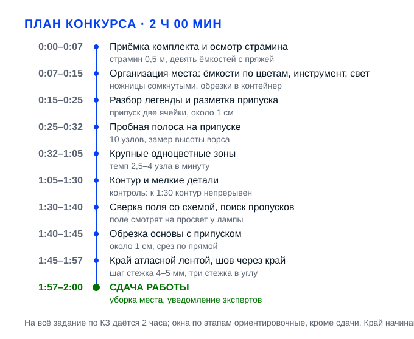
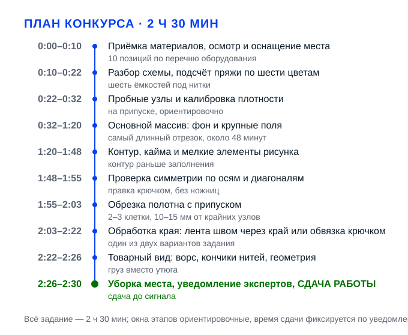
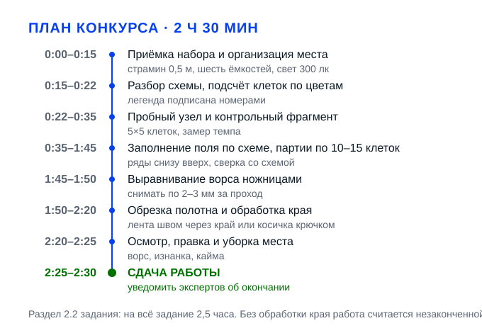

Ковроделие (ФВ)
Задания ниже — официальные файлы «Абилимпикс» (источник: abilympics-russia.ru), разложенные по категориям. Решения написаны по тексту задания, регламенту и критериям оценки; в них указано, что именно проверяет эксперт.
Школьник
14–16 лет, базовый уровень заданияВ официальном файле категории не разделены отдельными разделами — приводим задание целиком; различия по категориям смотрите в таблице модулей.
Пошаговое решение
Конкурсное задание школьников по компетенции «Ковроделие» выполняется за два часа без перерыва и состоит из трёх этапов: зашить коврик по выданной схеме узелками на страмине, обрезать лишнюю основу, оставив небольшой припуск, и обработать край атласной лентой швом через край, закрепив концы с изнанки. Комплект на одного участника уже лежит на столе: страмин 0,5 метра, пряжа в девяти ёмкостях по цветам схемы, крючок, ножницы, игла, атласная лента, игольница, контейнер под обрезки и карандаш. Ниже задание разложено на четыре задачи и сорок с лишним шагов — от осмотра основы и разбора легенды до уведомления экспертов о готовности. Главные риски здесь не в сложности приёма, а в распределении времени: узел осваивается за десять минут, а поле и обработка края съедают весь остаток, поэтому темп считается с первых минут, а край начинают не позже чем за пятнадцать минут до сдачи.

Задача 1. Организовать рабочее место и разобрать заданиеОрганизация · старт задания · 2 ч 00 мин на всё
Конкурсное задание школьников короткое по формулировке и очень плотное по времени: за два часа нужно связать коврик по выданной схеме, обрезать основу с припуском, обработать край атласной лентой и сдать работу. Первые полчаса решают, сколько узлов вы успеете положить потом, поэтому начинаем не с пряжи, а с осмотра страмина, раскладки цветов и разбора схемы на понятные участки. Всё, что здесь сделано аккуратно, экономит минуты на каждом следующем шаге.
Действие 1.1. Принять комплект и осмотреть основу
Шаг 1.1.1
Подходим к рабочему месту и первым делом разбираем комплект по перечню: страмин 0,5 метра, пряжа всех цветов задания в девяти ёмкостях, крючок, ножницы, игла, атласная лента, игольница, контейнер под обрезки, ручка или карандаш. Каждую позицию не просто находим глазами, а берём в руки и кладём на своё место: пряжу — слева от полотна, инструмент — справа, ёмкость с обрезками — у дальнего края стола. Если чего-то не хватает или пришло в другом количестве, сразу говорим наставнику, не начиная работу.
Перечень оборудования в конкурсном задании закрытый, и всё нужное уже лежит на столе: искать что-то по площадке во время работы нельзя, а время на приёмку даётся до старта. Разложенный по сторонам комплект — это ещё и требование охраны труда: материалы и инструменты должны храниться в отведённой коробочке, а не по карманам и не на коленях.
На столе девять ёмкостей с пряжей, все цвета схемы на месте, крючок и игла лежат отдельно от пряжи, ножницы с сомкнутыми лезвиями, контейнер пустой. Сверьте количество ёмкостей с числом цветов в легенде схемы — если цветов девять, а ёмкостей меньше, вы что-то не получили.
Самая частая ошибка — начать с пряжи и отложить пересчёт «на потом»: в середине работы обнаруживается, что нет одного цвета, а замена через наставника уже идёт за счёт конкурсного времени. Вторая ошибка — оставить иглу и крючок рядом с полотном, где они теряются под ворсом.
Эксперт проходит по местам до старта и смотрит, разобран ли комплект и лежит ли инструмент на своих местах; небрежный стол на старте он отмечает сразу.
Шаг 1.1.2
Кладём страмин на стол изнаночной стороной вверх и разглаживаем ладонью от центра к краям, не сгибая полотно. Осматриваем его по всей площади: не порваны ли перемычки ячеек, нет ли затяжек, не осыпается ли кромка, ровно ли натянута сетка. Если полотно пришло со складкой, её разглаживаем рукой и оставляем на пару минут под грузом — книгой или коробкой из комплекта, но без острых углов, чтобы не продавить ячейки.
Узел держится за перемычку между двумя ячейками, поэтому порванная перемычка — это дырка, которая расползётся под натяжением и вылезет на лицевой стороне к концу работы. Складка страшнее, чем кажется: на согнутом участке ячейки разной ширины, узлы лягут с разной плотностью, и коврик поведёт волной.
Полотно лежит ровно, без волн и пузырей, перемычки целые по всей площади, кромка не осыпается. Проведите ладонью по диагоналям — под рукой не должно быть ни бугра, ни провала. Осмотрите кромку по всему периметру, а не только у ближнего края: разрывы чаще всего прячутся в дальнем углу, на который при раскладке не падает взгляд.
Типичная ошибка — начать узор с угла, не заметив разрыва в середине поля: дырка закроется ворсом, но при обрезке края именно по ней пойдёт распуск. Вторая ошибка — растягивать полотно, чтобы разгладить складку: ячейки вытянутся и не вернутся к размеру.
Эксперт обращает внимание на состояние основы: работа на порванном страмине считается технологическим браком, даже если узор выполнен верно. Отдельно он отмечает, не лежат ли материалы на коленях и не выглядывают ли из карманов: по инструкции по охране труда всё хранится в отведённой коробочке.
Шаг 1.1.3
Определяем лицевую и изнаночную стороны и договариваемся с собой, где верх изделия. У ковровой вышивки на страмине лицевая сторона — та, где видны высокие петли ворса; изнанка плоская, с узелками. Полотно кладём лицевой стороной вверх и помечаем верхний край схемы карандашом — короткой чертой в 1–2 мм на припуске, за пределами узора, чтобы метка потом ушла под обрезку.
Путаница сторон — самая обидная потеря: узор ложится зеркально, и вернуть его на место можно только полной переделкой, на которую в двухчасовом задании нет времени. Метка на припуске нужна потому, что страмин с обеих сторон выглядит почти одинаково, а после первых рядов разложить полотно по памяти уже трудно.
Петли ворса смотрят вверх, изнанка плоская, метка стоит на припуске, а не внутри поля. Проверьте себя: поднимите полотно на уровень глаз — лицевая сторона выглядит пушистой и объёмной, изнаночная гладкая.
Ошибка новичка — шить узор с изнанки, потому что так удобнее держать крючок: коврик получится вывернутым, а петли будут смотреть внутрь. Вторая ошибка — ставить метку внутри поля, где её закроют узлы.
Эксперт проверяет ориентацию узора при первом же подходе к участнику — по расположению рисунка относительно края. Если метка стоит внутри поля, то есть там, где потом лягут узлы, он видит это сразу и записывает как небрежность разметки.
Действие 1.2. Оборудовать место под пряжу и инструмент
Шаг 1.2.1
Расставляем девять ёмкостей с пряжей полукругом за верхним краем полотна в том порядке, в каком цвета идут в легенде схемы: первый цвет — крайняя левая ёмкость, последний — крайняя правая. В каждую ёмкость опускаем по одному контрольному отрезку того же цвета, чтобы видеть оттенок, не вынимая всю массу. Ёмкости ставим так, чтобы они не касались полотна и не мешали руке ходить по полю.
Порядок ёмкостей — это ваша система навигации: при работе глаза остаются на схеме и на полотне, а рука тянется в нужную сторону на уровне привычки. Когда цвета разложены в произвольном порядке, вы каждый раз ищете нужный оттенок, и на сотне узлов это складывается в десять-пятнадцать потерянных минут.
Ёмкости стоят по порядку легенды, контрольные отрезки видны, ни одна ёмкость не стоит на полотне. Проверьте наклон: если ёмкость задевает ворс при движении руки, переставьте её на 3–4 см дальше. И проверьте, что все девять ёмкостей стоят в один ряд, а не в два: второй ряд вы будете задевать локтем и опрокидывать.
Ошибка — свалить всю пряжу в одну кучу «разберу по ходу»: отрезки цепляются друг за друга, ворс путается, а нужный цвет приходится вытаскивать из середины. Вторая ошибка — поставить ёмкости на полотно: они мнут уже связанные ряды.
Эксперт смотрит на организацию места как на отдельный навык: аккуратная раскладка читается сразу, как только он подходит к столу. Особенно он смотрит на дальнюю сторону стола: именно там обычно сваливают то, что не успели разложить.
Шаг 1.2.2
Укладываем инструмент в правой зоне: крючок ближе к полотну, иглу в игольницу остриём вниз, ножницы сомкнутыми лезвиями кольцами к себе. Контейнер под обрезки ставим справа у дальнего края, чтобы обрезки уходили в него движением в сторону, а не через полотно. Сразу отрезаем от пряжи ничего не нужно — ворс в комплекте нарезан, и подрезка портит длину петель.
Правило «ножницы сомкнутыми лезвиями, передавать кольцами вперёд» записано в требованиях охраны труда, и его соблюдение оценивают на площадке. Игла, лежащая остриём вверх, и обрезки, разбросанные по столу, — это не только травмоопасно, но и грязь в изделии: обрезанный ворс набивается между узлами и портит лицо коврика.
Крючок лежит в пределах ладони от полотна, игла — в игольнице, ножницы сомкнуты, контейнер пустой и открытый. Проверьте: не осталось ли обрезков на полу — по требованиям их собирают в один контейнер, а не разбрасывают.
Разложить инструмент по всей ширине стола, включая левую сторону: работать придётся правой рукой, и вы будете тянуться через полотно. Вторая ошибка — держать ножницы открытыми «чтобы под рукой были»: за два часа это прямое нарушение охраны труда.
Эксперт фиксирует состояние инструмента и порядок на столе в начале и в конце работы, сравнивая их между собой. Ему важно видеть, что игла убрана в игольницу, а ножницы закрыты: это прямая проверка требований охраны труда, записанных в конкурсном задании отдельным разделом.
Шаг 1.2.3
Проверяем посадку и свет. Садимся так, чтобы полотно было на 10–15 см ниже уровня глаз и наклонено к себе на 10–15 градусов: тогда видно всю поверхность без наклона головы. Лампу или светильник ставим слева и чуть впереди, если работаете правой рукой, чтобы тень от руки не падала на поле. Стул подбираем по высоте стола: предплечье лежит на столе, а не висит.
За два часа без смены позы шея и глаза устают настолько, что к концу задания падает темп и растёт число ошибок в схеме, а именно последние сорок минут решают, успеете ли вы обработать край. По требованиям к рабочим местам участников с нарушением зрения освещённость должна быть не менее 300 люкс, и на площадке это обеспечено — ваша задача не перекрывать свет корпусом и не отодвигать лампу.
Полотно наклонено, тень не падает на рабочую зону, спина не согнута, предплечье на столе. Посмотрите на поле с расстояния вытянутой руки: ячейки должны читаться без прищуривания. Если не читаются — придвиньте лампу или попросите лупу с подсветкой.
Сесть боком к свету и работать в тени собственной руки — через сорок минут глаза начинают «плыть», и цветовые зоны схемы путаются. Вторая ошибка — сидеть слишком низко и смотреть на полотно сверху вниз, роняя ворс на колени.
Эксперт оценивает эргономику и устойчивость рабочей позы, особенно у участников с нарушениями опорно-двигательного аппарата, которым высота стола подбирается индивидуально.
Действие 1.3. Разобрать схему на участки
Шаг 1.3.1
Кладём схему справа от полотна вверх ногами к себе, чтобы её верх совпадал с верхом коврика, и разбираем легенду: сколько в ней цветов, что означает каждый значок или клетка, есть ли отдельные обозначения для контура. Рядом со схемой кладём карандаш и нумеруем цвета цифрами от одного до девяти в том же порядке, что и ёмкости на столе. Если в легенде цветов меньше девяти, свободные ёмкости отставляем в сторону.
Конкурсное задание требует выполнить изделие согласно выданному описанию и схемам, то есть схема — это и есть техническое задание на изделие. Ошибка в чтении легенды не компенсируется аккуратностью: не тот оттенок в зоне — это несоответствие схеме, которое видно экспертным глазом сразу, а переделывать зону в двухчасовом задании нечем.
Каждому цвету легенды присвоен номер, и этот номер стоит на ёмкости с пряжей. Проверьте себя: покажите пальцем на любую клетку схемы и назовите, из какой ёмкости берёте пряжу, — ответ должен быть мгновенным.
Читать схему «по памяти» и не помечать цвета: на третьем десятке узлов оттенки схлопываются, особенно если в наборе два близких тона одного цвета. Вторая ошибка — положить схему сбоку вверх ногами относительно полотна: узор ляжет перевёрнутым.
Эксперт проверяет соответствие цветов схеме выборочно, в двух-трёх зонах, и смотрит, пользуется ли участник схемой или импровизирует. Отдельно он проверяет, помечены ли цвета: в наборе из девяти близких оттенков путаница без пометок почти неизбежна.
Шаг 1.3.2
Считаем поле: сколько ячеек в ширину и в высоту занимает узор, не считая припуска. Делим общее число ячеек на девяносто рабочих минут и получаем нужный темп — у школьника это обычно два с половиной или три узла в минуту. Если по расчёту выходит меньше двух узлов в минуту, узор в полном объёме не закрыть, и тогда сразу решаем, какие зоны делаем в первую очередь.
Задание рассчитано ровно на два часа, и в них входят не только узлы, но и обработка края. Школьники по условиям задания выполняют коврик по схеме без расширенной обработки изделия, но обрезка и лента всё равно занимают четверть часа: считать темп нужно от девяноста минут, а не от ста двадцати.
Число ячеек записано на схеме карандашом, темп посчитан и назван вслух, приоритетные зоны отмечены. Проверьте расчёт по факту: за первые десять минут вы должны закрыть столько узлов, сколько даёт расчёт, иначе план надо менять сразу.
Начать без расчёта и обнаружить в час дня, что закрыта треть поля: тогда край приходится обрабатывать по недоделанному коврику. Вторая ошибка — гнать темп в ущерб плотности, из-за чего поле получается редким.
Оценка идёт по готовому изделию и по соблюдению времени; эксперт отмечает, распределил ли участник силы или работал рывками. Он отмечает и то, назван ли темп вслух и записан ли расчёт на схеме: по этому видно, планировал участник работу или начал наугад.
Шаг 1.3.3
Отмечаем на полотне границы узора и линию припуска. Считаем от кромки внутрь две ячейки и проводим карандашом тонкую линию по всей ширине — это граница припуска под обработку края, всё, что ближе к кромке, узлом не заполняем. Дальше по схеме находим крайние точки рисунка и отмечаем их еле заметными точками на перемычках, не внутри ячеек. Линию ведём карандашом без нажима, чтобы не продавить нити страмина и не сдвинуть ячейки.
Под обработку края нужно оставить полотно, иначе ленту не к чему пришивать, а срез пойдёт по последнему ряду узлов и коврик распустится. Две ячейки при размере ячейки около пяти миллиметров дают припуск примерно в сантиметр — это минимум, при котором лента шириной от пяти миллиметров закроет срез и ляжет по узлам, а не по пустому полю.
Линия припуска видна по всему периметру, крайние точки узора отмечены, расстояние от кромки до линии одинаковое по всем четырём сторонам. Проверьте углы: именно там разметка чаще всего съезжает на ячейку.
Разметить припуск «на глаз» и зашить поле до самой кромки: обрабатывать край будет не за что. Вторая ошибка — рисовать линию по самим нитям страмина, которые потом видны из-под ворса; метки ставят на перемычках и на припуске, который уйдёт под обрезку.
Эксперт смотрит на симметрию узора относительно краёв: смещённый на две ячейки рисунок читается как ошибка разметки. Если разметка сделана ручкой по самим ячейкам, он отмечает это как след, который останется под ворсом.
Шаг 1.3.4
Разбиваем рисунок на участки и намечаем порядок работы: сначала самая большая одноцветная зона, потом средние зоны, контур и мелкие детали — последними. Порядок записываем на схеме цифрами 1, 2, 3 рядом с зонами. Внутри каждой зоны планируем идти рядами от нижнего края вверх, слева направо, не перескакивая через поле. На схеме же отмечаем, какие участки можно оставить незакрытыми, если время поджимает: решённое заранее не придётся решать в спешке.
Такой порядок экономит самое дорогое — перезаправку: пока вы работаете одним цветом, рука не меняет положение, а темп держится ровным. Контур и мелкие детали идут последними потому, что они задают читаемость рисунка, и если время кончится, лучше иметь закрытые большие зоны и чистый силуэт, чем множество мелких пятен на пустом поле.
На схеме стоят номера зон, и вы можете объяснить, что делаете первым и почему. Проверьте план по времени: сумма минут на зоны должна укладываться в девяносто. Отдельно проверьте, что первая зона в плане действительно самая большая: если вы начинаете с мелкой, значит план составлен по красоте, а не по времени.
Идти по рисунку сверху вниз, как читается схема: рука закрывает уже связанное и цепляет ворс. Вторая ошибка — начать с мелких деталей, на которых теряется время, и оставить большие зоны на конец. Если бросить поле на середине ради одной красивой детали, к сдаче не останется времени ни на обрезку, ни на ленту, и работа уйдёт без обработанного края.
Эксперт по ходу работы видит, есть ли у участника план: последовательное закрытие зон читается по полотну. По полотну он видит, совпадает ли порядок закрытия зон с заявленным планом, и отмечает работу рывками.
Действие 1.4. Отработать узел на пробной полосе
Шаг 1.4.1
Берём крючок и проверяем, как он проходит в ячейку: головка должна проходить под перемычку свободно, не раздвигая и не растягивая нити страмина. Если крючок цепляет полотно, поворачиваем его так, чтобы бородка смотрела вниз по ходу движения. Затем на припуске, за пределами узора, делаем десять пробных узлов одним цветом — это ваша настройка руки и одновременно проверка инструмента.
Пробная полоса на припуске бесплатна: эти узлы всё равно уйдут под обрезку, а полученный навык останется. Крючок, который рвёт перемычки, испортит основу за несколько десятков узлов, и это уже не исправить — поэтому проверку делают до старта узора, а не после первой ошибки в схеме.
Десять узлов стоят ровно, ворс одинаковой высоты, перемычки целые. Проверьте пальцем: под каждым узлом перемычка на месте, полотно не раздвинуто. Проверьте и сам крючок: головка не должна цеплять нити при повороте, а ручка не должна скользить в пальцах.
Начать сразу с узора без пробы: рука «разогревается» на первых тридцати узлах, и они ложатся заметно слабее остальных. Вторая ошибка — силой проталкивать крючок в слишком мелкую ячейку. Начать пробу на самом поле, а не на припуске: пробные узлы придётся снимать, и на месте снятых останутся растянутые ячейки.
Эксперт смотрит на постановку руки и на первые узлы у края: по ним видно, владеет ли участник приёмом. Он смотрит, где сделана проба: на припуске она допустима, внутри узора — это уже брак.
Шаг 1.4.2
Разбираем узел по движению. Крючок вводим с изнанки в одну ячейку и выводим в соседнюю, проходя под перемычкой между ними; пальцами левой руки подносим к головке отрезок пряжи, сложенный вдвое петлёй, и захватываем именно сгиб. Протягиваем сложенную нить через ячейку и оставляем сзади петлю, затем оба свободных конца продеваем в эту петлю и затягиваем узелок, удерживая концы на одной высоте.
КЗ описывает узел именно в такой последовательности, и порядок движений здесь не формальность: сгиб, а не два конца, даёт ровную высоту ворса, а петля, оставленная сзади, прижимает узел к перемычке. Если тянуть за концы по отдельности, ворс получается разной длины, и лицо коврика идёт волной.
Узел стоит на перемычке и не съезжает, если подёргать за концы; обе ножки ворса одинаковой длины; петля на изнанке плотно обхватывает перемычку. Проверьте на пробной полосе: подёргайте первый узел — он не должен растягиваться в петлю.
Захватить крючком один конец вместо сгиба: узел получается перекошенным и при натяжении выползает наизнанку. Вторая ошибка — затягивать слабо, «чтобы потом поправить»: слабые узлы вылезают при обрезке края.
Эксперт проверяет несколько узлов на прочность и на одинаковость высоты — это основной технологический критерий изделия. Он просит показать один узел в замедленном темпе и смотрит, идёт ли крючок под перемычку и держатся ли концы на одной высоте.
Шаг 1.4.3
Замеряем высоту ворса на пробной полосе линейкой и подгоняем её под единый размер: у школьного коврика ворс обычно от двух до трёх сантиметров, то есть примерно половина длины заготовленного отрезка минус сантиметр на узел. Если отрезки в комплекте короче или длиннее, работаем по их фактической длине, добиваясь одинаковости, а не подрезаем пряжу ножницами.
Высота ворса — то, что видно на готовом изделии первым: ряд с разной длиной петель читается как небрежность, даже если схема выполнена точно. Подрезать отрезки ножницами нельзя: ворс на страмине держится узлом, и обрезанный узел распускается при первой же чистке изделия.
Все пробные узлы одной высоты, замер по линейке совпадает у пяти случайных узлов плюс-минус два миллиметра. Проверьте на просвет: петли не должны выбиваться из общего ряда. Сравните крайние узлы пробной полосы с серединными: если разница больше пяти миллиметров, рука ещё не держит одинаковую затяжку.
Тянуть узлы с разной силой — это главная причина «рябого» ворса, и исправляется она только полной переделкой ряда. Вторая ошибка — подравнивать ворс ножницами по уже связанному полю. Выравнивать ворс ножницами по уже связанному полю: обрезанные концы распускаются, и в ряду появляются пропуски.
Эксперт смотрит на поле под углом к свету: при боковом освещении разная высота ворса видна отчётливее, чем при прямом. Он смотрит на пробную полосу до начала узора и сравнивает её с полем в конце работы.
Задача 2. Заполнить узор по схемеОсновной модуль · 90 минут на поле
Это та часть задания, где набирается почти всё изделие: ровными рядами закрываем крупные одноцветные зоны, аккуратно переходим с цвета на цвет по границе рисунка, а контур и мелкие детали делаем последними, когда уже видно, сколько осталось времени. Здесь важнее не скорость отдельного движения, а плотность и постоянство: поле должно быть закрыто так, чтобы страмин не просвечивал между узлами, а рисунок читался с расстояния шага.
Действие 2.1. Зашить первый ряд и держать направление
Шаг 2.1.1
Находим по схеме нижний левый угол первой зоны и ставим первый узел ровно в ту ячейку, которая обозначена схемой, не отступая и не добавляя. Дальше идём вдоль нижнего края зоны вправо, узел за узлом, проверяя каждый по схеме. Первый ряд делаем медленно, в полтора раза медленнее рабочего темпа: он задаёт линию, по которой потом выравниваются все остальные.
Первый ряд — это разметка, которая не сотрётся: если он ушёл на ячейку в сторону, весь рисунок сместится вместе с ним, и заметно это станет только к середине поля, когда переделка невозможна. Кроме того, по первому ряду удобно проверять плотность: если между узлами видна сетка, темп надо снизить, а не увеличивать.
Первый ряд идёт точно по линии схемы, узлы стоят вплотную, сетка между ними не просвечивает. Отойдите на два шага и посмотрите: линия ровная, без уступов и наклонов. Проверьте и количество узлов в первом ряду: оно должно совпадать с числом ячеек, которые отводит схема, ни больше ни меньше.
Ошибка — начать с середины поля, потому что там «самое видное место»: края потом не сойдутся, а исправлять придётся по всей ширине. Вторая ошибка — разгонять темп на первом ряду и оставлять между узлами просветы.
Эксперт подходит к участнику в первые двадцать минут и смотрит именно на первый ряд — по нему он прогнозирует качество всей работы. Он сравнивает первый ряд с линией схемы и смотрит, не начал ли участник с середины поля.
Шаг 2.1.2
Ведём заполнение рядами снизу вверх: закрыли нижний ряд — переходим на следующий, двигаясь в обратную сторону, как при чтении строки слева направо и справа налево. Крючок при этом не отрывается от полотна далеко, а рука ходит в пределах одной ячейки от предыдущего узла. Дойдя до границы зоны, разворачиваемся и идём обратно, не перескакивая через уже зашитое.
Работа рядами даёт ровную плотность: вы всё время видите перед собой кромку закрытого поля и подтягиваете к ней новый ряд. Если ходить по полю хаотично, плотность в разных углах получается разной, а стыки рядов читаются на лицевой стороне полосами. К тому же при работе рядами видно, сколько площади закрыто, и это единственный надёжный способ держать темп без постоянного пересчёта.
Новый ряд идёт параллельно предыдущему, расстояние между рядами одинаковое, на стыке нет двойных и пропущенных ячеек. Проверьте край зоны: он должен быть ступенчатым по схеме, а не сглаженным на глаз.
Зашивать «пятнами», закрывая самые заметные места: между пятнами остаются пропуски, которые потом трудно найти. Вторая ошибка — перескакивать через зашитый участок и оставлять за ним хвост из одной-двух ячеек.
Эксперт проверяет поле на просвет и на ощупь: равномерность плотности — отдельный критерий качества изделия. Он смотрит на стыки рядов под углом к свету: неравномерная плотность читается как полосы.
Шаг 2.1.3
Держим рабочий темп и каждые двадцать пять минут делаем короткую остановку на полминуты: отводим взгляд на дальнюю стену, разминаем кисть, проверяем по схеме, где находимся. Остановку используем и для контроля: сравниваем закрытую площадь с планом. Если отстаём больше чем на пятую часть, сокращаем детализацию по заранее выбранному приоритету, но плотность не снижаем.
Два часа непрерывной мелкой работы — это нагрузка на кисть и зрение, и к концу второго часа темп падает у всех, а ошибки в схеме учащаются. Короткая пауза стоит тридцать секунд и возвращает точность, тогда как попытка работать через усталость обходится в переделанную зону.
К концу каждого получаса закрыто примерно столько ячеек, сколько даёт расчёт темпа. Кисть не сводит, взгляд фокусируется на дальнем предмете без усилия. Проверьте и кисть: если пальцы начали дрожать на затяжке, паузу надо сделать немедленно, иначе пойдут слабые узлы.
Работать без пауз «пока есть силы», а потом полчаса приходить в себя: на конкурсе это прямой проигрыш по времени. Вторая ошибка — на паузе начинать перебирать пряжу и терять нить рассуждения по схеме.
Эксперт наблюдает за режимом работы: ровный темп без рывков и пауз выглядит как владение приёмом. Он отмечает, делает ли участник паузы осознанно: взгляд на дальний предмет и разминка кисти видны со стороны.
Действие 2.2. Закрыть крупную одноцветную зону
Шаг 2.2.1
Берём пряжу первой зоны из ёмкости с нужным номером и работаем ею до полного закрытия зоны, не меняя цвет на соседние участки. Отрезки берём по одному, не вынимая из ёмкости горсть: в руке они путаются, а на столе пачкаются. Отработанные хвостики складываем в контейнер, а не бросаем на полотно, где они цепляются за ворс. Если отрезок оказался слишком длинным и ворс выбивается из общего ряда, такой отрезок лучше отложить в сторону, а не тянуть сильнее остальных.
Порядок «одна зона — один цвет до конца» даёт ровный темп и одинаковую затяжку по всей площади. Когда цвет меняется каждые пять узлов, рука всё время перестраивается, и затяжка получается то слабее, то сильнее — а это видно на готовом коврике как рябь в пределах одной зоны.
Зона закрыта полностью, одного цвета, без вкраплений другого оттенка. Проверьте границу зоны по схеме: она должна совпадать по форме, а не быть прямоугольником «примерно там». Проверьте по ёмкости: пряжи этого цвета должно остаться примерно столько, сколько нужно на оставшиеся участки зоны.
Смешивать два близких оттенка одного цвета, потому что «разница не видна»: при боковом свете разница читается отчётливо, и зона выглядит пятнистой. Вторая ошибка — держать всю пряжу цвета на коленях, где она путается.
Эксперт сверяет цвет зоны с легендой схемы и смотрит, нет ли подмены оттенка в погоне за экономией времени. Он сверяет цвет зоны не только со схемой, но и с соседними зонами: подмена оттенка видна на стыке.
Шаг 2.2.2
Внутри зоны узлы ставим в каждую ячейку схемы, заходя крючком под перемычку снизу, чтобы узел ложился на неё, а не на соседний узел. Уже связанные узлы не поддеваем: крючок идёт в свободную ячейку, а ворс соседей придерживаем пальцем левой руки. Плотность держим такую, чтобы между ножками ворса не было видно нитей страмина. Крючок держим под углом примерно сорок пять градусов к полотну: так головка легко проходит под перемычку и не цепляет соседний ворс.
Плотность — главный признак качества у ковровой вышивки: редкое поле раскрывается под ногой, и изделие перестаёт быть ковриком. Кроме того, узел, посаженный на соседний узел вместо перемычки, держится за чужой ворс и вытягивается при первом же натяжении.
Поле стоит плотно, страмин не просвечивает ни в одном месте зоны, узлы сидят на перемычках. Проверьте ладонью: поверхность должна быть упругой и однородной, без провалов между узлами. Проверьте на просвет у лампы: если между узлами видны светлые точки нитей страмина, плотность недостаточна.
Гнать плотность в ущерб времени или наоборот — редеть к середине зоны, когда поджимает срок: середина поля всегда получается рыхлее краёв, и это самая заметная ошибка школьных работ. Работать крючком строго вертикально: головка цепляет перемычку и рвёт её, а разрыв потом расползается под ворсом.
Эксперт проверяет плотность именно в середине поля, а не по краям, где её легко сделать идеальной. Он проверяет плотность, прижимая ладонь к полю: упругость и однородность чувствуются рукой сразу.
Шаг 2.2.3
Каждые пять-семь узлов сверяемся со схемой, ведя по ней пальцем левой руки: нашли текущую клетку — проверили цвет следующей — поставили узел. Схему держим на столе, а не на весу, и не закрываем её полотном. Если сбились, не гадаем, а отсчитываем от ближайшего угла зоны, у которого точно известны координаты. Схему при этом держим под тем же углом, под каким лежит полотно, и не поворачиваем её в руках: поворот схемы — самая частая причина зеркальных ошибок.
Сбой на одну ячейку в зоне одного цвета не виден сразу, но он сдвигает всю границу рисунка, и на стыке с соседним цветом появляется уступ. Отсчёт от угла зоны занимает секунды и всегда даёт точку опоры, тогда как попытка «вспомнить, где мы были» почти всегда заканчивается ошибкой.
Положение крючка совпадает с клеткой схемы, отмеченной пальцем, ни один узел не поставлен вне зоны. Проверьте границу зоны на просвет: она идёт по клеткам схемы, без срезанных уголков. Проверьте углы зоны по диагонали: у правильно закрытой зоны диагонали совпадают со схемой, а не срезаны на глаз.
Работать по памяти, отложив схему в сторону «чтобы не мешала»: ошибки накапливаются незаметно и обнаруживаются, когда исправлять уже дорого. Вторая ошибка — считать клетки от последнего узла, а не от угла зоны.
Эксперт сравнивает готовое поле со схемой по диагоналям и по углам — именно там видны сдвиги на одну ячейку. Он ведёт пальцем по диагонали изделия и по диагонали схемы, сравнивая их на глаз.
Шаг 2.2.4
Закрыв зону, обрезаем рабочую нить не под корень: оставляем хвостик в два-три сантиметра и прячем его крючком под соседние узлы с изнанки, протягивая в двух направлениях. Хвостик не завязываем узлом на изнанке и не оставляем висеть: он вылезет на лицо при обрезке края или первой чистке коврика. Если пряжа скользкая и конец выходит из-под узлов, протяжку повторяют в третьем направлении, но не завязывают узел и не оставляют петлю на изнанке.
Концы нитей, спрятанные под узлы в двух направлениях, держатся сами и не дают зоне распуститься, если один узел на краю вытянется. Узелки на изнанке утолщают изделие и мешают ровно обрезать край, а висящие хвосты — прямой путь к распуску в самом конце работы.
Хвостиков на лицевой стороне нет, изнанка плоская, концы спрятаны под узлы и не вытягиваются при подёргивании. Проверьте пальцем изнанку: она должна быть гладкой, без бугров. Проверьте каждый спрятанный конец отдельно: потяните за соседний узел, и если конец покажется на лице, прячьте заново.
Обрезать нить под самый узел: он распустится при натяжении, и в поле появится дырка. Вторая ошибка — завязывать концы узелком на изнанке, из-за чего коврик не ляжет плоско. Оставлять концы висеть на изнанке до конца работы, чтобы «спрятать все сразу»: они цепляются за крючок и вытягиваются в ворс.
Эксперт осматривает изнанку изделия отдельно: аккуратная изнанка считается признаком владения техникой. Он переворачивает изделие и смотрит изнанку на просвет: бугры и узелки видны как тёмные пятна.
Действие 2.3. Переходить с цвета на цвет по границе
Шаг 2.3.1
На границе двух зон сначала закрываем целиком ту зону, у которой больше площадь, и только потом берём соседний цвет. При смене цвета новый узел ставим в свободную ячейку вплотную к уже связанному, но крючок заводим под перемычку, а не под ворс соседа. Первый узел нового цвета делаем медленнее и сразу проверяем по схеме. Если граница идёт по диагонали, ведём её ступеньками по клеткам схемы: каждая ступенька — одна ячейка, иначе линия поплывёт.
Граница — самое уязвимое место узора: именно по ней видно и сдвиг на ячейку, и разную высоту ворса. Последовательное закрытие зон позволяет держать одну затяжку на всей площади, а новый узел, посаженный на ворс соседа, создаёт утолщение, которое читается как шишка на рисунке.
Стык цветов идёт ровной ступенчатой линией по клеткам схемы, без просветов и без наложений. Проверьте границу под углом к свету: не должно быть ячеек, забитых двумя цветами. Проверьте стык под лупой или на просвет: в ячейке должен стоять один цвет, а не два рядом без зазора.
Стараться «сгладить» границу, втыкая узлы на полклетки: страмин не даёт полклетки, узел либо стоит в ячейке, либо нет. Вторая ошибка — тянуть новый цвет через край зоны, чтобы спрятать стык. Забивать пограничную ячейку двумя цветами, чтобы «сровнять» стык: ячейка не выдержит две петли и разойдётся.
Эксперт рассматривает границы цветовых зон в первую очередь: по ним видно, читал ли участник схему. Он смотрит на границы зон при боковом свете: там видны и утолщения, и пропуски, и подмену оттенка.
Шаг 2.3.2
Когда зон больше двух и они чередуются мелкими участками, работаем «по цвету»: собираем все участки одного цвета за один подход, перемещаясь по полю от нижнего края вверх. Между участками одного цвета нить не обрезаем, а протягиваем по изнанке в обход уже связанных узлов, придерживая протяжку пальцем, чтобы она не легла под ворс. Протяжку по изнанке не делаем длиннее пяти-шести сантиметров: длинная нить цепляется и стягивает изделие при натяжении.
Подход «по цвету» экономит время на смене нити и даёт одинаковую затяжку во всех участках одного оттенка. Протяжка по изнанке в обход узлов не утолщает изделие, а протяжка под ворсом видна на лице тёмной полосой, особенно если цвета контрастные. И ещё: при подходе «по цвету» видно, сколько участков осталось, и это помогает держать темп.
Все участки цвета закрыты, натяжение одинаковое, на лице нет тёмных полос от протяжек. Проверьте, подёргав за нить участка: она не должна выходить из соседнего участка. Проверьте изнанку на просвет: протяжки не должны проступать тёмными линиями на лицевой стороне.
Тянуть нить напрямую через поле, минуя изнанку: на лице появляется стянутая дорожка. Вторая ошибка — оставлять длинные протяжки на изнанке, которые цепляются за крючок при работе. Протяжку, попавшую под уже связанные узлы, потом не вытащить: она зажимается ворсом и тянет за собой соседние участки при натяжении.
Эксперт проверяет лицо изделия на наличие протяжек и стяжек: это типичный дефект при работе «по цвету». Он также переворачивает изделие и смотрит изнанку: правильная работа «по цвету» даёт аккуратную изнанку без длинных перемычек между участками.
Шаг 2.3.3
Смена цвета в одном узле рисунка делается так: доводим узел до затяжки, отпускаем концы, берём новый отрезок и ставим следующий узел уже им. Старый отрезок не обрезаем сразу — оставляем хвостик и прячем его после того, как вокруг нового цвета закрыто хотя бы три-четыре узла, чтобы было подо что спрятать. Если новый цвет нужен всего в одной ячейке, а следующий узел снова прежний, отрезок не меняют: узел делают из прежней пряжи, а одиночную ячейку закрывают после, спрятав концы.
Прятать концы сразу после смены цвета неудобно: рядом ещё пустые ячейки, и хвостик не за что зацепить, он выскользнет. Небольшая отсрочка в три-четыре узла даёт плотное окружение, в котором конец держится надёжно, а работа не сбивается на бесконечную уборку ниток.
На стыке цветов нет висящих концов, все они спрятаны под узлы, лицо чистое. Проверьте стык на просвет: ворс одного цвета не должен вылезать в зону другого. Проверьте стык на ощупь: он должен быть такой же толщины, как остальное поле, без бугорка от спрятанных концов.
Прятать хвостик, не закрепив его, — он вылезет при обрезке края. Вторая ошибка — обрезать старый цвет сразу, оставляя узел на границе незакреплённым. Менять цвет на каждом узоре по два-три раза: концы негде спрятать, и стык получается рыхлым, с торчащим ворсом.
Эксперт обращает внимание на стыки цветов: чистый стык без вылезших концов говорит о культуре работы. Он просит показать стык двух цветов и смотрит, спрятаны ли концы и не вылезает ли ворс одного цвета в чужую зону.
Шаг 2.3.4
Следим за тем, чтобы ворс на границе зон не «переезжал»: при затяжке узла нового цвета концы держим строго перпендикулярно полотну и не оттягиваем их в сторону соседней зоны. Затянув, отпускаем концы свободно, даём ворсу распрямиться и только потом берёмся за следующий узел. Если ворс всё же лёг с наклоном, его не приглаживают, а освобождают: крючком слегка приподнимают петлю с изнанки и отпускают, давая ей встать вертикально.
Оттянутые в сторону концы дают наклонный ворс, который после финального выравнивания всё равно ложится не так, как остальной: на границе появляется полоса «прилизанного» ворса. Ровная затяжка перпендикулярно полотну — это то, что отличает аккуратную работу от любительской.
Ворс на границе стоит вертикально, как и по всему полю, без наклонных и прилизанных ножек. Проверьте ладонью: проведите против ворса — он должен подниматься обратно равномерно. Проверьте границу зон, провёдя ладонью против ворса: наклонные ножки не поднимутся вместе с остальными.
Тянуть концы по диагонали, потому что так удобнее держать руку: ворс ложится под углом, и граница зон выглядит вдавленной. Вторая ошибка — приглаживать ворс пальцем, чтобы «выровнять»: он слёживается и не поднимается.
Эксперт смотрит на ворс под углом к свету и отмечает участки с наклонными петлями. Он смотрит на ворс вдоль границы цветов: наклонные петли дают тёмную полосу вдоль стыка.
Действие 2.4. Довести контур и мелкие детали
Шаг 2.4.1
К контуру переходим, когда закрыты все крупные зоны. Контур делаем одним цветом, узлы ставим по клеткам схемы, идя по линии без разрывов: начали от угла — дошли до другого угла, не оставляя пропусков «на потом». Если контур прерывается другим цветом, останавливаемся на границе, а не перескакиваем через ячейку. Если контур идёт по краю изделия, отступаем от линии припуска не меньше одной ячейки, чтобы узлы не мешали обрезке и обработке края.
Контур задаёт читаемость рисунка на расстоянии: коврик с закрытыми зонами и рваным контуром выглядит незаконченным, тогда как ровная линия сразу собирает изображение. Разрыв в контуре потом трудно найти: он теряется среди ворса, а глаз на готовом изделии спотыкается именно о него.
Линия контура непрерывная по всему периметру рисунка, толщина одинаковая, ни одного пропуска. Проверьте, отойдя на три шага: силуэт должен читаться целиком, без выпадающих участков. Проверьте контур на фотографии или в отражении экрана телефона: в уменьшенном виде разрывы заметнее, чем в натуральную величину.
Делать контур в последние десять минут «как получится»: темп поджимает, и линия выходит с пропусками. Вторая ошибка — делать контур толще схемы, чтобы «было видно». Вести контур сдвоенными узлами «чтобы линия была видна»: рисунок расплывается, а рисунок схемы перестаёт читаться.
Эксперт оценивает читаемость рисунка с расстояния: контур — первое, на что падает взгляд. Он отходит на два-три шага и смотрит на изделие целиком: контур должен читаться с этого расстояния.
Шаг 2.4.2
Мелкие детали внутри зон (точки, лепестки, отдельные клетки) делаем после контура, идя от центра детали к её краям. На каждую деталь считаем ячейки по схеме и проверяем результат сразу после закрытия, пока деталь маленькая и её видно целиком. На детали тратим не больше того времени, которое осталось по плану на этот этап. Если деталей много и они одинаковые, делаем их подряд, одну за другой, не возвращаясь к уже закрытым: возврат стоит времени на поиск места.
Мелкие детали — самая дорогая по времени часть узора: одна деталь из четырёх клеток требует такой же смены цвета, как большая зона. Поэтому их делают, когда основное поле уже закрыто, и делают выборочно, если время поджимает: лучше чистый рисунок без одной детали, чем рваное поле с недоделанными крупными зонами.
Каждая деталь совпадает со схемой по форме и цвету, лишних узлов нет. Проверьте по количеству: сколько деталей на схеме — столько закрыто, и это видно без пересчёта каждой клетки. Проверьте симметрию парных деталей: расстояние от контура до каждой должно быть одинаковым.
Начинать с мелочей и застрять на них, оставив большие зоны недоделанными: это самая частая потеря баллов на школьной категории. Вторая ошибка — увеличивать детали, чтобы они «читались», и разрушать пропорции рисунка.
Эксперт сверяет мелкие детали со схемой выборочно, но обязательно смотрит, сохранены ли пропорции рисунка. Он сравнивает парные детали между собой: в двух одинаковых лепестках число ячеек должно совпадать до клетки.
Шаг 2.4.3
Перед тем как закончить поле, проходим по нему взглядом по диагоналям и находим пустые ячейки внутри узора: они видны как тёмные точки на просвет. Каждую закрываем тем цветом, который стоит в схеме. Затем проверяем, не осталось ли узлов, поставленных вне схемы, — их аккуратно снимают крючком, подцепив петлю с изнанки, и прячут концы. Снимать лишний узел лучше сразу, пока ворс рядом не приглажен: снятый узел оставляет растянутую ячейку, и её надо закрыть заново.
Пропущенная ячейка на готовом поле выглядит как дырка, и именно её эксперт находит первой, потому что взгляд идёт по рисунку. Лишний узел не менее заметен: он ломает линию контура и меняет силуэт детали, а снять его проще, пока ворс не приглажен и не слёжился.
Пустых ячеек внутри узора нет, лишних узлов вне схемы нет, плотность одинаковая по всей площади. Проверьте поле на просвет у лампы — это самый быстрый способ найти пропуски. Проверьте и края узора: узлы не должны выходить за линию припуска, иначе их заденет ножницы при обрезке.
Проверять только «на глаз» при прямом свете: при таком освещении пропуски не видны. Вторая ошибка — оставлять найденный лишний узел, чтобы не тратить время. Оставлять найденный пропуск до конца работы: к финалу его уже не найти среди ворса, и он уйдёт в сдачу.
Эксперт проверяет поле на просвет и по схеме; пропуски и лишние узлы он фиксирует как несоответствие заданию. Он проверяет поле выборочно, но обязательно смотрит на просвет у лампы.
Шаг 2.4.4
Заканчиваем поле за пятнадцать минут до момента, когда по плану начинается обработка края, даже если не все мелкие детали закрыты. Оставшиеся детали либо закрываем ускоренно по приоритету, либо оставляем, но тогда обязательно доводим до конца контур. После этого полотно больше не зашиваем: оно переходит в следующий этап. Остаток пряжи и обрезки при этом убираем в контейнер сразу: на этапе обработки края они будут мешать и цепляться за ленту.
Обработка края — обязательная часть задания: без неё изделие считается незаконченным, сколько бы узлов вы ни положили. Пятнадцать минут — это минимум, за который реально обрезать полотно, подготовить ленту и пройти швом по периметру коврика размером с ладонь.
Поле закрыто или доведено до приоритетного объёма, контур непрерывен, инструмент для обработки края под рукой. Проверьте по часам: до перехода на ленту остаётся не меньше пятнадцати минут. Проверьте по часам и по числу закрытых ячеек одновременно: время показывает срок, а ячейки — сколько успели.
Дошивать детали «ещё чуть-чуть» и оставить край необработанным: это самая дорогая ошибка всего задания. Вторая ошибка — начинать обработку края, не закрепив последние концы нитей. Начинать обработку края с недоделанного контура и надеяться вернуться к нему после: не вернётесь, край займёт весь остаток времени.
Эксперт фиксирует время перехода к обработке края: он видит, управляет ли участник своим временем. Он отмечает, во сколько участник перешёл к краю, и сравнивает это время со временем сдачи.
Задача 3. Обрезать основу и обработать край атласной лентойЗавершение изделия · 15 минут
Готовое поле — это ещё не коврик: страмин по краям торчит, срез осыпается, и без обработки изделие выглядит незаконченным. По заданию школьников обрезают лишнюю основу, оставляя небольшой припуск, и обрабатывают край атласной лентой швом через край, а концы ленты закрепляют и прячут в полотне. Здесь важно не торопиться: срезанное лишнее не вернуть, а кривая лента видна даже на идеально связанном поле.
Действие 3.1. Обрезать основу с припуском
Шаг 3.1.1
Раскладываем коврик на столе лицевой стороной вниз и расправляем его ладонями, не натягивая. Ножницами проходим по периметру и срезаем всё, что за пределами размеченной линии припуска, оставляя от последнего ряда узлов полосу шириной около одного сантиметра, то есть две ячейки страмина. Срезаем по прямой линии, ведя ножницы от угла к углу, а не по частям.
В конкурсном задании прямо сказано: обрезать лишнюю основу, оставив небольшой припуск, и только потом обрабатывать край. Припуск в две ячейки нужен, чтобы лента легла по полотну, а не по ворсу, и чтобы срез не оказался вплотную к узлам. Срез по прямой даёт ровную линию края, а срез по частям — волну, которую лентой уже не выправить.
Полоса полотна по всему периметру одинаковой ширины, линия среза прямая, до последнего ряда узлов остаётся не меньше сантиметра. Проверьте линейкой в четырёх местах: разница по сторонам не должна превышать двух-трёх миллиметров.
Срезать полотно под самые узлы «чтобы не торчало»: ленту не за что пришить, и край начнёт распускаться вместе с последним рядом ворса. Вторая ошибка — обрезать на весу, не расправив полотно: линия уйдёт по диагонали.
Эксперт проверяет ровность края и ширину припуска: перекошенный срез видно на готовом изделии сразу, даже под лентой. Отдельно он смотрит на углы среза и на то, не задет ли последний ряд узлов: срезанный узел сразу виден как выпавший ворс.
Шаг 3.1.2
После обрезки вынимаем из полотна вытянутые нити страмина: те, что торчат по срезу длиннее остальных, подрезаем ножницами вровень, а не вытягиваем — вытянутая нить тянет за собой перемычку и распускает ячейку. Обрезки складываем в контейнер, а не смахиваем на пол. Полотно после этого раскладываем на столе и прижимаем по углам, чтобы оно не сдвигалось.
Страмин — жёсткая сетка, и по срезу он осыпается: торчащие нити потом пробиваются сквозь ленту и выглядят как лохматый край. Вытягивание нити опаснее подрезания, потому что нить страмина идёт целой линией через несколько ячеек и при натяжении уносит перемычки, на которых держатся узлы.
По срезу нет торчащих нитей длиннее двух-трёх миллиметров, полотно не разошлось, обрезки в контейнере. Проверьте срез пальцем: он должен быть шершавым, но не колючим, без петель. Проверьте и линейкой: ширина припуска по сторонам отличается не больше чем на два миллиметра, иначе лента ляжет волной.
Рвать лишние нити руками: вместе с нитью уходит перемычка, и по краю появляются дырки, которые лента уже не закроет. Вторая ошибка — смахивать обрезки со стола рукой на пол. Обрезать торчащие нити не подрезая, а сжигая зажигалкой: на площадке это прямое нарушение требований безопасности.
Эксперт осматривает срез до начала обработки края и отмечает осыпающиеся участки. Он проводит пальцем по срезу и смотрит, не остались ли на нём петли и вытянутые нити, за которые потом зацепится лента.
Шаг 3.1.3
Проверяем углы: на каждом углу припуск должен быть чуть больше, чем по сторонам, примерно полторы ячейки по диагонали, чтобы лента легла в угол без натяжения. Если на каком-то углу полотно срезано вплотную, выправляем ситуацию до начала шва: либо оставляем этот угол чуть свободнее по соседним сторонам, либо сразу планируем в углу три закрепляющих стежка вместо одного.
Угол — единственное место, где лента поворачивает под девяносто градусов, и именно там край чаще всего стягивается и топорщится. Небольшой запас по диагонали даёт ленте место для поворота, а дополнительные стежки в углу держат форму угла при носке и чистке.
Все четыре угла с запасом, диагональ не короче полутора ячеек, углы не загнуты и не вытянуты. Проверьте, положив коврик на стол: он лежит плоско, углы не поднимаются. Проверьте каждый угол отдельно, приложив линейку по диагонали: запас по диагонали должен быть одинаковым на всех четырёх.
Срезать углы «под ноль», чтобы изделие казалось аккуратнее: при обмётке угол стянется, и коврик будет стоять горбом. Вторая ошибка — вытягивать угол, подрезая соседнюю сторону. Подрезать угол, чтобы он «не топорщился»: после обмётки он всё равно стягивается, а запас уже срезан.
Эксперт проверяет, лежит ли изделие плоско: неплоский коврик считается дефектом обработки. Он смотрит на изделие с торца, положив его на стол: подъём любого угла виден как тень под краем.
Действие 3.2. Подготовить ленту и иглу
Шаг 3.2.1
Отмеряем атласную ленту по периметру изделия с запасом: две длины плюс две ширины плюс по пять-шесть сантиметров на каждый угол и на закрепление концов. Отрезаем ножницами строго поперёк, а не под углом к кромке. Если лента в комплекте уже нарезана, берём отрезок не короче этого расчёта и лишнее не отрезаем до конца работы. Отрезанную ленту сразу не вдеваем, а расправляем по всей длине: перекрученная лента потом ложится витой полосой.
Лента короче периметра — это остановка на середине стороны, когда придётся сращивать концы на видном месте. Запас в пять-шесть сантиметров на угол нужен потому, что при повороте лента огибает толщину полотна и съедает больше, чем кажется по прямой. И ещё: при нехватке ленты стык приходится делать на середине стороны, а он заметен даже тогда, когда спрятан аккуратно.
Длина ленты перекрывает периметр с запасом, срез ровный и поперечный, лента не перекручена. Проверьте, приложив ленту по периметру: концы должны сойтись с запасом не меньше десяти сантиметров. Проверьте концы ленты: они должны быть ровными и не осыпанными по кромке.
Отрезать ленту «на глаз» по одной стороне: на второй стороне не хватает нескольких сантиметров. Вторая ошибка — резать ленту под углом к кромке, из-за чего она осыпается по косой. Отрезать ленту, не приложив её к периметру, и оставить пять сантиметров на все четыре угла: их нужно по пять на каждый.
Эксперт смотрит на аккуратность подготовки: косой срез ленты осыпается и портит вид края. Он смотрит на срез ленты и на её длину: слишком короткий отрезок означает сращивание на видном месте.
Шаг 3.2.2
Срезаем кончик ленты наискосок, под углом примерно сорок пять градусов, чтобы получился узкий язычок: так лента проходит в ушко иглы без разлохмачивания. Если лента скользкая и язычок выскальзывает, складываем кончик пополам и протаскиваем сложенным. Вдеваем ленту в иглу и вытягиваем конец на десять-двенадцать сантиметров, не вытягивая весь отрезок.
В задании кончик ленты срезают наискосок именно для того, чтобы вдеть её в иглу: прямой срез упирается в ушко и осыпается, а косой язычок входит свободно и сохраняет кромку. Короткий рабочий конец нужен, чтобы лента не выскочила из ушка на первом же стежке.
Лента в игле держится, язычок не разлохмачен, рабочий конец не короче десяти сантиметров. Проверьте, потянув за ленту: она не должна выходить из ушка. Проверьте, что лента в ушке не перекручена: перекрут даёт жёсткий стежок и стягивает край.
Проталкивать ленту в ушко силой, разлохматив кромку: дальше она будет цепляться за полотно на каждом стежке. Вторая ошибка — оставить слишком короткий конец, который выскальзывает на первом стежке. Брать иглу с узким ушком: лента не проходит и разлохмачивается уже на втором стежке.
Эксперт обращает внимание на подготовку инструмента: разлохмаченная лента сразу выдаёт спешку. Он смотрит, как подготовлена лента: косой срез и целая кромка видны сразу, как только участник берёт иглу.
Шаг 3.2.3
Перед началом шва примеряем ленту по краю: прикладываем её к срезу, смотрим, закрывает ли она ширину припуска целиком, и проверяем, как она поведёт себя на повороте. Если лента уже припуска, срезаем припуск ещё на одну ячейку; если шире — оставляем как есть, но тогда шов ведём ближе к ворсу, чтобы лента легла по узлам, а не свисала с края. Проверку делаем на стороне, которую потом закроет шов: там след от примерки не останется.
Лента должна закрывать срез, а не лежать рядом с ним: иначе край остаётся открытым и осыпается под лентой. Примерка занимает полминуты, а ошибка в ширине обходится в переделку всего периметра, на который в двухчасовом задании просто нет времени. И ещё: примерка показывает, где придётся подрезать припуск, а где его наоборот не хватает.
Лента закрывает срез по всей ширине припуска, на углах ложится без натяжения, ворс не подминается. Проверьте на одном углу, не закрепляя: поворот должен получаться без складки. Проверьте, что лента не закрывает ворс: между ней и узлами должна оставаться видимая линия полотна.
Начинать шов без примерки, а на середине стороны понять, что лента не достаёт до ворса. Вторая ошибка — брать ленту значительно шире припуска, из-за чего она топорщится волной. Подрезать припуск после начала шва: лента уже закреплена, и подрезка рвёт стежки у самого края.
Эксперт проверяет, закрыт ли край лентой полностью, осматривая изделие со всех четырёх сторон. Он проверяет, лежит ли лента по полотну, а не поверх ворса: иначе край выглядит накладным.
Действие 3.3. Пройти шов через край по периметру
Шаг 3.3.1
Начинаем на нижней стороне коврика, отступив от угла три-четыре сантиметра: закрепляем ленту двумя стежками по полотну, оставив хвостик, который потом уйдёт под шов. Затем вводим иглу с лицевой стороны в припуск и выводим через срез на изнанку, обвивая край лентой, — это и есть шов через край. Первый стежок делаем медленно, проверяя, как лента обхватывает срез.
Начало на нижней стороне и с отступом от угла выбрано потому, что именно там стык будет менее заметен: верхний край изделия эксперт рассматривает в первую очередь. Закрепление двумя стежками по полотну нужно, чтобы лента не вытянулась из первого стежка, когда вы её натянете.
Лента держится на месте, край обхвачен с лица и с изнанки, хвостик начала убран под шов. Проверьте, потянув за ленту в сторону: закрепление не должно распускаться. Проверьте первый стежок на прочность: потяните ленту вдоль края, закрепление должно держать без узла.
Начинать шов с угла: там лента поворачивает, и стартовый узел оказывается на самом видном месте. Вторая ошибка — начинать без закрепления, тогда весь шов пойдёт с натягом и стянет край. Начинать шов с обычного узла на изнанке: узел проступит под лентой бугорком.
Эксперт осматривает начало и конец шва: небрежное закрепление видно сразу, даже если весь периметр сделан ровно. Он смотрит на начало шва: закрепление без узла и убранный хвостик — признак отработанного приёма.
Шаг 3.3.2
Ведём шов по периметру с шагом стежка четыре-пять миллиметров, натягивая ленту так, чтобы она лежала плотно, но не стягивала полотно: край должен оставаться ровным, без волны. Иглу вводим перпендикулярно краю, каждый раз одинаково, и через каждые пять-шесть стежков придерживаем ленту пальцем, чтобы она не раскручивалась. Иглу выводим на расстоянии одного-двух миллиметров от среза, не дальше: иначе лента ляжет с перекосом и закроет ворс.
Шаг в четыре-пять миллиметров даёт плотный ровный край: при более редком шаге припуск виден между стежками, при частом лента перетирается иглой и теряет блеск. Равномерное натяжение — главное условие того, что коврик останется плоским: перетянутая лента собирает край в гармошку, а слабая провисает петлями.
Стежки одинаковой длины, лента лежит плоско, край не стянут и не волнится. Проверьте, положив коврик на стол: он лежит ровно, без подъёма по сторонам. Проверьте шаг стежка линейкой на трёх участках: расхождение больше миллиметра уже читается как неровный край.
Тянуть ленту изо всех сил «чтобы держалось крепче»: край собирается волной, и выправить его потом нельзя, лента уже натянута. Вторая ошибка — вести шов с разным шагом, начиная крупно и переходя на мелкий.
Эксперт измеряет или оценивает на глаз равномерность шага и проверяет, лежит ли изделие плоско. Он смотрит на шов с лицевой стороны при боковом свете: разный шаг и натяжение видны как рябь по краю.
Шаг 3.3.3
На каждом углу делаем три стежка вместо одного: первый заводим за угол, второй проводим по диагонали, третий выводим на следующую сторону, каждый раз укладывая ленту плотно и расправляя её пальцем. Ленту в углу не натягиваем сильнее, чем на сторонах, а наоборот, даём ей чуть больше свободы, чтобы она обогнула толщину полотна. Если угол полотна толстый, ленту в нём проводим дважды по одной линии, а не укладываем петлёй: петля в углу топорщится.
Угол — место, где лента меняет направление и огибает два слоя припуска, поэтому ей нужно больше длины, чем по прямой. Три стежка вместо одного распределяют натяжение и держат форму угла: с одним стежком угол либо загибается внутрь, либо топорщится наружу, и это видно на готовом изделии с любого расстояния.
Все четыре угла закрыты, лента в углу лежит без складки и без натяжения, угол прямой. Проверьте, поставив коврик на угол: он должен стоять, а не заваливаться. Проверьте угол на просвет: срез страмина не должен быть виден между стежками ни с лица, ни с изнанки.
Стянуть угол одним стежком: он собирается в комок, и коврик не ложится плоско. Вторая ошибка — пройти угол по прямой, оставив срез открытым на повороте. Обходить угол одним длинным стежком: лента натягивается по диагонали и стягивает обе стороны.
Эксперт проверяет углы отдельно: ровный угол — признак аккуратной обработки края. Он проверяет все четыре угла по очереди и смотрит, одинаково ли они сделаны: разнобой в углах сразу бросается в глаза.
Шаг 3.3.4
Дойдя до начала шва, заводим ленту под первые стежки на три-четыре сантиметра и выводим на изнанку. Обрезаем ленту, оставив хвостик в два сантиметра, и прячем его иглой под стежки с изнанки, протягивая в двух направлениях. Место стыка расправляем пальцем и проверяем, что переход не виден как утолщение. Стык расправляем так, чтобы лента легла в одну линию с остальным швом, а не легла вторым слоем поверх первого.
Стык внахлёст под первые стежки закрывает начало шва и не даёт ленте вытянуться при чистке изделия. Спрятанный в двух направлениях хвостик держится без узла и не утолщает край, а узелок на изнанке был бы заметен под лентой и мешал бы изделию лежать плоско.
Стык не виден, утолщения нет, хвостик не вытягивается. Проверьте, проведя пальцем по краю: переход должен быть таким же на ощупь, как остальная сторона. Проверьте стык на ощупь и на просвет: он не должен выделяться ни толщиной, ни цветом.
Обрезать ленту под корень, не заводя под стежки: край ленты вылезет и начнёт осыпаться. Вторая ошибка — завязать узел на изнанке, который потом виден как шишка под лентой. Оставить конец ленты свободным под стежками: при первой чистке он вытянется и шов разойдётся.
Эксперт осматривает стык и изнанку края: аккуратный стык говорит о том, что участник довёл работу до конца. Он ищет стык специально: если не находит, значит работа сделана аккуратно, а это и есть критерий.
Действие 3.4. Закрепить концы и осмотреть изделие
Шаг 3.4.1
Кладём коврик лицевой стороной вверх и осматриваем край по всему периметру: нет ли участков, где срез страмина виден из-под ленты, не провисает ли лента петлёй, ровно ли она лежит на углах. Найденные дефекты исправляем сразу: свободный участок подшиваем двумя-тремя дополнительными стежками с изнанки, провисание подтягиваем, протягивая ленту иглой с изнанки.
Исправлять край нужно до финального осмотра и до сдачи, пока изделие ещё в работе: после уведомления эксперта о готовности работа считается законченной и правки не принимаются. Провисание ленты — это не только вид, но и распуск: свободная петля цепляется за всё и вытягивает соседние стежки.
Край закрыт по всему периметру, лента лежит без провисаний, срез страмина не виден ни в одном месте. Проверьте, подняв изделие на уровень глаз и медленно поворачивая его: дефекты края видны на просвет.
Осматривать изделие на столе при прямом свете: на плоскости провисание не заметно. Вторая ошибка — отложить исправление «на потом» и забыть до сдачи. Доверять осмотру при выключенной лампе, когда рабочая зона в тени: половина провисаний остаётся незамеченной.
Эксперт осматривает край при финальной оценке, обходя изделие по периметру. Он обходит изделие по периметру и проверяет край на просвет, особенно на сторонах, которые участник осматривал последними.
Шаг 3.4.2
Проверяем изделие с изнанки: концы ленты спрятаны, хвостики нитей под узлами, изнанка плоская. Затем выравниваем ворс: кладём коврик лицом вниз на чистую ладонь и легко проходим по изнанке, расправляя петли, а потом переворачиваем и даём ворсу подняться. Приглаживать ворс ладонью по лицу не нужно: он должен стоять свободно. Если ворс где-то примят, петлю приподнимают крючком с изнанки и отпускают, а не тянут за концы: от натяжения она вытянется.
Изнанка — вторая сторона изделия, и её смотрят при оценке: узелки, узлы ленты и висящие концы читаются как небрежность. Ворс, приглаженный ладонью, выглядит слипшимся и теряет объём, а расправленный с изнанки поднимается равномерно и показывает настоящую высоту петель.
Изнанка плоская и чистая, концов не видно, ворс стоит равномерно по всей площади. Проверьте наклоном: при боковом свете не должно быть полос прилизанного ворса. Проверьте край с изнанки: под лентой не должно быть узлов и утолщений, иначе изделие не ляжет плоско.
Гладить изделие утюгом: синтетическая пряжа плавится, и ворс слипается навсегда. Вторая ошибка — приглаживать ворс рукой, чтобы изделие «выглядело аккуратнее». Прокатывать изделие валиком или гладить через ткань: синтетика при нагреве теряет объём безвозвратно.
Эксперт осматривает изделие с обеих сторон и оценивает высоту и равномерность ворса. Он смотрит на ворс вдоль и поперёк: равномерность высоты на просвет видна лучше, чем при прямом взгляде.
Шаг 3.4.3
Делаем последнюю сверку со схемой: кладём изделие рядом со схемой в том же положении и сравниваем силуэт, расположение зон, цвета, наличие контура. Проверяем и размеры: коврик должен быть прямоугольным, стороны параллельны, углы прямые. Если что-то расходится, решаем сразу, можно ли это исправить за оставшееся время. Если обнаружен сдвиг рисунка, исправляем только то, что занимает минуты: снимать целую зону в конце работы означает не успеть сдать.
Сверка на столе, а не по памяти, — единственный способ увидеть сдвиг рисунка: в процессе работы глаз привыкает к ошибке и перестаёт её замечать. Прямые углы и параллельные стороны — часть требований к готовому изделию, и перекошенный коврик не спасает даже точный узор.
Силуэт и цвета совпадают со схемой, изделие прямоугольное, углы прямые. Проверьте диагонали: у прямоугольника они равны, расхождение больше сантиметра означает перекос. Проверьте линейкой ширину и высоту изделия: разница по противоположным сторонам больше сантиметра говорит о перекосе основы.
Сверять по памяти и «на глаз»: сдвиг в две ячейки замечают только при сравнении рядом. Вторая ошибка — начинать исправлять перекос, растягивая изделие руками, от чего деформируются ячейки. Проверять перекос, положив изделие на колени: на неровной поверхности диагонали не сравнить, и перекос остаётся.
Эксперт сравнивает изделие со схемой при оценке: соответствие заданию — основной критерий. Он кладёт схему рядом с изделием и смотрит на них одновременно, сравнивая силуэт целиком.
Задача 4. Проверить готовность, убрать место и сдать изделиеСдача работы · последние 8 минут
Последовательность выполнения задания заканчивается не изделием, а порядком на столе и уведомлением экспертов: работа считается сданной только после того, как участник привёл место в порядок и сообщил об окончании. Эти минуты почти ничего не стоят по времени, но именно на них теряются баллы за организацию и за соблюдение охраны труда, поэтому они планируются заранее, а не остаются «как получится».
Действие 4.1. Проверить готовность изделия к сдаче
Шаг 4.1.1
За восемь-десять минут до конца задания откладываем крючок и смотрим на часы: считаем, сколько минут осталось, и решаем, что успеваем сделать из оставшегося. Если времени меньше десяти минут, дошивать не начинаем ничего: только уборка и предъявление. Если осталось больше, доводим до конца то, что занимает минуту-две, и больше ничего не трогаем. Часы на площадке стоят так, чтобы их видели все рабочие места, и смотреть на них можно в любой момент.
Уведомление экспертов об окончании работы — отдельный пункт последовательности выполнения задания, и оно должно прозвучать до конца времени, а не после. Решение, принятое по часам, а не по ощущению «ещё немного», сохраняет участнику те минуты, которые нужны на уборку места и предъявление изделия.
До конца задания остаётся не меньше восьми минут, крючок отложен, план оставшихся действий назван про себя. Проверьте по часам на столе или на стене: время в телефоне смотреть на площадке не разрешается.
Начинать новую деталь за десять минут до конца: она останется недоделанной, а уборка и предъявление пройдут в спешке. Вторая ошибка — не смотреть на часы до самого объявления об окончании времени и узнать об этом от эксперта.
Эксперт отмечает, когда участник отложил инструмент: своевременный переход к сдаче виден и оценивается в блоке организации работы. Ему важно, чтобы к моменту уведомления стол уже был приведён в порядок.
Шаг 4.1.2
Проходим по изделию четыре проверки подряд: край закрыт лентой по всему периметру, концов нитей и ленты не видно ни с лица, ни с изнанки, коврик лежит плоско и не горбится, рисунок читается и совпадает со схемой. Каждый пункт проверяем глазами и пальцем, а не по памяти о том, как делали, и начинаем с края: его правят дольше всего. Идём от верхнего левого угла по часовой стрелке, чтобы ни одна сторона не осталась непроверенной.
Готовность изделия проверяется по признакам, которые видит эксперт, а не по тому, что участник помнит о своей работе: за два часа глаз привыкает к дефектам и перестаёт их замечать. Четыре пункта закрывают всё, что оценивается в изделии школьника: поле, край, плоскость и соответствие схеме.
Край закрыт, концов не видно, изделие плоское, узор совпадает со схемой. Проверьте, положив коврик на чистый стол и отойдя на шаг: с этого расстояния видны все четыре признака сразу, а в руках на весу половина из них теряется.
Смотреть изделие на весу, в руках: на весу не видно ни провисания края, ни перекоса сторон. Вторая ошибка — проверять только лицо и не переворачивать коврик, из-за чего торчащий с изнанки конец обнаруживается уже на столе эксперта.
Эксперт проверяет те же четыре признака, но отдельно смотрит изнанку и плоскость изделия — то, что участники чаще всего не проверяют. Подход к столу он делает после уведомления, поэтому исправлять что-то в этот момент уже поздно.
Действие 4.2. Привести рабочее место в порядок
Шаг 4.2.1
Убираем инструмент по правилам: ножницы закрываем и кладём на стол сомкнутыми лезвиями, иглу вкалываем в игольницу, крючок кладём рядом с полотном. Обрезки пряжи и страмина собираем с полотна и со стола в контейнер, а не смахиваем на пол; полный контейнер высыпаем в мусорное ведро, как требует инструкция по охране труда. Контейнер после уборки ставим на прежнее место, а не убираем в ящик: по перечню он входит в комплект рабочего места.
Требования охраны труда прямо говорят: по окончании работы участник убирает ножницы, иглу и крючок в отведённое место и приводит рабочее место в порядок. Обрезки собирают в один контейнер — разбросанные нити цепляются за одежду и за ворс уже готового изделия, и коврик уносят с собой мусор.
Стол чистый, инструмент на своих местах, игла в игольнице, ножницы закрыты, обрезков на полу нет. Проверьте, проведя ладонью по столу: под рукой не должно быть ниток и крошек страмина. Проверьте пол под столом: обрезки падают вниз, и их видно только если посмотреть под ноги.
Сложить всё в кучу и оставить на столе: место считается неубранным, а открытые ножницы — нарушением охраны труда. Вторая ошибка — выбросить иглу вместе с обрезками. Сметать обрезки со стола на пол: место считается грязным, а по инструкции обрезки собирают в контейнер.
Эксперт осматривает рабочее место после сдачи: порядок входит в оценку организации работы. Он смотрит на стол и на пол вокруг места: чистота пола — часть оценки организации работы.
Шаг 4.2.2
Возвращаем пряжу в ёмкости, а ёмкости ставим в том порядке, в каком они пришли, на прежнее место у края стола. Остатки пряжи не смешиваем по цветам и не высыпаем в один контейнер. Если что-то из комплекта испортилось или сломалось, говорим об этом сразу, до того как изделие принято. Отрезки, которые остались неиспользованными, складываем обратно в ёмкости по цветам, а не оставляем на столе: комплект должен вернуться в исходном виде.
Комплект оборудования по заданию — девять ёмкостей под нитки, и их состояние проверяют при сдаче места. Смешанная пряжа делает комплект непригодным для следующего участника, а промолчать о поломке — значит переложить ответственность на других и получить замечание по организации.
Пряжа разложена по цветам, ёмкости на месте, о поломках сказано. Проверьте количество ёмкостей: их должно быть столько же, сколько было на старте. Проверьте, что ни одна ёмкость не осталась пустой или перепутанной: сверьте цвет с номером на схеме.
Свалить всю пряжу в одну ёмкость «чтобы быстрее»: комплект испорчен, а замечание получите вы. Вторая ошибка — промолчать о сломанном крючке или порванном страмине. Оставить пряжу на столе «пусть лежит»: комплект считается не сданным, а замечание получает участник.
Эксперт сверяет комплект при сдаче места и отмечает бережное обращение с оборудованием. Отдельно он смотрит, не перепутаны ли цвета в ёмкостях: после сдачи комплект идёт следующему участнику.
Шаг 4.2.3
Кладём готовое изделие на стол лицевой стороной вверх, расправляем края и углы, ставим рядом схему в том же положении, а сбоку кладём ручку и карандаш, которыми пользовались. Ничего не накрываем изделием и не кладём на него инструмент: работа должна лежать так, чтобы эксперт мог её осмотреть, не перекладывая. Если на изделии остались видные обрезки нитей, снимаем их пинцетом или иглой с изнанки, а не срезаем ножницами по лицу: срез испортит ворс.
Изделие предъявляется эксперту на столе, и первое, что он видит, — как оно лежит. Коврик, придавленный ножницами или сложенный пополам, осматривать неудобно, и часть впечатления теряется, даже если работа хорошая. Схема рядом нужна для сверки: так эксперт видит, что участник работал по заданию.
Изделие лежит ровно, лицом вверх, рядом схема, на нём ничего нет. Проверьте, что край коврика не свисает со стола и не заломан. Проверьте, что изделие лежит на чистой части стола: пыль и обрезки под ковриком видны как грязь на краю.
Оставить изделие в куче с инструментом или убрать его в коробку «чтобы не мешало»: предъявлять будет нечего. Вторая ошибка — положить коврик изнанкой вверх. Положить коврик под инструмент или на схему: он придавится и помнётся, а схема испачкается.
Эксперт подходит к столу после уведомления и осматривает изделие в том виде, в котором оно лежит. Если изделие лежит изнанкой вверх или придавлено инструментом, он просит положить его правильно и отмечает, сколько это заняло времени.
Действие 4.3. Уведомить экспертов и сдать работу
Шаг 4.3.1
Перед уведомлением проверяем по часам, сколько осталось до конца задания, и делаем последний короткий осмотр: край закрыт, концов не видно, изделие лежит ровно, место убрано. Только после этого поднимаем руку или подходим к эксперту и говорим: «Работа закончена, изделие готово к осмотру». Уведомляем ровно тогда, когда работа действительно закончена: если после уведомления остаётся время, оно уже не используется, зато впечатление остаётся спокойным.
В последовательности выполнения задания уведомление экспертов об окончании работы стоит отдельным пунктом после уборки места: пока участник не сообщил, работа считается незаконченной. Последний осмотр перед уведомлением нужен потому, что после него правки уже не принимаются, а исправить забытую мелочь в этот момент ещё можно.
Эксперт уведомлён, время уведомления зафиксировано, изделие и место в состоянии готовности. Проверьте, что вас услышали: эксперт должен ответить или кивнуть, а не пройти мимо. Проверьте, что вас услышали и время зафиксировали: иногда эксперт просит подождать подхода.
Молча доработать до последней минуты и не уведомить: работу не примут в срок, и время уйдёт впустую. Вторая ошибка — уведомить, а потом снова взяться за крючок. Уведомить и вернуться к работе, чтобы «доделать мелочь»: считается, что работа была сдана незаконченной.
Эксперт фиксирует время уведомления и подход к работе: порядок и своевременность входят в оценку организации. Он отмечает и то, как участник ждёт: спокойно стоять у своего места и не мешать другим — часть культуры работы на площадке.
Шаг 4.3.2
Когда эксперт подходит, коротко объясняем, что сделано: коврик выполнен по схеме, узлы посажены в каждую ячейку, край обрезан с припуском и обработан атласной лентой швом через край, концы закреплены с изнанки. Говорим спокойно и по делу, показывая рукой на те участки, о которых говорим, и не оправдываемся заранее. Если эксперт задаёт уточняющий вопрос, отвечаем по существу и с цифрами из своей работы: сколько рядов, как обрезали припуск, чем обрабатывали угол.
Умение объяснить свою работу — часть оценки: эксперт видит, понимает ли участник, что он делал и почему. Короткий и точный рассказ по этапам задания (поле, обрезка, лента, закрепление) показывает владение технологией, тогда как молчание или путаный рассказ оставляют работу без контекста.
Рассказ занимает не больше минуты, называет все четыре этапа, соответствует тому, что видно на изделии. Проверьте себя: если эксперт задаст вопрос «а как вы обрабатывали угол», ответ должен быть готов.
Начинать с извинений и перечисления того, что не успели: этим вы сами обращаете внимание эксперта на недостатки. Вторая ошибка — рассказывать долго и не по делу, задерживая осмотр. Рассказывать о том, что не получилось, раньше, чем о том, что сделано: эксперт услышит только перечень недостатков.
Эксперт задаёт один-два уточняющих вопроса по технологии — чаще всего про узел и про угол края. Он задаёт один-два вопроса по технологии и по схеме, чтобы понять, работал участник осознанно или повторял движения за наставником.
Шаг 4.3.3
После осмотра не уходим сразу: уточняем, можно ли забрать изделие с собой или его оставляют на выставку, и ждём разрешения покинуть рабочее место. Инструмент из комплекта оставляем на столе, личные вещи забираем, мусор из контейнера выносим, если это предусмотрено. Уходим, только когда эксперт закончил и отпустил. Если изделие забирают на выставку, уточняем, где его можно будет получить после конкурса: этот вопрос решается на месте, а не по телефону потом.
Работа после сдачи принадлежит организаторам: изделие может остаться на площадке для оценки и выставки, и унести его без разрешения нельзя. Кроме того, после сдачи места может понадобиться ответить на вопросы, а участник, ушедший сразу, этих баллов уже не получит.
Разрешение уйти получено, изделие передано или оставлено по указанию эксперта, личные вещи собраны, место в том состоянии, в котором его приняли. Проверьте стол ещё раз перед выходом: на нём не должно остаться ваших вещей.
Забрать изделие и уйти, не дождавшись осмотра: работу просто не оценят. Вторая ошибка — оставить на столе личные вещи и вернуться за ними во время работы других участников. Уйти сразу после осмотра, не спросив разрешения: оценка может быть не заполнена до конца, а участника уже нет на месте.
Эксперт завершает осмотр и фиксирует сдачу; его оценка выставляется по изделию и по поведению на площадке. Он завершает осмотр и фиксирует сдачу изделия, а затем отпускает участника с рабочего места.
Студент
учащиеся колледжей и техникумовВ официальном файле категории не разделены отдельными разделами — приводим задание целиком; различия по категориям смотрите в таблице модулей.
Пошаговое решение
Решение разобрано по официальному конкурсному заданию регионального чемпионата «Абилимпикс» по компетенции «Ковроткачество» для категории «Студенты». В отличие от школьников, студенты не только набирают коврик по заданной схеме, но и обрабатывают изделие: на всё задание отводится 2 часа 30 минут, участнику выдаётся отрез страмина 0,5 м, крючок, шесть ёмкостей под нитки — ровно по числу цветов схемы, ножницы, игла, атласная лента, игольница, контейнер под обрезки и карандаш. Работа идёт в технике узелка: сложенный вдвое отрезок пряжи протягивается крючком через ячейку сетки и затягивается петлёй с изнанки. Край обрабатывается одним из двух вариантов, прописанных в задании, — атласной лентой швом через край или обвязкой крючком с подгибом на одну клетку. Баллы по отдельным критериям в задании не расписаны, поэтому ориентируйтесь на блоки оценки: организация рабочего места, соответствие изделия схеме, плотность и ровность набивки, качество обработки края и порядок на площадке после сдачи.

Задача 1. Организовать рабочее место и подготовить материалыЗадание целиком · 2 ч 30 мин · страмин 0,5 м
До первого узелка место должно работать как маленькая мастерская: свет слева, инструмент в пределах вытянутой руки, шесть ёмкостей с нитками по цветам схемы, страмин выкроен с припуском и лежит так, чтобы его не тянуло. В конкурсном задании организация рабочего места стоит первым пунктом из четырёх — раньше изготовления изделия, обработки края и уборки — и это не формальность: за 150 минут всё должно быть под рукой, потому что каждый поиск ножниц или нужного оттенка вычитается из времени набора узора, а не из чего-то ещё.
Действие 1.1. Осмотреть площадку и сесть правильно
Шаг 1.1.1
Входим в зону и первые минуты ничего не раскладываем, а осматриваем место целиком: стол, свет, стул, пол под ногами. По требованиям к оснащению на одного участника отводится площадка 3000×1900 мм, а проход между рабочими местами должен быть не уже 1,5 м, поэтому стол и стул ставим так, чтобы вокруг можно было свободно пройти. Лампу разворачиваем слева и чуть впереди лица — тогда тень правой руки не ложится на полотно, по которому мы считаем клетки.
Организация рабочего места — первый пункт конкурсного задания, и её оценивают до того, как появится первый узелок. Свет слева — не традиция, а расчёт: при ячейке страмина 4–5 мм в сантиметре укладывается 2–2,5 клетки, и в тени от кисти вы собьётесь уже на третьем ряду, а переделка отнимает время, которого в двух с половиной часах нет ни секунды лишней.
Между вашим столом и соседним свободно проходит человек, к стулу можно подойти с двух сторон, сумка убрана под стол и не лежит в проходе. Тень от правой руки не попадает на рабочее поле, лампа горит ровно, без мигания, схема освещена так же ярко, как и страмин.
Классика — сесть лицом к окну или поставить лампу справа: кисть затеняет именно тот участок, куда входит крючок, и работа идёт на ощупь. Вторая ошибка — придвинуть стол вплотную к соседу, чтобы освободить место для вещей: проход сужается до полуметра, и это уже нарушение требований к площадке.
Эксперт проходит по площадке в первые минуты и смотрит не на рукоделие, а на проходы, свет и посадку: по этим признакам сразу видно, читал ли участник требования к оснащению рабочего места.
Шаг 1.1.2
Садимся так, чтобы предплечье свободно лежало на столе, локоть был под углом около девяноста градусов, а спина оставалась прямой. Столешницу при возможности поднимаем или подкладываем под страмин жёсткую папку: работать удобнее, когда полотно находится на 10–15 см ниже уровня глаз, а не лежит плоско на коленях. Ноги стоят на полу всей ступнёй, между сиденьем и подколенной ямкой остаётся ладонь свободного пространства.
Сидеть придётся почти без перерыва два с половиной часа, и посадка определяет не удобство, а точность: при поднятых плечах кисть быстро устаёт, узелки идут с разным натяжением, и полотно начинает «гулять» по плотности. Ровная спина и опора на стол дают ту мелкую моторику, от которой зависит ровность ворса, — а именно её видно на готовом ковре издалека.
Проверьте три вещи: предплечье лежит на столе без напряжения, плечи опущены, полотно видно целиком, не приходится наклоняться к нему. Через пять минут работы не должно тянуть шею и поясницу; если тянет — поднимите столешницу или подложите папку.
Работа «на коленях» или на низком столе: уже к середине модуля появляется дрожь в кисти, узлы идут неровно, а к обработке края сил остаётся мало. Вторая ошибка — сидеть на краю стула, перенося вес на ноги: к концу второго часа темп падает вдвое.
Эксперт отмечает посадку как часть организации труда: участник, который через час начинает горбиться и менять положение, обычно и по плотности набивки проигрывает.
Шаг 1.1.3
Убираем с рук всё, что цепляется за нить: часы, кольца, браслеты, длинные серьги, свободные рукава подворачиваем или закрепляем резинкой. Длинные волосы убираем под косынку или резинку, чтобы они не попадали в ворс. Ногти коротко подстрижены: длинный ноготь мешает затягивать узел и царапает канву, а заусеница рвёт пряжу в самый неподходящий момент.
Кольцо или браслет на рабочей руке цепляется за сложенную вдвое нить, и вместо ровного узла получается петля с вытянутой ниткой — такой узел видно на лицевой стороне как провал в ворсе. Кроме того, аккуратный внешний вид и убранные волосы прямо прописаны в требованиях охраны труда и оцениваются вместе с организацией рабочего места, отдельно от самого изделия.
Проведите ладонью по предплечью и запястью: ничего не снимается, рукав не свисает на полотно. Посмотрите на рабочую руку сверху — пальцы свободны, ничто не цепляется за пряжу при затяжке узла. Проверьте ещё и рукав: при подъёме руки он не свисает на полотно.
Оставить обручальное кольцо «оно не мешает»: за два часа оно собирает пух от пряжи, а пух потом виден в ворсе светлых участков. Вторая ошибка — свободный рукав, который при каждом движении сдвигает уже набранные узлы у края.
Эксперт смотрит на руки и одежду в начале работы и потом ещё раз, когда вы поднимаете изделие: пятна и пух на ковре читаются как небрежность, даже если узор выполнен точно.
Действие 1.2. Принять и проверить инструмент
Шаг 1.2.1
Раскладываем комплект и сверяем его с перечнем из задания: страмин 0,5 м, крючок, шесть ёмкостей под нитки, ножницы, игла, атласная лента, игольница, контейнер под обрезки, ручка или карандаш. Каждую позицию не просто находим глазами, а берём в руки: ножницы проверяем на пробном кусочке нити, крючок — на краю канвы, иглу — по ширине ушка, чтобы в него проходила лента.
Шесть ёмкостей в перечне стоят не для красоты: по схеме студенческой категории цветов шесть, и каждый должен лежать отдельно, иначе на смене цвета вы будете распутывать клубок вместо того, чтобы набирать узор. Проверка «в руках» нужна потому, что после старта замена инструмента идёт только через главного эксперта, и не каждый вопрос решается быстро.
Все десять позиций перечня лежат на столе и названы вами вслух или отмечены карандашом в списке. Ножницы режут пряжу с первого нажатия, крючок проходит в ячейку страмина без усилия, игла приняла ленту, ёмкости стоят в ряд и подписаны.
Не проверить иглу под ленту и обнаружить это на обработке края, когда до сдачи остаётся двадцать минут: лента в тонкое ушко не входит, а время на поиск другой иглы уже съедено. Вторая ошибка — свалить нитки в одну кучу «разберу по ходу».
Эксперт видит рабочий стол в первые минуты и оценивает, разложен ли инструмент по зонам: это самый простой признак организованности участника. Отдельно он отмечает, подписаны ли ёмкости под нитки.
Шаг 1.2.2
Отдельно занимаемся крючком: проводим большим пальцем по бородке и по внутренней стороне изгиба — заусенец не должен цеплять кожу. Проверяем соответствие крючка пряже: сложенная вдвое рабочая нить должна проходить в зев крючка свободно, но сама ячейка страмина при этом заполняется полностью. Крючок кладём справа от полотна бородкой к себе, ручкой к краю стола.
Заусенец на крючке рвёт акриловую нить на верхнем слое, и узел получается с «лохматой» петлёй, которую видно в светлом ворсе. Слишком тонкий крючок не протянет сложенную вдвое нить, а слишком толстый раздвинет клетку страмина, и соседние узлы ослабнут — плотность набивки, главный критерий изделия, поедет по всей полосе.
Пробный узел на краю страмина: нить вошла без рывка, узел лёг плотно, клетка не разъехалась. Пальцем по бородке — гладко, без зацепов. Крючок не выскальзывает из руки при затяжке. Проверьте на пяти узлах подряд: все должны выйти одинаковыми по высоте.
Взять первый попавшийся крючок из набора и подогнать под него толщину нити «как получится»: в итоге одни узлы сидят глубоко, другие торчат, и полотно выглядит рябым. Вторая ошибка — работать крючком с шероховатой ручкой, который прокручивается в ладони.
Эксперт смотрит на первые узлы: ровная, одинаковая по высоте набивка с первой полосы говорит о правильно подобранном инструменте больше, чем любые слова.
Шаг 1.2.3
Ножницы кладём сомкнутыми лезвиями от себя, кольцами к краю стола, иглу вкалываем в игольницу и держим её там между операциями. Обрезки нити и крошки страмина сразу отправляем в контейнер, а не смахиваем на пол: по требованиям охраны труда весь обрез собирается в одну ёмкость. Ручку и карандаш пристраиваем рядом со схемой, чтобы отмечать выполненные ряды.
Правила обращения с ножницами и иглой прописаны в разделе охраны труда отдельными пунктами: передавать только сомкнутыми лезвиями кольцами вперёд, на перерыве класть на стол, иглу держать в игольнице. На площадке рядом работают другие участники, и упавшая под стол игла — это реальный риск травмы, за который снимают баллы по безопасности.
Ножницы лежат сомкнутыми, игла в игольнице, обрезки в контейнере, на полу под столом чисто. Проверьте одну вещь: если провести ладонью по столешнице, ничего не колет и не цепляется. Отдельно проверьте игольницу: игла сидит в ней, а не лежит рядом на столе.
Держать иглу воткнутой в страмин «чтобы не потерять»: она цепляет нить при каждом движении и оставляет затяжки. Вторая ошибка — сметать обрезки на пол: к концу работы они разносятся по всей площадке, и уборка превращается в отдельное испытание.
Эксперт по охране труда смотрит на положение ножниц и иглы в течение всего конкурса, а не только на входе: это одна из немногих позиций, которую фиксируют в моменте.
Действие 1.3. Разложить пряжу по цветам и нарезать ворс
Шаг 1.3.1
Раскладываем пряжу по шести ёмкостям строго по цветам схемы и в том же порядке, в каком они идут в легенде: например, от тёмного к светлому. На каждую ёмкость наклеиваем или подписываем номер цвета и ставим её на стол полукругом слева, чтобы рабочая рука тянулась к любой без перекладывания полотна. Ёмкости ставим так, чтобы они не касались края страмина.
Смена цвета — самая частая операция после самого узелка, и на ней теряется больше всего времени. Когда шесть цветов лежат по порядку легенды, рука находит нужный за полсекунды; когда они в общей куче, каждый переход стоит пять-семь секунд, а за сто минут набирается четверть часа — это двадцать недовязанных рядов узора.
Все шесть ёмкостей стоят в ряд, подписаны, нитки не перепутаны по оттенкам. Проверьте себя: назовите вслух цвет по номеру и возьмите его, не глядя в схему — если получается, порядок разложен верно. Порядок на столе должен читаться без пояснений, по одному взгляду.
Разложить цвета «по красивости», а не по легенде: на работе приходится каждый раз искать нужный номер, и в спешке тёмно-зелёный подменяется оливковым — на ковре это видно как чужое пятно в мотиве. Вторая ошибка — поставить ёмкости за полотном.
Эксперт оценивает порядок на столе и по нему прогнозирует темп: участники с разложенными по легенде цветами почти всегда успевают закончить узор до контрольной точки.
Шаг 1.3.2
Нарезаем пряжу на отрезки одной длины — под ворс 3,5–4,5 см берём 8–10 см. Чтобы не мерить каждый раз, вырезаем из картона шаблон-полоску нужной длины и наматываем на него нить в несколько витков, а потом режем по одному краю: так за минуту получается двадцать-тридцать одинаковых отрезков. Нарезанное складываем в ёмкость цвета, а не на стол. Ножницы между резами держим сомкнутыми, чтобы не порезать уже нарезанные отрезки.
Высота ворса — первый признак аккуратности ковра: полотно с отрезками разной длины выглядит рябым даже при идеальном узоре, и это видно с двух метров, без всякой лупы. Шаблон экономит не только время, но и пряжу: отрезки 15 см, сложенные вдвое, дают ворс 6–7 см, который потом всё равно придётся подстригать.
Возьмите пять случайных отрезков и приложите к шаблону: разница не больше 3–5 мм. Отрезки лежат в ёмкости, а не рассыпаны по столу, концы ровные, без петлявых срезов. Сверьте оттенок в ёмкости с легендой схемы: цвета не должны поменяться местами.
Резать «на глаз» и по ходу дела: к середине работы ворс начинает гулять по высоте, и исправить это можно только стрижкой готового изделия, что в 150 минут не входит. Вторая ошибка — нарезать сразу всю пряжу: часть остатков потом некуда деть, и они мешают на столе.
Эксперт смотрит на высоту ворса по касательной к полотну: именно так разнобой виден лучше всего, и это одна из первых вещей, которую он отмечает в протоколе.
Шаг 1.3.3
Проверяем пряжу на равномерность: отбраковываем участки с узлами, утолщениями и «лысыми» местами, где нить тоньше вполовину. Сложенную вдвое нить прикладываем к ячейке страмина — она должна закрывать просвет полностью, без белых точек канвы. Если нить тонковата, берём крючок на размер меньше и затягиваем плотнее, но не рвём. Смотрим и на то, как нить ложится в узел: волокна не должны расходиться веером.
Тонкая нить в ячейке оставляет просвет, и в готовом ковре появляются светлые точки основы — это читается как пропуски в набивке, хотя узлов на месте ровно столько, сколько в схеме. Утолщение, наоборот, не проходит в ячейку и рвётся при затяжке, а обрыв в середине цветового пятна приходится маскировать.
Пробный узел у края: просвета канвы не видно ни на свет, ни под лампой. Проведите пальцем по изнанке — узел не проваливается, нить не расщепилась на волокна. Сравните пробный узел с соседними на полосе: плотность у них должна совпадать.
Не заметить тонкий участок и набрать им целую полосу: после обработки края полоса выглядит бледнее остальных, и переделать её уже нельзя. Вторая ошибка — тянуть нить изо всех сил, чтобы закрыть просвет: канва деформируется, и полотно идёт волной.
Эксперт проверяет набивку на просвет: поднимает ковёр к лампе и смотрит, нет ли светящихся точек основы в закрашенных зонах. Отдельно он смотрит светлые участки: там просвет основы заметнее всего.
Действие 1.4. Выкроить страмин и закрепить схему
Шаг 1.4.1
Берём отрез страмина 0,5 м и определяем лицевую сторону: у канвы для ковров она обычно более гладкая, а нити утка идут ровнее; кроме того, лицевая сторона не имеет узелков и утолщений. Кладём полотно на стол и проверяем направление нитей: клетки должны стоять ровным квадратом, без перекоса, иначе готовый коврик получится ромбом. Края отреза выравниваем ножницами по линии клетки, а не по ворсу.
Страмин — жёсткая основа, и перекос в ней не исправляется после набивки: узор, набранный по перекошенной канве, потянет за собой и рисунок, и геометрию ковра. Ровный срез по линии клетки нужен ещё и потому, что от него считается припуск под обработку края, а он в этом задании обязателен: студенческая категория обрабатывает край, школьная — нет.
Приложите к краю стола линейку: линия клеток идёт параллельно кромке, без клина. Квадрат 10×10 клеток, отмеренный в двух местах, совпадает по сторонам. Проверьте и срез: он идёт по нити, а не срезает клетку наискосок.
Начать набивку от неровного среза: к обработке края обнаруживается, что с одной стороны припуска нет вовсе, и край приходится обрабатывать по самому крайнему узлу — он выходит «зубцами». Вторая ошибка — взять изнанку за лицевую: ворс ляжет неровно.
Эксперт проверяет геометрию готового изделия угольником или на просвет: перекос страмина виден сразу, и он обесценивает даже точно выполненный узор. Перекос даже в пару градусов он замечает сразу, не прикладывая угольник.
Шаг 1.4.2
Отмеряем рабочее поле по схеме и оставляем припуск 2–3 клетки с каждой стороны — это примерно 10–15 мм, достаточно, чтобы подогнуть край на одну клетку или проложить ленту. Размечаем периметр карандашом по клеткам, отсчитывая их от угла, а не от среза, и сразу подписываем верх и низ: у схемы мотив часто несимметричен по вертикали. Разметку ведём слабым нажимом: сильный продавливает канву и оставляет вмятину.
Припуск — это запас под обработку края, и он заложен в задании двумя вариантами: подшить лентой швом через край или обвязать крючком с подгибом на одну клетку. Если разметку начать от среза, припуск уйдёт в неровность, и подгибать будет нечего, а обрезать готовое изделие по крайнему узлу — значит потерять часть рисунка по периметру.
Пересчитайте клетки по сторонам поля: ширина и высота совпадают со схемой плюс по 2–3 клетки с каждой стороны. Карандашная линия идёт по клетке, а не по диагонали, и не пересекает нити основы. Проверьте и припуск: с четырёх сторон он должен быть одинаковым.
Разметить поле «на глаз по центру» и получить смещение на две клетки: мотив выходит к одному краю вплотную, а с другого остаётся полоса пустой канвы. Вторая ошибка — забыть про припуск и разметить в размер схемы.
Эксперт смотрит на симметрию расположения мотива: смещение поля читается как ошибка расчёта, даже если узор набран без единой ошибки. Смещение в две клетки он видит по ширине пустого поля у края.
Шаг 1.4.3
Закрепляем схему так, чтобы она стояла вертикально перед глазами на уровне полотна: на подставке, на папке-стойке или приклеенной на край стола малярным скотчем. Ориентируем её точно так же, как лежит страмин, и помечаем верх стрелкой. Пройденные ряды отмечаем карандашом на схеме, а не на полотне: на канве карандашная линия останется навсегда. Схему не кладём на полотно: она закрывает те клетки, которые вы набираете.
Схема, лежащая плашмя, заставляет постоянно наклоняться, и через полчаса глаза устают настолько, что ряд начинают считать по памяти — а именно так и появляются сдвиги на одну клетку. Отметки пройденных рядов на схеме дают то, чего не даёт память: видно, где вы остановились после смены цвета или короткого перерыва.
Схема стоит вертикально, верх отмечен, ориентация совпадает с полотном: клетка схемы соответствует клетке страмина. Отметки пройденных рядов видны и не закрывают следующий участок рисунка. Проверьте на пробе: клетка схемы должна приходиться на клетку страмина один к одному.
Положить схему сбоку вверх ногами: половина участников ловит зеркальный сдвиг мотива именно на этом. Вторая ошибка — рисовать на страмине: карандаш не отстирывается, и в ворсе светлых участков остаются серые следы.
Эксперт оценивает соответствие изделия схеме, и первое, что он проверяет, — ориентация мотива: перевёрнутый или зеркальный рисунок виден сразу. Отдельно он проверяет зеркальность: перевёрнутый мотив виден с первого взгляда.
Задача 2. Освоить узелок и выполнить контрольную полосуМодуль набора · первый час · до 12 узлов в ряду
Прежде чем заполнять узор, нужно поставить руку: узел должен получаться одинаковым по натяжению и высоте ворса с первого до последнего. На это уходит около пятнадцати минут из ста пятидесяти, и они не потеряны — переделка одной полосы стоит дороже. Контрольная полоса по кромке показывает сразу три вещи: правильно ли подобраны крючок и нить, держится ли заданная высота ворса и не расходится ли край, который потом придётся обрабатывать.
Действие 2.1. Отработать узелок на пробном лоскуте
Шаг 2.1.1
Отрезаем от страмина лоскут 5×5 клеток и повторяем по нему описанную в задании последовательность: вводим крючок в одну ячейку и выводим в соседнюю, захватываем сложенный вдвое отрезок пряжи, протягиваем сложенную нить через сетку так, чтобы сзади осталась петля, продеваем в эту петлю оба конца и затягиваем узелок. Повторяем не меньше двадцати раз подряд, пока движение не станет слитным.
Задание описывает узелок пошагово, и любое отклонение от этой последовательности даёт другой результат: если не протянуть петлю на изнанку, концы не за что зацепить, и узел развяжется при первой же подрезке края. Двадцать повторов на лоскуте нужны, чтобы к началу узора рука работала без обдумывания: раздумье над каждым узлом стоит три-четыре секунды, а их за сто минут набирается несколько сотен.
На пробном лоскуте все узлы держатся: потяните за концы узелка — он не развязывается и не вытягивается. С лицевой стороны видна ровная петля ворса, с изнанки — аккуратный узел без длинных протяжек. Проверьте пять узлов подряд: все должны держаться одинаково.
Протянуть нить, но не продеть концы в петлю: узел держится на одном трении и разваливается при подрезке края. Вторая ошибка — захватывать не середину сложенного отрезка, а концы: одна сторона ворса выходит короче другой.
Эксперт подходит и смотрит на первые узлы вблизи: техника узелка — базовая операция компетенции, и её правильность видна по изнанке лучше, чем по лицу.
Шаг 2.1.2
Настраиваем натяжение: затягиваем узел так, чтобы он сел на перекрестье нитей канвы плотно, но клетка не сжалась в точку. Ориентир простой — после затяжки ячейка остаётся квадратной, а палец, проведённый по ворсу, не чувствует ямок и бугров. Если узел «проваливается» в канву, меняем крючок на размер меньше или берём отрезок чуть толще. Натяжение проверяем на пяти узлах подряд, а не на одном: именно на серии видно разброс.
Плотность набивки — главный критерий готового изделия, и складывается она именно из натяжения: перетянутый узел стягивает канву и сажает соседние клетки, недотянутый болтается и вытирается. Ровное натяжение важно ещё и потому, что от него зависит расход пряжи: при слабых узлах ворс «садится» и приходится добавлять нить в уже закрытую зону.
Проведите ладонью по пробному лоскуту против ворса: поверхность ровная, без провалов и высоких «пеньков». Клетки канвы под узлами остались квадратными, перекрестья не стянуты. Сравните пробный лоскут с иллюстрацией в задании: узел должен выглядеть так же.
Тянуть узел изо всех сил «чтобы держался»: канва идёт волной, и полотно потом не ложится плоско даже под грузом. Вторая ошибка — затягивать слабо, чтобы не уставать: ворс получается редким, и на просвет видны просветы основы.
Эксперт оценивает ровность набивки на ощупь и на просвет в конце работы, но первое впечатление о плотности складывается уже по первым рядам. Особенно его интересует край лоскута: там плотность видна лучше всего.
Шаг 2.1.3
Проверяем узел на прочность так, как его будет проверять время: тянем за оба конца ворса в разные стороны, потом пробуем сдвинуть узел пальцем по канве. Отдельно смотрим изнанку на просвет — не осталось ли протяжек между узлами длиной больше одной клетки. Лоскут не выбрасываем до конца работы: на нём удобно проверять новую нить или новый цвет. После проверки лоскут подписываем и оставляем на столе до конца работы.
Готовый коврик оценивают после обработки края, когда подшить или перевязать отдельные узлы уже невозможно. Протяжка на изнанке — это потерянная нить: она не держит ворс, и в этом месте образуется проплешина, которую видно при разглаживании ладонью. Проверка на лоскуте стоит минуту, проверка на готовом изделии — невозможна.
Узел не сдвигается пальцем, концы одинаковой длины, изнанка без протяжек длиннее клетки. Потяните лоскут в двух направлениях: канва не пошла «гармошкой». Проверьте ещё и обратную сторону: канва не должна побелеть от натяжения.
Пропустить протяжку и набрать ею целый ряд: при подрезке края нить вытягивается, и край осыпается целым участком. Вторая ошибка — проверять прочность рывком: так рвётся нить, а не проверяется узел. Проверять прочность на готовом изделии уже поздно: там узел не переделать.
Эксперт отгибает край изделия и смотрит изнанку: чистая изнанка без узлов и длинных протяжек — признак профессиональной работы. Он смотрит на просвет именно крайние клетки: у кромки брак заметнее.
Действие 2.2. Задать высоту ворса и рабочий темп
Шаг 2.2.1
Берём шаблон-полоску из картона длиной 9 см и держим его под рукой: отрезок, приложенный к шаблону, складываем пополам и сразу вдеваем в крючок. Высоту ворса фиксируем для себя один раз — 3,5–4,5 см готового ворса, — и дальше не меняем её до конца работы, даже если покажется, что «так будет пышнее». Шаблон держим на столе, а не в кармане: он нужен каждые две-три минуты.
Единая высота ворса — это то, что делает ковёр ковром, а не набором узелков: при разнобое в 1 см поверхность выглядит пятнами, и никакая точность узора этого не перекрывает. Менять высоту по ходу нельзя ещё и потому, что разные по длине отрезки требуют разного натяжения, и плотность набивки в новой зоне сразу отличается от прежней.
Приложите линейку к пяти узлам из разных мест: разброс не больше 3–5 мм. Проведите ладонью по полотну — высота ощущается одинаковой, нет участков, где рука проваливается. Проверьте ворс и на ощупь: он должен пружинить одинаково по всей площади.
Начать с коротких отрезков, а потом перейти на длинные, «чтобы быстрее закрыть площадь»: граница между зонами читается как ступенька. Вторая ошибка — подрезать ворс по ходу: срезанная пряжа осыпается и забивает соседние клетки.
Эксперт смотрит на ворс по касательной и на границе цветовых зон: именно там разнобой по высоте виден отчётливее всего. Разницу в высоте в сантиметр он замечает, не подходя к столу.
Шаг 2.2.2
Отрабатываем рабочий ритм: крючок держим как карандаш, между большим и указательным пальцем, кисть опирается на ребро ладони о стол. Полотно не сминаем и не приподнимаем над столом — поворачиваем саму канву, а не руку вокруг неё, иначе через час запястье перестаёт слушаться. Каждые пятнадцать-двадцать минут делаем паузу на полминуты: разжимаем пальцы, вращаем кистью, смотрим вдаль.
Ковроделие — монотонная работа мелкими движениями, и она утомляет кисть быстрее, чем кажется: на 150 минут приходится несколько тысяч затяжек. Опора на ребро ладони снимает нагрузку с запястья, а короткие паузы сохраняют темп, тогда как работать «до упора» и потом отдыхать десять минут — это потеря двадцати-тридцати узлов.
Через двадцать минут работы пальцы не дрожат, узел затягивается с первого движения. Проверьте линию плеч: они не подняты, шея не вытянута вперёд, дыхание ровное. Проверьте и темп: после полуминутной паузы он должен восстанавливаться, а не падать.
Держать крючок в кулаке и работать от плеча: движения становятся размашистыми, узлы — разными по натяжению, а к концу второго часа кисть сводит. Вторая ошибка — работать без пауз до появления боли. Пауза в полминуты дешевле, чем потеря темпа на десять минут в конце.
Эксперт по охране труда и организации замечает, как участник держит инструмент: работа «от плеча» — типичный признак неподготовленной техники. Он отмечает и то, как участник держит полотно: на весу или на столе.
Шаг 2.2.3
Измеряем свой темп на контрольном отрезке: включаем таймер на две минуты и считаем узлы. Норма для уверенной работы — 18–22 узла в минуту, то есть 36–44 узла за две минуты. Если получается меньше пятнадцати, ищем узкое место: чаще всего это лишние движения крючком, поиск нити или слишком длинные паузы на разглядывание схемы. Считаем именно ровные узлы, а не любые: кривой узел — это брак, а не скорость.
Темп — единственная величина, которая позволяет планировать остаток времени: при 20 узлах в минуту за 90 минут набора получается около 1800 узлов, и именно это число должно совпасть с количеством клеток в схеме. Если схема требует больше, надо не ускоряться в ущерб плотности, а заранее упростить порядок работы: сначала крупные зоны, потом кайма.
Ваш результат за две минуты — не меньше тридцати шести узлов, и они ровные. Сравните: если при росте темпа плотность падает, значит вы держите скорость рывками, а не ровным ритмом. Сравните второй замер с первым: если он хуже, вы устали и нужна пауза.
Гнать темп любой ценой: узлы идут поверхностные, просветы канвы остаются, и работу приходится уплотнять заново. Вторая ошибка — не измерять темп вовсе и обнаружить в контрольной точке, что пройдена половина схемы.
Эксперт фиксирует не скорость, а равномерность: ровный темп без провалов даёт и ровную плотность по всей площади. Неровный темп он видит по плотности: к концу работы она заметно падает.
Действие 2.3. Выполнить контрольную полосу по кромке
Шаг 2.3.1
Начинаем первый ряд с верхнего левого угла поля, отступив от карандашной разметки одну клетку внутрь. Крючок вводим в клетку первого ряда и выводим в соседнюю по направлению ряда, узлы ставим строго в те ячейки, которые обозначены на схеме, а не «через одну для скорости». Первый ряд доводим до конца, прежде чем переходить ко второму. Если на схеме узлы стоят в шахматном порядке, ставим их так же, а не по прямой.
Кромка держит форму изделия: если крайние узлы посажены с пропусками, край провисает, и при обработке лентой или крючком подгиб ложится волной. Ряд, доведённый до конца, даёт ещё и правильную привычку читать схему построчно — а построчное чтение снижает число сдвигов на клетку почти до нуля.
Первый ряд ровный по линии клеток, узлы стоят без пропусков, крайние узлы не выходят за разметку. Посмотрите вдоль ряда сбоку, на уровне стола: линия ворса должна быть прямой. Проверьте и число узлов в ряду: оно должно совпасть со схемой до клетки.
Начать с середины «чтобы сразу увидеть мотив»: край остаётся пустым, и при обработке он стягивается. Вторая ошибка — пропускать клетки у края, считая, что «там всё равно закроется подгибом». Кромка, начатая с пропусками, исправляется только полной переделкой полосы.
Эксперт проверяет кромку в первую очередь: именно по ней видно, как участник держит линию и насколько плотно закрывает основу. Он смотрит кромку под лампой, а не на общий вид полотна.
Шаг 2.3.2
На кромке специально уплотняем набивку: два узла в крайнюю клетку не ставим, но затягиваем их чуть сильнее обычного, чтобы канва у края не осыпалась. Через каждый десяток крайних узлов проверяем пальцем: канва между узлами не должна просвечивать. Если просвет есть, добавляем отрезок в ту же клетку, не дожидаясь конца ряда. Если канва у края совсем рыхлая, подкладываем под неё полоску картона на время набивки.
Край страмина — самая уязвимая часть: при обрезке полотна и подгибе именно здесь нити основы выходят из переплетения. Уплотнённая кромка держит форму и после обработки лентой, и после обвязки крючком, а рыхлая начинает «сыпаться» прямо в руках, и исправить это на готовом изделии нельзя.
Проведите пальцем по краю с изнанки: нити основы не выскальзывают, узел не сдвигается. Поднимите полотно к лампе — у самого края нет светящихся точек. Сравните кромку с серединой полотна: по плотности они должны совпадать.
Оставить кромку такой же плотности, как середину: при подгибе на одну клетку край выходит рыхлым, и обвязка «косичкой» ложится с перекосом. Вторая ошибка — поставить в крайнюю клетку два узла: край утолщается и топорщится.
Эксперт смотрит кромку на просвет перед обработкой края: рыхлая кромка — типичная причина брака на финише, и её видно заранее. Рыхлую кромку он находит пальцем, не глядя на изделие.
Шаг 2.3.3
Откладываем крючок и осматриваем полосу целиком: с лицевой стороны — на ровность ворса, с изнанки — на узелки, вдоль края — на плотность. Считаем пройденные узлы и сравниваем с планом по времени: если за двадцать минут сделано меньше трёхсот узлов, порядок работы надо менять сейчас, а не через час. Если полоса не нравится, распускаем её до последнего верного узла, а не оставляем «как есть».
Контрольная полоса — это пробный прогон всей технологии на маленьком участке: она показывает и плотность, и высоту ворса, и поведение канвы. Ошибку, найденную здесь, можно исправить за десять минут, ту же ошибку, найденную после обработки края, исправить нельзя вовсе — останется только снимать баллы.
Полоса ровная по высоте, на изнанке нет узлов и протяжек, край плотный. Если хотя бы один признак не выполняется, переделайте полосу сразу: распустить двадцать узлов дешевле, чем переделывать изделие.
Увидеть, что ворс идёт с разнобоем, и решить «дальше получится ровнее»: разнобой не исчезает, он накапливается, и к финишу весь верхний край ковра смотрится сбитым. Ещё одна ошибка — оставить полосу из коротких отрезков: ворс в ней ниже остальных.
Эксперт проходит мимо в этот момент и оценивает, проверяет ли участник свою работу сам: способность увидеть брак раньше эксперта входит в оценку. Он смотрит и на то, распускал ли участник работу: следы видны по канве.
Задача 3. Заполнить рисунок по схемеМодуль набора · 85–95 мин · шесть цветов
Основная часть работы: по схеме нужно закрыть узором всё поле, меняя шесть цветов пряжи в том порядке, который задан рисунком. Здесь решается судьба изделия — соответствует ли оно схеме, ровная ли плотность, нет ли сдвигов на клетку. За 150 минут на набор остаётся около 85–95 минут, потому что обработка края и уборка тоже входят в это время, и планировать темп нужно с первого ряда, а не с середины.
Действие 3.1. Разбить схему на зоны и выбрать порядок
Шаг 3.1.1
Кладём схему перед собой и карандашом делим её на зоны: фон, основной мотив и кайму по периметру. Считаем, сколько клеток приходится на каждую зону, и записываем эти числа на полях схемы. Дальше выбираем порядок: сначала крупный мотив, потом фон вокруг него, кайма — в последнюю очередь, потому что она задаёт границу и её удобнее вести по уже закрытому полю.
Разбивка на зоны превращает большую схему в несколько маленьких задач, и это единственный способ держать соответствие рисунку без постоянного пересчёта клеток. Порядок «мотив — фон — кайма» выгоден и по времени: крупные одноцветные участки набираются быстрее всего, а кайма, которую видно издалека, делается на свежих глазах в конце, когда усталость уже мешает считать.
На схеме видны границы зон, у каждой подписано число клеток, и сумма по зонам совпадает с общим числом клеток поля. Порядок работы записан словами или номерами прямо на полях схемы. Подпишите на схеме порядок зон: 1, 2, 3 — так не придётся вспоминать.
Начинать без разбивки, «по рисунку сверху вниз»: на границе цветов постоянно приходится возвращаться на несколько клеток назад, и в этих возвратах теряется до четверти времени. Вторая ошибка — оставить кайму на самый конец вместе с обработкой края.
Эксперт оценивает соответствие изделия схеме: работа, начатая от зон, почти всегда совпадает с рисунком, а начатая «как пойдёт» — нет. Отдельно он смотрит углы мотива: там сдвиг встречается чаще всего.
Шаг 3.1.2
Начинаем с самого крупного участка мотива и ведём его целиком, ряд за рядом, не перескакивая на соседние цвета. Внутри ряда узлы ставим подряд, слева направо, и не возвращаемся назад: каждый возврат — это лишний переворот полотна и потеря счёта. Пройденные ряды отмечаем на схеме короткой чертой у края. Внутри участка узлы ставим без пропусков, даже если кажется, что клетка закроется соседними.
Подряд идущие узлы одного цвета набираются почти вдвое быстрее, чем при постоянной смене нити: рука не тянется к ёмкости, а глаз не ищет место. Отметки пройденных рядов нужны потому, что после паузы или разговора с экспертом память о номере ряда исчезает, и вместо продолжения начинается пересчёт по схеме.
Пройдя участок, посмотрите на него с расстояния вытянутой руки: границы участка совпадают со схемой, число рядов в нём равно записанному. Отметки на схеме стоят на каждом пройденном ряду. Проверьте участок и на просвет: просветов основы в нём быть не должно.
Заполнять «пятачками» — то тут, то там по две-три клетки: нить рвётся на частые отрезки, темп падает, а стыки пятачков выдают себя разной плотностью. Вторая ошибка — считать ряды по памяти. Ещё одна ошибка — начинать второй участок, не закрыв первый до конца.
Эксперт смотрит на равномерность заполнения: участки, набранные «пятачками», отличаются по плотности и видны как пятна даже в одном цвете. Пятна он видит по касательной к ворсу, сбоку от стола.
Шаг 3.1.3
Определяем для себя правило границы между двумя цветами: сначала полностью закрываем клетки одного цвета до линии раздела, потом начинаем второй цвет от той же линии. В спорных местах, где по схеме идёт ступенька или диагональ, ориентируемся по клеткам, а не по общему впечатлению от рисунка: диагональ из пяти клеток — это пять узлов со смещением на одну клетку в каждом ряду.
Именно на границах цветов возникает больше всего ошибок на одну клетку: глаз «выпрямляет» ступеньку и сдвигает линию, а на готовом ковре сдвиг читается как перекошенный мотив. Правило «сначала один цвет до линии, потом второй от линии» даёт то, что нужно: линия остаётся видимой и проверяемой, а не размытой.
Проведите пальцем по линии раздела: она идёт ступеньками той же формы, что на схеме, без «срезанных» углов. Сосчитайте клетки в одном косом ряду — их столько же, сколько на схеме. Проверьте и обратное: в соседнем цвете не осталось «залезших» клеток.
Закрывать границу «на глазок» и потом подравнивать: подравнивание всегда идёт за счёт соседнего цвета, и в итоге мотив уменьшается на клетку по всему периметру. Вторая ошибка — начинать второй цвет раньше, чем закончен первый.
Эксперт сравнивает изделие со схемой по контуру мотива: именно контур, а не заливка, показывает, совпадает ли рисунок. Отдельно он смотрит углы мотива: ошибка в одну клетку заметнее всего именно там.
Действие 3.2. Менять цвет и закреплять концы
Шаг 3.2.1
На смене цвета довязываем последний узел прежним цветом, кладём остаток отрезка в его ёмкость и только после этого берём новую нить из ёмкости следующего цвета. Отрезки не разбрасываем по столу: каждый, даже самый короткий, возвращается в свою ёмкость. Нить берём из середины мотка, а не с края, чтобы она шла без скрутки. Отрезки короче пяти сантиметров в работу не идут: их не хватит на полноценный узел.
Порядок «довязал — вернул — взял следующий» держит на столе шесть рабочих цветов и ни одного лишнего: при свободном обращении через полчаса на столе образуется слой обрезков, в котором цвета уже не различить на глаз. Нить из середины мотка идёт с ровным натяжением, а взятая с края крутится и ложится в узел петлёй.
На столе ровно шесть ёмкостей, ни одной свободной нитки рядом, обрезки в контейнере. Возьмите новую нить: она выходит без узлов и скруток, конец ровный. Проверьте и руки: после смены цвета на пальцах не должно оставаться пуха.
Бросить остаток рядом с полотном «он ещё пригодится»: через час в нём не разобрать цвет, и приходится отрезать новый отрезок, теряя пряжу и время. Вторая ошибка — тянуть нить с края мотка: она путается в узел в самый неподходящий момент.
Эксперт оценивает организацию работы по состоянию стола в середине модуля: к этому времени он либо остаётся рабочим, либо превращается в склад обрезков.
Шаг 3.2.2
Концы ворса после затяжки узла не обрезаем под корень: оставляем 5–7 мм и прячем их между нитями канвы с изнанки, подтягивая крючком в соседнюю клетку. Узел на изнанке не завязываем, а протягиваем конец под двумя-тремя нитями основы и слегка натягиваем. Так же поступаем с концами, оставшимися от смены цвета. Протяжку делаем крючком с изнанки, не переворачивая изделие на каждый конец.
Узелки на изнанке — первое, что смотрит эксперт при проверке качества: они создают бугры, из-за которых коврик не ложится на пол ровно, и они же распускаются при первой чистке. Протяжка под нитями основы держит надёжнее узла и не даёт утолщения, а оставленные 5–7 мм страхуют от выскальзывания при подрезке края.
Проведите ладонью по изнанке: поверхность ровная, без бугров и торчащих концов. Потяните за ворс с лицевой стороны — конец не выходит из переплетения. Посмотрите изнанку на свет: бугров нет, поверхность ровная.
Обрезать концы под корень с лицевой стороны: ворс выскальзывает, и в этом месте образуется проплешина, которую уже не восстановить. Вторая ошибка — завязывать на изнанке узелки «для надёжности». Обрезка концов на лице — самая частая причина проплешин в ворсе.
Эксперт отгибает изделие и смотрит изнанку целиком: чистая изнанка без узлов — обязательный признак качественной работы в этой компетенции. Он проводит по изнанке ладонью: бугры чувствуются сразу.
Шаг 3.2.3
Каждые двадцать-тридцать минут переворачиваем полотно и осматриваем изнанку участком: концы спрятаны, протяжек длиннее клетки нет, канва не стянута. Заодно проверяем, не осталось ли на изнанке обрезков, прилипших к канве, и стряхиваем их в контейнер. Если на изнанке обнаружен незакреплённый конец, сразу протягиваем его под нитями основы, пока он не вытянулся: откладывать эту операцию нельзя, потому что из переплетения конец выходит при первом же натяжении.
Изнанка портится незаметно: один незакреплённый конец не виден с лица, но при обработке края или при разглаживании он вытягивается и тянет за собой ворс целой клетки. Промежуточный осмотр занимает минуту и спасает участок, который иначе пришлось бы перебирать по одному узлу.
Изнанка ровная, концы убраны, протяжек нет, канва не стянута в «гармошку». С лицевой стороны на этом участке нет провалов ворса при разглаживании ладонью. Проверьте и кромку: у края протяжки встречаются чаще всего.
Не смотреть на изнанку до самого конца: к финишу обнаруживается десяток незакреплённых концов, и времени на них уже нет. Вторая ошибка — осматривать изнанку, держа полотно на весу: так не видно, как канва лежит на столе.
Эксперт осматривает изнанку в конце, но замечает и промежуточные перевороты: участник, который контролирует изнанку по ходу, редко предъявляет работу с браком.
Действие 3.3. Держать соответствие схеме
Шаг 3.3.1
После каждого законченного фрагмента сверяем его со схемой по трём признакам: число рядов, число клеток в самом широком ряду и положение фрагмента относительно края поля. Сверку ведём, приложив линейку или полоску картона по границе фрагмента, а не на глаз. Расхождение на одну клетку исправляем сразу. Если фрагмент не совпал, сначала находим ряд, где возник сдвиг, и только потом распускаем: распускать «на всякий случай» слишком дорого по времени.
Сдвиг на одну клетку почти незаметен в процессе и очень заметен в готовом изделии: мотив «съезжает» относительно центра, и кайма с одной стороны выходит шире. При трёхпризнаковой сверке ошибка обнаруживается в тот момент, когда её ещё можно распустить на десяти узлах, а не на сотне.
Фрагмент совпадает со схемой по всем трём признакам, границы идут параллельно кромке поля. Если хотя бы один признак расходится, найдите ряд, где возник сдвиг, и распустите до него. Проверьте и отступы сверху и снизу: они должны быть равны.
Сверять «на глаз» и решать, что «и так похоже»: именно так накапливается сдвиг в три-четыре клетки к концу второго часа, когда исправлять уже нечем. Вторая ошибка — сверять только по числу узлов, не глядя на положение.
Эксперт накладывает схему на изделие мысленно, по опорным точкам: углы мотива и середина каймы — те места, где сдвиг виден сразу. Он сравнивает положение фрагмента по двум опорным клеткам.
Шаг 3.3.2
Отдельно проверяем симметрию: находим ось мотива, считаем клетки от оси влево и вправо в одном и том же ряду и сравниваем. Если схема симметрична, числа должны совпасть; если нет — сверяем с рисунком, не пытаясь «исправить» его симметрию. Ось отмечаем на схеме вертикальной чертой. Ось удобно отметить и на полотне — короткой ниткой, воткнутой в край, а не карандашом: так её видно, и канва остаётся чистой.
Симметрия — самый быстрый способ поймать сдвиг: несимметричное число клеток в симметричном мотиве означает ошибку в наборе, а не в схеме. При этом подгонять рисунок под симметрию нельзя: если по схеме мотив несимметричен, выравнивание ломает авторский рисунок и снижает оценку за соответствие.
Клетки от оси влево и вправо совпадают там, где мотив симметричен, и точно повторяют схему там, где нет. Ось на схеме отмечена, и она совпадает с осью на полотне. Проверяйте ось после каждого законченного ряда: смещение начинается с одной клетки.
Подогнать мотив под «красиво»: получается аккуратная, но другая работа — соответствие схеме оценивается отдельно, и произвольная правка читается как ошибка. Вторая ошибка — считать от края, а не от оси: при смещённом поле счёт уводит в сторону.
Эксперт сравнивает изделие со схемой именно по оси и по опорным клеткам: симметрия проверяется быстрее всего и не требует пересчёта всей площади. Ось он находит по симметрии каймы.
Шаг 3.3.3
Найденную ошибку исправляем сразу: вытягиваем крючком неверный узел за петлю с лицевой стороны, распускаем его и ставим новый в правильную клетку. Если ошибка захватила ряд, распускаем ряд до последнего верного узла. Нить после распуска выправляем пальцами и, если она потеряла объём, заменяем новым отрезком того же цвета. Распущенный узел оставляет на канве растянутую клетку: её слегка прижимаем пальцем.
Исправление на месте стоит несколько минут, а ошибка, оставленная «до конца», обычно не исправляется вовсе: на финише время уходит на обработку края, и участник сдаёт изделие с перекошенным мотивом. Распущенная нить теряет упругость, и узел из неё ложится тоньше соседних, поэтому её лучше заменить.
После исправления место не выделяется по высоте ворса и плотности. Посмотрите на участок под лампой под углом: не должно быть светлее или темнее соседних клеток. Проверьте и канву вокруг переделанного узла: она не должна быть растянута.
Распускать узел, дёргая за ворс с лица: рвётся нить и деформируется клетка канвы, после чего в этом месте ворс стоит неровно. Вторая ошибка — многократно использовать одну и ту же распущенную нить. Следы растянутой канвы остаются навсегда.
Эксперт ищет следы исправлений: аккуратно переделанный узел незаметен, а растянутая канва вокруг переделки выдаёт работу с ошибкой. Он ищет места, где плотность ворса отличается от общей.
Действие 3.4. Уложиться в контрольные точки по времени
Шаг 3.4.1
Делим набор на три контрольные точки и записываем их на схеме: к 60-й минуте от старта должна быть закрыта примерно треть поля, к 90-й — две трети, к 110-й — весь узор без каймы. В каждой точке откладываем крючок на минуту, считаем пройденные клетки и сравниваем с планом, а не с ощущением. Часы ставим на стол перед собой, а не в телефон: на время нужно смотреть, не отвлекаясь.
Из 150 минут на набор остаётся 85–95, и без контрольных точек работа идёт «пока не кончится время», а кончается оно всегда на середине каймы. Три точки дают возможность вмешаться: если к 60-й минуте закрыта четверть поля, надо упрощать порядок и ускорять темп, а не надеяться на последний рывок.
В каждой точке число закрытых клеток сверено с планом и записано. Отклонение больше десятой части поля — сигнал менять порядок работы прямо сейчас. Запишите отклонение в минутах: по нему видно, сколько клеток в минуту держать дальше.
Работать без часов и обнаружить на 110-й минуте, что закрыта половина узора: тогда обработка края делается в спешке за десять минут, и именно она выходит самой слабой частью изделия. Ещё одна ошибка — считать по числу узелков, а не по клеткам схемы.
Эксперт видит, в каком состоянии изделие к контрольным точкам: участник, идущий по графику, сдаёт работу без спешки и без обрезанных углов. Он смотрит состояние изделия на 60-й и 90-й минуте.
Шаг 3.4.2
Если время начинает уходить, меняем не плотность, а порядок: сначала закрываем все крупные одноцветные участки, потом мелкие вкрапления, а самые тонкие детали мотива делаем в последнюю очередь. Плотность и высоту ворса не трогаем ни при каком темпе — это те признаки, по которым изделие оценивают в первую очередь. Отмечаем на схеме, какие детали остались: в спешке их легко забыть.
Соблазн при отставании «набирать реже» — самая дорогая ошибка: просветы основы видны на просвет и читаются как брак по всей площади, тогда как незаконченные мелкие детали заметны гораздо меньше. Прореживание набивки нельзя исправить после обработки края, а добавление узлов в готовое поле — можно.
В любом темпе проверяйте одно: под лампой на просвет в закрытых зонах нет светлых точек. Если есть — вы прореживаете набивку, и это надо остановить немедленно. Проверьте и высоту ворса: при ускорении она часто падает.
Экономить узлы в фоне, чтобы успеть рисунок: фон получается редким, и ковёр выглядит так, будто его не доделали, хотя мотив на месте. Вторая ошибка — ускорять затяжку до рывков, отчего рвётся пряжа. Прореженный фон исправляется только полной перебивкой участка.
Эксперт проверяет плотность выборочно в нескольких зонах: если фон прорежен, это видно по разнице просветов между фоном и мотивом. Он ищет разницу в просветах между фоном и мотивом.
Шаг 3.4.3
За двадцать минут до конца набора закрываем последние клетки узора и сразу переходим к краю, не оставляя на это «ещё пару минут»: обрезка полотна, подготовка ленты и обработка периметра занимают не меньше двадцати-двадцати пяти минут. Крючок откладываем только тогда, когда все клетки схемы закрыты. Если до конца набора остаётся десять минут, а не закрыто пять-шесть клеток, закрываем их и сразу переходим к краю.
Обработка края — вторая половина задания для студентов, и она оценивается отдельно от узора: небрежный или незаконченный край сводит на нет точность набора. Двадцать минут на периметр — это реальный минимум: на сторону в 40 см при шаге стежка 4–5 мм уходит порядка сотни стежков, то есть около пяти минут на сторону.
К моменту перехода к краю все клетки схемы закрыты, свободных ячеек в поле нет, изнанка осмотрена. На часах остаётся не меньше двадцати минут. Проверьте по схеме последний ряд: он должен быть закончен, а не брошен на середине.
Довязывать последние клетки каймы, когда до сдачи десять минут: край остаётся необработанным, а это прямая потеря по критерию обработки изделия, и вернуть эти баллы уже нечем. Ещё одна ошибка — начинать обработку края, не закрыв последние клетки.
Эксперт фиксирует время перехода к обработке края: работа, где периметр выполнен спокойно, а не в последние минуты, отличается ровным шагом стежка. Он смотрит шаг стежка у тех, кто сдал работу раньше срока.
Задача 4. Обработать край изделияФиниш · 20–25 мин · один из двух вариантов
Обработка края — то, что отличает студенческое задание от школьного: в задании для студентов прямо сказано, что изделие нужно не только выполнить, но и обработать. Край делается одним из двух вариантов — атласной лентой швом через край или обвязкой крючком «косичкой» с подгибом на одну клетку. Выбирать вариант нужно не в последнюю минуту, а в начале, потому что от него зависит ширина припуска, которую вы оставили при раскрое.
Действие 4.1. Обрезать полотно и подготовить периметр
Шаг 4.1.1
Кладём коврик лицевой стороной вниз на ровную поверхность и обрезаем страмин, отступив от крайнего ряда узлов две-три клетки, то есть примерно 10–15 мм. Режем по линии клетки, а не по диагонали, ножницами ведём длинными движениями от себя, не смыкая лезвия до конца на каждом стежке. Углы не срезаем на этом этапе: их формируем отдельно, после того как пройдены все четыре стороны.
Припуск в две-три клетки — это ровно тот запас, который нужен и для подгиба на одну клетку под обвязку, и для шва через край лентой с отступом 3–4 мм от среза. Рез по линии клетки оставляет нити основы целыми на одинаковую длину, и край потом не «пойдёт» волной; косой рез, наоборот, даёт разную длину нитей и осыпание сразу после обрезки.
Приложите линейку к срезу с четырёх сторон: ширина припуска одинаковая, разница не больше 2 мм. Крайние узлы узора не задеты ножницами, ни одна петля ворса не срезана. Проверьте и то, что срез не задел нити ворса: они должны стоять целыми.
Обрезать «под самый узел», чтобы край выглядел аккуратно: обрабатывать становится нечего, и лента или косичка ложится прямо по ворсу, скрывая крайний ряд узора. Вторая ошибка — резать по диагонали через клетку: срез осыпается ещё до начала обработки.
Эксперт смотрит на ширину припуска и на ровность среза: по нему видно, продумана ли обработка края заранее или делается на скорую руку. Отдельно он смотрит углы: там припуск чаще всего выходит разной ширины.
Шаг 4.1.2
Проходим срез пальцем и убираем осыпающиеся нити: те, что держатся одной ниткой, аккуратно вытягиваем, а не обрезаем под корень, потому что обрезанная нить всё равно выскользнет позже. Углы подравниваем так, чтобы с каждой стороны осталось ровно по две-три клетки: если один угол вышел короче, выравниваем по самому короткому, а не подрезаем остальные.
Осыпающиеся нити на срезе — главная причина того, что обработанный край через день начинает лохматиться: нить выходит из-под ленты и тянет за собой соседние. Выравнивание углов по короткой стороне нужно для симметрии изделия: разница в припуске на углах видна как перекошенная рамка.
Проведите по срезу подушечкой пальца: нити не цепляются и не свисают. Положите коврик на стол и посмотрите на углы: все четыре выглядят одинаково, изделие не завалено на один бок. Проверьте, что после обрезки полотно лежит плоско и не идёт волной.
Обрезать все осыпающиеся нити под корень: срез становится «лысым», и подгиб на одну клетку уже не держится. Вторая ошибка — оставить один угол с припуском вдвое шире: рамка выходит неровной. Ещё одна ошибка — подрезать угол «по красивому» и потерять припуск.
Эксперт осматривает углы изделия отдельно: именно на углах видно качество подготовки периметра, потому что там сходятся два направления обработки. Он проверяет, одинаков ли припуск по всем четырём сторонам.
Шаг 4.1.3
Выбираем вариант обработки и больше его не меняем: лента — если она есть в комплекте, игла принимает её по ширине и вы уверенно держите шов через край; косичка — если крючок в руке работает быстрее иглы и канва у края плотная. Проверяем выбор одним пробным участком длиной 5 см на обрезке страмина и только потом начинаем периметр. Если пробный участок не понравился, меняем вариант сразу, а не после первой стороны.
Оба варианта прописаны в задании как равноправные, и оценивается не выбранный способ, а качество его исполнения. Менять вариант на середине периметра нельзя: у ленты и у косички разная ширина захвата края, и стык двух способов на одной стороне читается как незаконченная работа.
Пробный участок 5 см выполнен ровно: стежки или петли одинакового шага, край не стянут. Вы можете назвать причину, по которой выбрали этот вариант, — не «так проще», а «лента ложится ровнее при моём припуске».
Начать лентой, увидеть, что медленно, и перейти на косичку на второй стороне: половина периметра выглядит иначе, чем другая, и изделие теряет целостность. Вторая ошибка — выбирать вариант, который не отработан.
Эксперт оценивает обработку края как единое целое: одинаковый шаг по всему периметру значит больше, чем эффектность отдельного шва. Он смотрит, одинаков ли шаг обработки по всему периметру.
Действие 4.2. Обработать край атласной лентой
Шаг 4.2.1
Отрезаем ленту с запасом: при поле около 40 см по стороне периметр составляет примерно 160 см, плюс 10–15 см на закрепление концов. Кончик ленты срезаем наискосок под углом примерно 45 градусов и вдеваем в иглу: косой срез проходит в ушко и не размахривается. Ленту не тянем и не скручиваем — она должна лежать плоско. Ленту держим на весу и не даём ей тереться о край стола: атлас цепляется за канву.
Косой срез — единственный способ вдеть атласную ленту в иглу без иглодержателя: прямой срез распускается на нити и не проходит в ушко. Запас 10–15 см нужен на узел и на два закрепления, потому что лента, в отличие от нити, скользит и узлом держится плохо, и обрезанная в размер она заканчивается за 5 см до угла.
Лента прошла в ушко с первого раза, кончик не размахрился. Приложите ленту к периметру: её длины хватает на все четыре стороны и остаётся запас на закрепление. Проверьте направление ленты: лицевая сторона атласа должна смотреть на лицо изделия.
Отрезать ленту ровно по периметру: на последней стороне её не хватает на закрепление, и конец приходится пришивать обрезком другого оттенка. Вторая ошибка — вдевать ленту прямым срезом, разминая ушко иглы.
Эксперт смотрит на цвет и ширину ленты относительно изделия: лента должна поддерживать палитру ковра, а не спорить с ней. Ширину ленты он сравнивает с шириной припуска: они должны совпадать.
Шаг 4.2.2
Начинаем с изнаночной стороны у одного из углов, оставив кончик ленты 3–4 см, и ведём шов через край по периметру: иглу вводим с изнанки на лицо, отступив от среза 3–4 мм, и снова на изнанку через срез, захватывая две-три нити основы. Шаг стежка 4–5 мм, натяжение ровное: лента прилегает к краю, но не подворачивает его внутрь. Иглу держим под углом к срезу, а не вертикально: так лента ложится плоско.
Шов через край в задании назван прямо, и он выбран не случайно: он закрывает срез страмина целиком, не давая нитям основы осыпаться, и при этом остаётся плоским, так что коврик ложится на пол без валика по периметру. Шаг 4–5 мм — это примерно 90–110 стежков на сторону в 40 см; при более редком шаге срез просвечивает между стежками.
Проведите пальцем по краю: срез закрыт полностью, канва между стежками не просвечивает. С изнанки видны ровные проколы без стянутых участков, лента лежит плоско, без перекрутов. Проверьте и лицевую сторону: стежков там быть не должно, только ровная полоса ленты.
Вести шов с шагом 8–10 мм «чтобы быстрее»: между стежками видна канва, и край выглядит недообработанным. Вторая ошибка — затягивать ленту так, что край идёт волной и изделие перестаёт быть прямоугольным.
Эксперт проверяет шаг стежка на просвет и ровность натяжения ленты: перетянутый край виден по волне на стороне изделия. Он смотрит изнанку по периметру: ровные проколы без стяжек.
Шаг 4.2.3
Дойдя до угла, закладываем ленту плоской складкой и продолжаем по следующей стороне без разрыва; на последнем углу выводим иглу на изнанку, подтягиваем ленту до ровного натяжения и закрепляем оба конца: протягиваем их под стежками на изнанке на 2–3 см и обрезаем, оставив 3 мм. Кончики прячем иглой под ленту с изнанки. Складку на угле закрепляем одним стежком через край, иначе она развернётся.
Угол — место, где лента либо ложится ровной складкой, либо собирается в комок: комок виден с лицевой стороны и мешает изделию лежать плоско. Закрепление концов протяжкой, а не узлом, нужно потому, что узел на атласной ленте развязывается при первой же чистке, а протяжка под стежками держит мёртво.
Все четыре угла выглядят одинаково, без утолщений и просветов. Потяните за край изделия в двух направлениях: лента не сдвигается, концы не выходят наружу, край не расходится. Проверьте, что лента не перекрывает узор: крайний ряд должен остаться виден.
Закрепить ленту узлом на изнанке: узел даёт бугор, из-за которого коврик качается на столе, и развязывается при использовании. Вторая ошибка — обрезать концы ленты вплотную к последнему стежку. Плохо закреплённый конец выходит из-под ленты при первой же чистке.
Эксперт осматривает углы и изнанку по периметру: именно там видно, доведена ли обработка до конца или брошена на последней стороне. Он тянет край в двух направлениях и смотрит, не поехала ли лента.
Действие 4.3. Обработать край обвязкой крючком
Шаг 4.3.1
Кладём изделие изнанкой вверх и подгибаем край страмина на одну клетку внутрь, придерживая подгиб пальцами левой руки. Подгиб ведём по всей стороне сразу, а не участками по 10 см: тогда линия сгиба идёт по одной и той же нити основы и не перекашивается. Если канва у края жёсткая, прижимаем сгиб ногтем или ручкой крючка. Подгиб придерживаем пальцами левой руки, а крючок ведём правой, не отпуская край.
Подгиб на одну клетку задан в самом описании варианта и решает две задачи: он убирает осыпающийся срез внутрь и даёт ровную линию, по которой потом идёт косичка. Перекос подгиба — самая частая причина того, что обвязанный край стягивает изделие с одной стороны, и геометрия коврика уходит от прямоугольника.
Согнутая кромка идёт параллельно крайним узлам узора по всей стороне, ширина подгиба одинаковая. Положите изделие на стол: сторона не пошла дугой, углы остались прямыми. Проверьте ширину подгиба на четырёх сторонах: она должна быть одинаковой.
Подгибать по ходу обвязки, клетка за клеткой: линия сгиба получается ломаной, и косичка идёт волной. Вторая ошибка — подогнуть на две клетки «для надёжности»: край утолщается, и изделие теряет в размере.
Эксперт проверяет геометрию изделия после обработки: перекошенный подгиб виден по непараллельным сторонам. Он смотрит на углы после обвязки: перекос подгиба виден именно там.
Шаг 4.3.2
Начинаем с угла: делаем первую петлю, вводим крючок в следующую ячейку подогнутого края, захватываем нить и вытягиваем вторую петлю. Затем протаскиваем вторую петлю через первую, третью — через вторую, и так по всему периметру. Нить держим с изнанки, натяжение ровное, крючок вводим под обе нити подгиба, а не под одну. Петли вытягиваем одинаковой длины: разная длина сразу видна на косичке.
Последовательность «вторая петля через первую» описана в задании пошагово, и именно она даёт ровную косичку: если протаскивать петли в другом порядке, край получается рыхлым и растягивается при натяжении. Захват под обе нити подгиба обязателен — при захвате одной нити косичка съезжает с края при первой же чистке.
Косичка идёт ровной линией, петли одинакового размера, шаг соответствует ячейкам. Потяните край: он не растягивается и не расходится, подгиб остаётся внутри обвязки. Проверьте изнанку: под обвязкой не должно быть незахваченных нитей основы.
Вязать слишком туго: край стягивается, и изделие идёт «лодочкой», углы заворачиваются вверх. Вторая ошибка — пропускать ячейки через одну, отчего в обвязке появляются просветы, а край осыпается под косичкой.
Эксперт смотрит на равномерность петель и на то, лежит ли изделие плоско: косичка, стянутая слишком туго, выдаёт себя завёрнутыми углами. Он сравнивает петли на просвет: разница в размере видна по просветам.
Шаг 4.3.3
Замыкаем обвязку на исходном углу: последнюю петлю протягиваем через первую, нить выводим на изнанку и закрепляем протяжкой под тремя-четырьмя петлями косички, после чего обрезаем с запасом 3–4 мм. Углы проверяем отдельно: на каждом угле петля должна ложиться поворотом, без натянутой «перемычки» через угол. Если косичка пошла волной, лучше распустить сторону и повторить: перекос не исправляется растягиванием.
Незамкнутая обвязка распускается от угла, и это происходит в первые же минуты после сдачи, когда изделие берут в руки для оценки. Поворот на угле без перемычки нужен, чтобы угол остался прямым: натянутая через угол нить стягивает его и превращает коврик в фигуру со скошенными углами.
Потяните за последнюю петлю: обвязка не расходится. Все четыре угла прямые, без натянутых перемычек, конец нити спрятан с изнанки и не торчит. Проверьте, что изделие лежит плоско: обвязка не должна стягивать стороны.
Оставить конец нити просто обрезанным у последней петли: через несколько минут он выскользнет, и обвязка начнёт распускаться прямо на сдаче. Вторая ошибка — стянуть угол одной петлёй через вершину. Распустившаяся обвязка портит всю работу.
Эксперт берёт изделие в руки и осматривает углы и закрепление: это финальная проверка обработки края, и она занимает у него несколько секунд. Он проверяет закрепление, потянув за край изделия.
Задача 5. Проверить изделие, убрать место и сдать работуФиниш · последние 10 мин · сдача до 2:30
Последние десять минут решают не меньше, чем первые: изделие нужно проверить по чек-листу, рабочее место привести в порядок и уведомить экспертов об окончании работы — это отдельный пункт задания, и он выполняется до того, как истекут 150 минут. Сдавать работу молча, стоя над недоубранным столом, — значит потерять баллы, которые уже заработаны.
Действие 5.1. Проверить изделие по чек-листу
Шаг 5.1.1
Кладём коврик лицевой стороной вверх, разглаживаем ладонью от центра к краям и осматриваем при рабочем свете: сначала общий вид с расстояния вытянутой руки, затем участками. Сверяем с схемой по контуру мотива и по положению цветовых зон, а не по отдельным узлам. Отдельно смотрим на границы цветов и на кайму. Найденные расхождения отмечаем на схеме, а не запоминаем: память подводит именно на сдаче.
Именно на этом осмотре ловятся ошибки, которые невозможно увидеть в процессе: общий вид с расстояния показывает сдвиг мотива и пятна другого оттенка, которые вблизи сливаются. Соответствие схеме — первый критерий оценки изделия, и проверять его нужно до того, как изделие уйдёт из рук.
Мотив на месте, симметрия там, где она должна быть, посторонних пятен другого цвета нет. Кайма идёт по всему периметру без обрывов и без ухода на соседнюю зону. Проверьте, что кайма не заходит на мотив: у границы чаще всего и бывает сдвиг.
Осматривать изделие вблизи, наклонившись над столом: в таком положении не видно ни сдвига, ни пятна, а эксперт смотрит именно с расстояния. Вторая ошибка — искать ошибки, когда исправлять уже поздно, и портить себе настрой перед сдачей.
Эксперт осматривает изделие с расстояния и под углом: так проверяется целостность рисунка, и это первое, что попадает в протокол. Он отходит на два шага и смотрит на изделие целиком.
Шаг 5.1.2
Переворачиваем коврик и осматриваем изнанку по всей площади: узлов нет, концы спрятаны, протяжек длиннее клетки нет, канва не стянута. Проводим ладонью — поверхность должна быть ровной, без бугров. Отдельно проверяем периметр с изнанки: под лентой или косичкой не должно быть торчащих нитей основы. Осматриваем изнанку по всей площади, а не только по центру: у кромки концы прячут хуже.
Изнанка — второй по значимости признак качества в этой компетенции: по ней видно, насколько аккуратно сделан каждый узел. Бугры на изнанке не дают коврику лежать плоско, и на столе он качается — это замечают сразу, даже не разглядывая узор. Бугор в одну клетку чувствуется рукой, а не глазом.
Положите изделие изнанкой вверх на ровный стол: оно лежит без качания, углы не поднимаются. На просвет у края нет светящихся точек, торчащих нитей нет. Проверьте, что изделие не качается: положите его на ровную столешницу.
Не смотреть изнанку вовсе, считая, что оценивают только лицо: узелки и протяжки находят именно там, и это самая обидная потеря баллов. Вторая ошибка — прятать концы уже после осмотра, торопясь. Узел на изнанке виден на просвет как тёмная точка.
Эксперт отгибает изделие и смотрит изнанку целиком: чистая изнанка часто становится тем самым баллом, которого не хватает до призового места. Он смотрит изнанку у кромки, где концы прячут чаще всего.
Шаг 5.1.3
Проверяем геометрию: измеряем стороны и диагонали. У прямоугольного изделия диагонали равны, и расхождение больше 5 мм означает перекос. Смотрим на кромку: она должна быть ровной по всем четырём сторонам, без волны и без провиса. Углы — прямые, обработанные одинаково. Если диагонали разошлись, ищем причину: чаще всего это разное натяжение ленты на противоположных сторонах или перекос страмина при раскрое.
Геометрия — то, что видно без всякой лупы и без знания схемы: перекошенный коврик читается как небрежность даже при точном узоре. Расхождение диагоналей показывает, на каком этапе возник перекос — при раскрое, при набивке или при обработке края, — и это полезно знать, даже если исправлять уже нечего.
Диагонали равны с точностью до 5 мм, стороны параллельны друг другу, кромка лежит ровно. Приложите угольник к каждому углу: прямых углов должно быть четыре. Проверьте и стороны: разница больше 5 мм говорит о перекосе.
Не измерять вовсе и узнать о перекосе от эксперта: изделие с разницей диагоналей в сантиметр не спасает ни узор, ни аккуратный край. Вторая ошибка — пытаться растянуть готовое изделие за углы, деформируя обвязку.
Эксперт проверяет геометрию угольником или наложением шаблона: это объективная проверка, и она не зависит от впечатления. Он измеряет диагонали и записывает расхождение в протокол.
Действие 5.2. Привести рабочее место в порядок
Шаг 5.2.1
Убираем инструмент по местам: ножницы кладём сомкнутыми лезвиями, иглу вкалываем в игольницу, крючок убираем в пенал, остатки пряжи раскладываем по ёмкостям и закрываем их. Атласную ленту сматываем и убираем вместе с иглой. Всё это занимает две-три минуты, если делать по порядку, а не хватать предметы по одному. Ёмкости закрываем крышками: открытые мотки собирают пух и пыль.
Требования охраны труда прямо говорят: по окончании работы участник должен убрать ножницы, иглу, крючок и материалы в отведённое место. Это проверяется визуально и входит в оценку организации работы, а оставленная на столе игла — ещё и риск травмы для того, кто будет убирать площадку после вас.
На столе не осталось инструмента: ножницы сомкнуты и лежат, игла в игольнице, крючок убран, ёмкости закрыты и стоят в ряд. Проведите ладонью по столешнице — ничего не колет. Проверьте и пол: под столом не должно быть обрезков нити.
Оставить иглу на столе «на всякий случай» и ножницы раскрытыми: это нарушение требований охраны труда, которое эксперт фиксирует без обсуждения. Вторая ошибка — бросить крючок в общую коробку, где он цепляет пряжу.
Эксперт по охране труда проходит по площадке после сдачи работы: положение ножниц и иглы — первый пункт, который он смотрит. Он смотрит на стол до уборки и после и сравнивает.
Шаг 5.2.2
Собираем обрезки: нитки, крошки страмина, обрезки ленты — всё в контейнер под расходный материал, а не в карман и не на пол. Протираем стол, убираем пыль от пряжи, подметаем или собираем мусор под столом. Схему снимаем и складываем, карандаш убираем вместе с ней. Стол протираем влажной тряпкой, а не сухой: пух от пряжи сухой тряпкой только размазывается по столешнице, а потом прилипает к ворсу готового изделия.
Пункт задания «привести рабочее место в порядок» стоит отдельной строкой, наравне с изготовлением изделия, и оценивается отдельно от него. Обрезки на полу — это ещё и скользкая поверхность: акриловая нить под подошвой работает как лёд, и падение на площадке фиксируется как нарушение безопасности.
Стол чистый и сухой, под столом нет обрезков, контейнер закрыт или убран, схема сложена. Посмотрите на своё место глазами человека, который придёт после вас: работать за ним должно быть приятно. Проверьте и стул: на нём не должно остаться ниток.
Смести обрезки со стола на пол «пусть уберут»: это видно сразу, и балл за уборку снимается полностью. Вторая ошибка — выбросить остатки пряжи в общий мусор, хотя они подлежат возврату вместе с расходными материалами.
Эксперт оценивает чистоту стола и пола после сдачи: это самая быстрая проверка, и она идёт без разговоров. Он проходит по площадке и смотрит пол под столами, а не только столешницы.
Шаг 5.2.3
Собираем личные вещи, проверяем, не осталось ли чего-то под столом и на стуле, и ставим стул на место. Если инструмент и материалы сдаются по описи, пересчитываем их и называем количество вслух. Изделие оставляем на столе лицом вверх и ничем не накрываем. Опись, если она есть, закрываем вместе с экспертом: он отмечает возврат инструмента и остатков пряжи, и с этого момента претензий по комплекту к вам быть не может.
Возврат инструмента и материалов — часть организационного блока: недостача фиксируется в протоколе, а найденные позже под столом ножницы или крючок выглядят хуже, чем честно сказанное «крючок упал, вот он». Изделие оставляют открытым потому, что эксперты оценивают его до того, как его уберут со стола.
Вещи собраны, стул на месте, инструмент сдан или лежит там, где было указано. Изделие лежит лицом вверх, расправлено, ничем не накрыто. Проверьте ещё раз под столом и на стуле: там чаще всего остаются ножницы или крючок, упавшие во время работы.
Накрыть изделие салфеткой или пакетом «чтобы не запылилось»: ворс сминается, а эксперт не может оценить поверхность. Вторая ошибка — уйти со стола, оставив на нём личные вещи. Ещё одна ошибка — оставить на столе обрезки пряжи, которые потом прилипают к ворсу.
Эксперт подходит к столу после уведомления и первым делом смотрит, в каком виде оставлено изделие и место. Он сверяет комплект по перечню из задания: страмин, крючок, шесть ёмкостей, ножницы, игла, лента.
Действие 5.3. Уведомить экспертов и сдать работу
Шаг 5.3.1
Подходим к эксперту и говорим коротко и по делу: «Работу закончил, изделие на столе, край обработан лентой, время — два часа двадцать минут». Уведомление делаем заранее, за пять-семь минут до конца: на всё задание отведено 150 минут, и после сигнала об окончании времени сдать работу уже не получится. Время уведомления запоминаем сами: если эксперт занят, ждём у его стола и не отходим к своему месту, пока он не отметит сдачу.
Уведомление экспертов об окончании работы — четвёртый пункт задания, отдельный от изготовления и уборки. Он существует потому, что оценка начинается с момента уведомления: пока работа не сдана, эксперт не подходит к столу. Сдать за пять минут до конца спокойнее, чем за минуту, когда уже ничего не исправить.
Эксперт услышал и зафиксировал время. Вы можете назвать, что именно сделано и каким вариантом обработан край, не подглядывая в записи. Проверьте, что вас услышали: если эксперт не отметил время, подойдите ещё раз и повторите, не дожидаясь сигнала.
Молча дорабатывать до последней секунды, надеясь на снисхождение: по правилам опоздание к сдаче означает, что работу не принимают, и весь набор оказывается напрасным. Вторая ошибка — уведомить и уйти с площадки до осмотра.
Эксперт фиксирует время уведомления в протоколе: это единственный момент, который потом перепроверяют при разборе. Он же проверяет, совпадает ли заявленное время с фактическим состоянием работы.
Шаг 5.3.2
Предъявляем изделие: разглаживаем ладонью от центра к краям, кладём лицом вверх на середину стола, отходим на полшага, чтобы эксперт видел изделие целиком. Держим руки свободными и не поправляем коврик в момент осмотра — резкие движения сбивают взгляд. Если стол маленький, изделие кладём вдоль, а не поперёк: так эксперт видит его целиком, не переставляя предметы.
Изделие оценивают целиком, и первое впечатление складывается из того, как оно лежит: ровно, лицом вверх, при хорошем свете. Если коврик сдвинут к краю стола или лежит изнанкой вверх, эксперт начинает осмотр с исправления положения, и это уже минус к впечатлению.
Изделие лежит по центру стола, расправлено, лицом вверх, все четыре угла видны. Эксперт может обойти стол и увидеть изделие со всех сторон. Проверьте, что на изделие не падает тень от лампы или от вас: в тени ворс выглядит иначе, чем на свету.
Оставить изделие сложенным или сдвинутым в угол стола: часть поверхности оказывается в тени, и ворс выглядит неоднородным. Вторая ошибка — поправлять коврик, пока эксперт его смотрит. Ещё одна ошибка — держать изделие в руках во время осмотра.
Эксперт обходит стол и осматривает изделие с нескольких сторон, включая вид под углом к источнику света. Он обходит стол с двух сторон и смотрит ворс под углом к свету: именно так видно, ровно ли легли узлы на всей площади.
Шаг 5.3.3
Отвечаем на вопросы эксперта по существу: каким вариантом обрабатывали край и почему выбрали его, сколько времени ушло на набор узора, что вызвало трудности. Если в работе есть известный вам недостаток, лучше назвать его самому, коротко и без оправданий, чем ждать, пока его найдут. Говорим спокойно и коротко: два-три предложения лучше, чем подробный рассказ, в котором теряется суть.
Вопросы эксперта — это не экзамен на память, а проверка того, понимает ли участник, что он сделал и почему. Честно названный недостаток читается как профессиональная зрелость, а попытка его скрыть, когда он всё равно виден, снижает оценку и по изделию, и по коммуникации.
На каждый вопрос у вас есть короткий ответ с фактом: вариант обработки, время этапов, причина выбора. Ответы не должны расходиться с тем, что видно на изделии. Проговорите ответы про себя до подхода эксперта: вариант обработки, время этапов, одна трудность.
Отвечать общими словами «старался, делал по схеме»: эксперт делает вывод, что участник не владеет собственной работой. Вторая ошибка — спорить с замечанием вместо того, чтобы его принять и объяснить. Молчание тоже читается как непонимание собственной работы.
Эксперт задаёт два-три вопроса и по ответам понимает, насколько осознанно выполнена работа: это влияет на оценку коммуникации и организации. Он задаёт вопросы по краю изделия: там видно, понимает ли участник технологию.
Специалист
работающие профессионалыВ официальном файле категории не разделены отдельными разделами — приводим задание целиком; различия по категориям смотрите в таблице модулей.
Пошаговое решение
Конкурсное задание категории «специалисты» — коврик по заданной схеме с обработкой изделия, на всю работу 2 часа 30 минут, на 30 минут больше, чем у школьников, и разница уходит именно на обработку края. Материалы по разделу 3.1 на одного участника: страмин 0,5 метра, пряжа шести цветов, крючок, ножницы, игла, атласная лента, игольница, контейнер под обрезки и ручка. Работа состоит из трёх частей: узел по описанию раздела 2.3 — крючок вводится в одну ячейку и выводится в соседнюю, захватывает сложенную вдвое нить, вытягивает петлю сзади, концы проходят в петлю и затягиваются; плотное заполнение узора по схеме со сменой цвета; обработка края по одному из двух вариантов — атласной лентой швом через край или обвязкой крючком косичкой по подогнутому на одну клетку полотну. Оценивают соответствие схеме, ровность и плотность ворса, качество обработки края и организацию рабочего места. Пять задач ниже идут в том порядке, в каком их выгодно выполнять, с точными окнами времени и с указанием, что именно снимает баллы.

Задача 1. Организовать рабочее место и разобрать схемуОрганизация работы · первые 20 минут из 2 ч 30 мин
По разделу 2.3 задания работа начинается не с крючка, а с организации места: пока страмин лежит криво, а нити свалены в одну кучу, каждый узелок будет чуть другим, и к середине коврика полотно поведёт. Эти двадцать минут из двух с половиной часов вы не теряете, а покупаете: ровно зафиксированная основа, шесть ёмкостей под цвета, разобранная схема и понятный план заполнения дают дальше ровный ритм, при котором ворс ложится одинаково и не приходится ничего переделывать.
Действие 1.1. Принять материалы и проверить инструмент
Шаг 1.1.1
Материалы получаем по перечню раздела 3.1 для категории «студент + специалист» и раскладываем на столе в том порядке, в котором будем брать: страмин 0,5 метра, пряжа шести цветов, крючок, ножницы, игла, атласная лента, игольница, контейнер под обрезки и ручка с карандашом. Каждую позицию называем вслух или отмечаем карандашом в брифе — так видно, что проверено, а что ещё нет. Страмин сразу разворачиваем и осматриваем целиком, а не с одного края: потёртости и прорехи обычно прячутся в сгибах.
Приёмка — единственный момент, когда недостача ещё восполнима: после старта замена идёт только через главного эксперта, и то если он сочтёт причину уважительной. Перечень раздела 3.1 составлен под это конкретное задание, и если пряжи нужного цвета вместо шести мотков окажется четыре, вы узнаете об этом не сейчас, а на середине цветового блока, когда переделывать уже нечем.
Все позиции из перечня лежат на столе и названы: страмин 0,5 метра целый, крючок один, ножницы режут, игла в игольнице, лента на месте, ёмкостей под нитки шесть. Если чего-то нет — вы это уже знаете и стоите у стола эксперта, а не ищете в процессе.
Самая частая ошибка — начать вязать, «раз всё равно всё выдано»: нехватка цвета обнаруживается через час, и часть уже связанного узора приходится распускать или добирать другим оттенком. Вторая — взять материалы, не проверив ножницы: тупые ножницы рвут пряжу и не дают ровно подрезать край.
Эксперт смотрит на первые минуты: подошёл ли участник к перечню осознанно или сгрёб материалы в кучу. Аккуратно разложенный стол к старту — первый видимый признак того, что задание прочитано.
Шаг 1.1.2
Страмин кладём на стол и проверяем как основу: сетка целая по всей площади, нити основы не вытянуты, кромки ровные, сгибы расправлены. Проводим ладонью по всей поверхности — рука чувствует заломы и вытянутые ячейки быстрее, чем глаз. Если кромка осыпается, сразу подрезаем её ровно, чтобы в работе не тянулись лишние нити. Если страмин пришёл в рулоне, разворачиваем его и даём распрямиться пару минут, а не прижимаем сразу грузом.
Страмин — жёсткая основа, но при этом сетка: продавленная или перекошенная ячейка даёт узел больше соседних, и на готовом коврике это читается как полоса. Размер 0,5 метра из раздела 3.1 — это и рабочее поле, и припуск под обработку края, поэтому портить кромку до начала работы нельзя: обрезать её потом будет не с чего.
Ячейки по всей площади одинаковые на просвет, кромки прямые, заломов нет, страмин лежит плоско и не «лодочкой». Посмотрите на свет: там, где сетка растянута, квадраты становятся прямоугольниками — это место лучше не использовать под центр узора.
Взять основу с заломом и начать с него: в этом месте узелки сядут плотнее, и ворс пойдёт волной. Вторая ошибка — обрезать осыпающуюся кромку «чтобы красиво», не оставив припуска под шов или обвязку по разделу 2.3.
Эксперт осматривает основу до старта, и надорванная сетка на видном месте — это повод спросить, почему участник не сообщил о дефекте сразу. Ответ на этот вопрос показывает, готов ли участник работать с тем материалом, который ему выдали, или предпочитает не замечать дефект.
Шаг 1.1.3
Крючок проверяем отдельно, потому что от него зависит весь узор: головка без заусенцев и шероховатостей, стержень прямой, ручка не прокручивается. Проводим подушечкой пальца по головке и по бороздке — зацеп чувствуется сразу. Затем протягиваем сложенную вдвое нить через ячейку страмина один раз: крючок должен проходить свободно, не раздвигая сетку и не расщепляя пряжу на волокна.
Пряжа в задании складывается вдвое, поэтому крючок должен брать двойную нить, а не одну: слишком тонкий рвёт волокно и застревает, слишком толстый расширяет ячейку и портит геометрию основы. Заусенец на головке вытягивает из пряжи отдельные волокна, ворс делается лохматым, и коврик теряет вид задолго до финиша.
Крючок входит в ячейку без усилия, нить протягивается одним движением, ворс остаётся гладким. Если после пробного протягивания нить расщепилась или появились затяжки — меняем крючок, а не привычку. Заодно проведите головкой по ногтю: заусенец чувствуется как зацеп, а на пряже он потом проявляется затяжками.
Работать первым попавшимся крючком, не проверив головку: царапина на ней портит пряжу по всей площади, а исправить это можно только полной заменой ворса. Вторая ошибка — тащить нить силой через сопротивляющуюся ячейку: сетка растягивается и уже не садится обратно.
Эксперт может попросить показать пробное протягивание — по нему видно, владеет ли участник инструментом или подбирает его на ходу. Чаще всего вопрос звучит как «чем вы проверяли крючок», и ответ «протянул двойную нить через ячейку» закрывает его сразу.
Действие 1.2. Устроить место так, чтобы работа шла ровно
Шаг 1.2.1
Садимся так, чтобы страмин лежал по центру стола и не свисал: рабочее место по разделу 4 — 3000 на 1900 мм, и на такой площади основа размещается целиком, без подвешивания края. Свет ставим слева и чуть сверху, если работаем правой рукой, — тогда тень от крючка падает вправо и не закрывает ячейку, в которую вводим инструмент. Для участников с нарушением зрения задание предусматривает освещённость не менее 300 люкс и лупу с подсветкой: если она выдана, ставим её тут же, а не ищем на середине цветового блока.
Тень на рабочем поле — главная причина ошибок в цвете: в полумраке два соседних оттенка сливаются, и участник закрывает не ту клетку. Пока основа лежит не по центру, левая рука держит край на весу, кисть устаёт, и к концу второго часа плотность затяжки падает — ворс становится заметно реже.
Страмин целиком на столе, край не свисает, свет ложится слева и сверху, на поверхности нет тени от собственной руки. Проверьте, не блестит ли стол: блик на белой поверхности так же слепит, как и тень.
Сесть «как удобно», положив основу на колени или на край стола: сначала это кажется быстрее, но край провисает, ячейки тянутся, и линия узора уезжает на несколько клеток. Вторая ошибка — работать при верхнем свете за спиной, когда тень падает прямо на место ввода крючка.
Эксперт обходит места в начале работы и отмечает, устроено ли место под эту конкретную операцию или участник просто сел за стол. Отдельно он отмечает, пользуется ли участник лампой и лупой, если они выданы: неиспользованная лупа при слабом зрении — потерянное качество работы.
Шаг 1.2.2
Раскладываем стол по зонам: по центру — страмин и место под руки, справа шесть ёмкостей с пряжей в порядке номеров цвета, слева контейнер под обрезки и ножницы с сомкнутыми лезвиями, игла в игольнице, схема перед глазами на подставке или приклеена скотчем к столу чуть выше основы. Ручку и карандаш кладём рядом со схемой: ими отмечаем пройденные ряды, а не ищем их по памяти.
Зоны нужны не для красоты: когда пряжа лежит справа в порядке номеров, смена цвета занимает секунды и не сбивает ритм, а схема перед глазами снимает необходимость каждый раз отвлекаться и разворачивать лист. Отдельный контейнер под обрезки прямо предписан разделом 5: обрезки собираются в один стакан, а не разбрасываются по столу, где они путаются с рабочей нитью.
Стол разделён на зоны, схема видна без наклона корпуса, обрезков на рабочем поле нет, ножницы лежат сомкнутыми. Проверьте расстояния: до каждой ёмкости рука дотягивается, не вставая, — иначе вы будете вставать по сотне раз.
Сложить всю пряжу в одну общую кучу: нити перепутываются, и вместо узелка участник полминуты распутывает моток, а ритм и плотность затяжки страдают именно на этих узлах. Вторая ошибка — положить схему под основу: её не видно сквозь страмин, и рисунок начинают вести по памяти.
Эксперт оценивает организацию рабочего места по факту: порядок на столе виден с первого взгляда и не требует вопросов. Если схема стоит перед глазами и участник в неё смотрит, это снимает половину вопросов о том, как он ведёт рисунок.
Шаг 1.2.3
Фиксируем основу, чтобы она не ездила под крючком: кромку выравниваем параллельно краю стола и прижимаем грузом, зажимами или просто придерживаем левой рукой в одной и той же точке. Если стол скользкий, подкладываем под страмин лист плотной бумаги — он держит сетку и не даёт ей тянуться за крючком. Натяжение проверяем пальцем: сетка должна быть натянута ровно, но не как барабан, иначе ячейки деформируются и после снятия фиксации полотно стянется.
Пока основа смещается, каждый узел затягивается под своим углом, и рисунок ползёт: через двадцать рядов прямая цветовая граница превращается в наклонную. Ровная фиксация — это то, что делает возможной одинаковую плотность по всей площади, а плотность и есть главный признак качества в этом задании.
Сдвиньте основу на пару сантиметров и отпустите: она должна остаться на месте. Проведите пальцем по натянутой сетке — она ровная, без «пузырей» и без перетянутых полос, кромка идёт параллельно краю стола.
Придерживать основу коленом или локтем: в момент затяжки она всё равно поддаётся, и узелки выходят разного размера. Вторая ошибка — натянуть сетку слишком сильно: после снятия груза полотно соберётся, и край пойдёт волной.
Эксперт проверяет фиксацию, когда смотрит на первые узлы: если основа ездит, это видно по тому, как участник каждый раз поправляет страмин. Поправить основу один раз в начале — нормально; поправлять её каждый ряд — признак того, что фиксация не работает вовсе.
Действие 1.3. Разобрать схему и подготовить пряжу
Шаг 1.3.1
Схему читаем до первого узла и читаем по числам: сколько клеток по ширине, сколько по высоте, сколько цветов участвует и где проходят границы цветовых блоков. Полезно обвести карандашом контур рисунка и подписать прямо на схеме номера цветов, совпадающие с номерами ёмкостей. Если схема выдана в текстовом описании крупным шрифтом по разделу 4, сверяем его с рисунком и отмечаем спорные клетки заранее.
Задание по разделу 2.1 требует выполнить коврик по заданной схеме, и оценивается именно соответствие схеме: любая клетка, закрытая не тем цветом, читается как ошибка независимо от общей аккуратности. Разбор схемы до старта нужен ещё и потому, что по ходу работы глаз «замыливается» и симметрию видно хуже, чем на чистом листе.
Вы можете, не подглядывая, назвать размер поля в клетках, число цветов и порядок, в котором будете идти по рядам. Границы блоков обведены, номера цветов подписаны, спорных клеток не осталось. Проверить себя просто: закройте схему рукой и назовите цвет первой клетки второго ряда. Если ответа нет, схема ещё не разобрана.
Начать «по ходу разберусь»: в середине рисунка выясняется, что симметричная деталь требует зеркального повтора, и половину блока приходится переделывать. Вторая ошибка — читать схему как картинку, не считая клетки: на глаз ширина блока определяется неверно, и коврик выходит с перекосом композиции.
Эксперт видит, сверяется ли участник со схемой в процессе или работает по памяти, и при расхождении с рисунком сверяет именно со схемой. Он может подойти и попросить показать, где на схеме находится текущий участок: это быстрая проверка ориентации в рисунке.
Шаг 1.3.2
Пряжу разбираем по цветам в шесть ёмкостей, как предусмотрено разделом 3.1: в каждой ёмкости один цвет, на ёмкости карандашом пишем номер, совпадающий с номером на схеме. Моток не разматываем целиком — берём нить из середины или с наружного конца, но так, чтобы она шла свободно и не цеплялась за соседние витки. Пряжу каждого цвета проверяем по толщине: складываем вдвое и сравниваем с соседними цветами на просвет.
Шесть ёмкостей из перечня выданы именно для того, чтобы цвета не смешивались: одинаковая пряжа, взятая из разных мотков, при работе «из кучи» цепляется и вытягивается петлями, и ворс получается разной длины. Разложенная по номерам пряжа экономит время на смене цвета, а смена цвета в этом узоре происходит постоянно.
Каждый цвет в своей ёмкости и подписан, нити идут свободно, при пробном вытягивании не путаются с соседними. Сравнение на просвет показывает одинаковую толщину сложенной вдвое нити во всех шести цветах.
Ссыпать все цвета в одну коробку: начинается бесконечное распутывание, и вместо ровного ворса получаются петли разной длины. Вторая ошибка — размотать моток в клубок заранее: клубок катается по столу, падает и тянет за собой уже связанные узлы.
Эксперт обращает внимание на порядок с пряжей в первые же минуты: по нему видно, сколько времени участник потратит на смены цвета. Беспорядок в пряже к середине работы превращается в потерю времени, и эксперт предугадывает это по первым минутам.
Шаг 1.3.3
Составляем план заполнения и фиксируем его на бумаге: с какой клетки начинаем, в каком направлении идём по рядам, в каком порядке берём цветовые блоки и где делаем контрольные точки через каждые десять-пятнадцать узлов. На самой основе карандашом (если разрешено и не пачкает светлую пряжу) отмечаем угловые клетки поля, чтобы не потерять границы. В плане обязательно оставляем время на обработку края: из 2 часов 30 минут на неё нужно не меньше тридцати минут.
План — это способ не считать клетки каждый раз заново и не тратить внимание на арифметику вместо работы. Кроме того, по разделу 2.3 задание включает обработку изделия, и участники, которые оставляют её «на последние пять минут», сдают коврик с необработанным краем: время вышло, а работа не завершена.
В плане есть стартовая клетка, направление рядов, порядок блоков и время на обработку края; угловые клетки поля отмечены. Сверьте план с часами: на заполнение по плану должно уходить не больше 1 часа 50 минут.
Планировать «до конца работы» без запаса: обработка края идёт в спешке, шов получается неровным, и это видно по всей длине периметра. Вторая ошибка — не отмечать пройденные ряды: при возврате после смены цвета участник теряет место и пропускает клетку.
Эксперт может спросить про план в конце работы, когда сверяет время сдачи и состояние края: аккуратный край — следствие плана, а не удачи. Вопрос «сколько времени вы оставили на обработку края» задают часто, и ответ по плану звучит убедительнее, чем «как получится».
Задача 2. Поставить узел и связать контрольный фрагментТехнология · узел по разделу 2.3 · следующие 15 минут
Узел — единственная операция задания, которую придётся повторить сотни раз, поэтому его ставят на пробном фрагменте, а не на коврике. В разделе 2.3 узел описан четырьмя движениями: крючок вводится в одну ячейку и выводится в соседнюю, захватывает сложенную вдвое пряжу, вытягивает её с петлёй сзади, и концы проходят в эту петлю и затягиваются. Задача этого этапа — довести эту последовательность до автоматизма и проверить на небольшом квадрате, что плотность и высота ворса вас устраивают до того, как будет закрыта первая сотня клеток.
Действие 2.1. Поставить руку и корпус
Шаг 2.1.1
Крючок берём в правую руку как карандаш: большой и указательный пальцы держат стержень у основания головки, средний подпирает снизу, ручка упирается в ладонь. Хват свободный, без зажима — кисть должна двигаться, а не сжиматься. Проверяем дистанцию: пальцы стоят в двух-трёх сантиметрах от головки, не на самой ручке, иначе крючок ведёт себя как указка и не чувствует сопротивления сетки.
От хвата зависит усилие затяжки, а усилие затяжки — плотность ворса. При хвате «в кулак» кисть быстро устаёт, к концу первого часа затяжка слабеет, и задняя половина коврика получается рыхлее передней. Это первое, что видно на готовом изделии и первое, что эксперт отмечает, проводя рукой по ворсу.
Кисть расслаблена, крючок поворачивается вокруг своей оси лёгким движением пальцев, запястье не зажато. Проверьте через пять минут работы: если немеет мизинец или болит основание большого пальца — хват слишком плотный.
Держать крючок в кулаке, как шило: движения становятся размашистыми, головка не попадает в нужную ячейку, а затяжка выходит неравномерной. Вторая ошибка — держать инструмент за самый конец ручки: теряется контроль над головкой, и крючок цепляет соседние ячейки.
Эксперт смотрит на постановку руки в первые минуты: правильный хват угадывается по тому, что работа идёт без рывков и поправок. Если крючок ходит в руке свободно и участник не смотрит на инструмент, значит, хват поставлен правильно.
Шаг 2.1.2
Левая рука работает вместе с правой: большой и указательный пальцы придерживают основу рядом с той клеткой, в которую входит крючок, слегка подтягивая сетку на себя. Держим не за край полотна, а близко к точке ввода — так ячейка не уходит вниз под давлением крючка. Корпус ставим прямо, локти на столе, голова наклонена умеренно: при наклоне в 30–40 градусов шея устаёт уже к середине второго часа.
Подтянутая ячейка держит форму, и узел ложится на ту же глубину, что и соседние. Если левая рука отпускает основу, сетка проседает, крючок захватывает лишнюю нить, и узел выходит крупнее — это и есть механизм появления «полос» на готовом коврике. Прямая посадка нужна и потому, что впереди ещё два часа мелкой работы.
Основа не проседает под крючком, ячейка держит форму, узлы ложатся на одну глубину. Через десять минут работы проверьте шею и плечи: если тянет — вы сидите слишком низко или слишком близко к основе. И ещё один признак: если через десять минут на сетке остаются вмятины от пальцев, основа придерживается слишком близко к точке ввода.
Работать одной правой рукой, оставив левую на коленях: основа ездит, узелки выходят разного размера, и перекос виден уже на первом десятке рядов. Вторая ошибка — низко склониться над работой: через час начинает болеть спина, и темп падает вдвое.
Эксперт обходит места и отмечает посадку: ровная спина и работа двумя руками читаются как профессиональная привычка, а не как старание. Свободная левая рука — верный признак того, что основа будет ездить, и это видно до первого узла.
Шаг 2.1.3
Делаем холостой прогон без пряжи: десять-пятнадцать раз вводим крючок в одну ячейку и выводим в соседнюю, не захватывая нить. Цель — попадать головкой в ячейку без взгляда на неё и не цеплять соседние нити сетки. Затем повторяем то же с нитью, но без затяжки, и только после этого ставим первый настоящий узел. Прогон занимает минуту и экономит десятки испорченных ячеек.
Страмин — редкая сетка, и крючок легко проходит мимо ячейки или захватывает две нити сразу. На холостом прогоне это исправляется без последствий, а на коврике каждая промашка — это либо распущенный узел, либо дырка в полотне. Кроме того, прогон разогревает кисть и настраивает на ритм.
Крючок входит и выходит без сопротивления, соседние нити сетки не подцепляются, движение повторяется одинаково. Промахов на десяти прогонах быть не должно — если они есть, значит, крючок не той толщины или рука стоит слишком далеко.
Пропустить прогон и сразу начать с боевого узла: первые двадцать-тридцать узлов получаются разными. В полотне остаётся участок с неровным ворсом, и его либо распускают, либо оставляют на видном месте.
Эксперт не требует прогона, но видит его результат: первые узлы участника либо одинаковые, либо «разные», и по ним он судит о владении техникой. Если первые узлы одинаковые, а прогона не было, значит, навык уже есть, и это тоже читается по работе.
Действие 2.2. Выполнить узел по описанию раздела 2.3
Шаг 2.2.1
Вводим крючок в одну ячейку сетки снизу и выводим его в соседнюю, захватывая нижний край квадрата — именно так описано в разделе 2.3, шаг 1. Крючок проходит под двумя нитями основы и выходит на лицевую сторону в соседней ячейке, не раздвигая сетку. Левая рука в это время придерживает основу у самой точки ввода, чтобы ячейка не провисла. Палец левой руки в это время лежит на соседней клетке и не даёт сетке уйти вниз под давлением крючка.
От этого движения зависит геометрия узла: если крючок войдёт не под нижний край, а между нитями, узел сядет выше или ниже соседних, и ворс пойдёт волной. Кроме того, правильный ввод под две нити распределяет натяжение на квадрат сетки, и страмин не деформируется по краю рисунка.
Крючок виден в соседней ячейке, сетка не раздвинута, соседние квадраты не перетянуты. Посмотрите на изнанку: под крючком должны быть две нити основы, а не одна. Затем проверьте обратное: потяните основу в сторону — квадрат должен вернуться в форму, а нити основы остаться на месте.
Вводить крючок в ту же ячейку, из которой он вышел, — узел получается сдвоенным, ворс в этом месте вдвое толще, и на лице видна точка. Вторая ошибка — проткнуть сетку между нитями: ячейка рвётся, и восстановить её можно только заплаткой.
Эксперт следит за первыми узлами: правильный ввод под нижний край виден по тому, что квадрат сетки остаётся ровным, а не вытянутым. Эксперт смотрит на первые клетки ряда: ровный квадрат сетки под узлом — признак правильного ввода крючка.
Шаг 2.2.2
Захватываем крючком сложенный вдвое отрезок пряжи: сгиб укладываем на крючок сверху, головка поддевает обе нити сразу, и они ложатся в бороздку. Отрезки готовим заранее, нарезая их одной длины, и держим в ёмкости нужного цвета — это ускоряет работу и заодно выравнивает высоту ворса. Протягиваем сложенную нить через сетку на лицевую сторону, оставив сзади петлю, как сказано в разделе 2.3.
Сложенная вдвое нить — это и есть ворс: если она захвачена не за сгиб, а за концы, ворс выйдет вдвое короче, а узел будет держаться хуже. Нарезанные заранее отрезки одной длины дают одинаковую высоту ворса по всей площади, и именно эту одинаковость эксперт проверяет рукой.
Сгиб на крючке, обе нити в бороздке, петля сзади имеет размер, в который свободно проходят два конца. Проверьте: если концы не проходят в петлю без усилия, значит, петля слишком тугая. И проверьте сам отрезок: он должен быть сложен ровно пополам, без перекрута, иначе одна половина ворса ляжет поверх другой.
Тянуть нить за один конец: вторая половина выходит из захвата, ворс получается косым, а узел развязывается при первом же натяжении. Вторая ошибка — нарезать отрезки «на глаз»: разница в сантиметр видна на готовом коврике как неровная щётка.
Эксперт смотрит на длину ворса и на то, лежат ли концы ровно: это самый быстрый способ оценить, нарезана ли пряжа под задание. Он может попросить показать, как нарезана пряжа: одинаковые отрезки в ёмкости говорят сами за себя.
Шаг 2.2.3
Продеваем оба конца нити в петлю, которая осталась сзади, и затягиваем узелок движением двух пальцев — не рывком, а плавно, до момента, когда узел сядет на сетку. Затягиваем до одного и того же усилия каждый раз: ориентир — узел плотно лежит на квадрате, но сетка под ним не прогнулась. Концы после затяжки остаются одинаковой длины, образуя ровную кисточку ворса.
Затяжка — главный регулятор плотности: слабая даёт рыхлый ворс, который выдёргивается, сильная стягивает сетку и коробит полотно. Именно на этом движении участники теряют ровность: первые узлы затянуты крепко, а к концу часа, когда устаёт кисть, — слабее, и задняя часть коврика выглядит иначе.
Узел сидит на квадрате, сетка не прогнута, концы одинаковой длины, при подёргивании за один конец узел не развязывается. Проверьте на пяти узлах подряд: они должны выглядеть как один и тот же узел. И последнее: затянутый узел должен сидеть на сетке, а не на соседнем узле — это хорошо видно на просвет.
Затягивать рывком: петля проскакивает, узел выходит мелким, а нить у основания надрывается — такой ворс вылезает при первой же чистке. Вторая ошибка — недотянуть узел: он держится на весу, и при подрезании ворса ножницы срезают его вместе с прядью.
Эксперт проверяет узлы на прочность выборочно, потянув за ворс: правильно затянутый узел не выходит из сетки. Отдельно он смотрит на первую и последнюю треть работы: именно там видно, выдержана ли затяжка до конца.
Шаг 2.2.4
Проверяем геометрию готового узла с двух сторон. На лице должна быть видна петля ворса, стоящая вертикально, а на изнанке — аккуратный узел без длинных протяжек между клетками. Если узел оказался на лице, а петля ушла внутрь, значит, нить протянута не в ту сторону: такой узел переделываем сразу, не надеясь, что «закроется соседними». Если узел перевёрнут, поддеваем его крючком с изнанки и ставим заново, не вытягивая при этом сетку.
Задание оценивает готовое изделие целиком, и изнанка в нём тоже видна: коврик поднимают, рассматривают край и проверяют, нет ли узлов на лицевой стороне. Один перевёрнутый узел в поле ровного ворса читается как пятно, потому что он не даёт тени и выглядит дыркой.
На лице петли ворса, на изнанке узлы, между клетками нет протяжек, высота ворса одинаковая. Посмотрите на полотно под углом к свету: перевёрнутый узел сразу выделяется провалом. И сравните высоту петель в первом и последнем ряду квадрата: она должна быть одинаковой и на глаз, и на ощупь.
Оставлять перевёрнутые узлы «потом исправлю»: к концу работы их накапливается десяток, и каждый требует распускания соседних. Вторая ошибка — проверять только лицо: изнанка с узлами наизнанку видна при сдаче и снимает оценку за качество.
Эксперт переворачивает изделие при осмотре и смотрит изнанку — это стандартный приём проверки качества ковроделия. Перевёрнутые узлы он ищет при косом свете, поэтому проверять себя нужно так же — под углом к лампе.
Действие 2.3. Проверить плотность на контрольном фрагменте
Шаг 2.3.1
Заполняем небольшой квадрат пять на пять клеток в углу поля — там, где потом всё равно будет фон, и ошибку можно будет закрыть. Работаем в том же ритме, что и на всём изделии, не ускоряясь: контрольный фрагмент нужен для проверки темпа и плотности, а не для скорости. Засекаем время на этот квадрат — по нему считаем, успеваем ли закрыть всю площадь за отведённые 1 час 50 минут.
Двадцать пять клеток дают достаточную картину: на них видно, одинаковы ли узлы, ровно ли стоит ворс, не тянет ли полотно. Заодно это проверка расчёта времени — если квадрат занял три минуты, на всё поле уйдёт втрое больше, чем вы планировали, и план надо менять сразу, а не в середине второго часа.
Квадрат заполнен целиком, все двадцать пять клеток закрыты, ворс стоит ровно. Время на квадрат замерено: умножьте его на число квадратов в поле и сравните с оставшимся временем. Ещё один ориентир: если квадрат из двадцати пяти клеток занял больше четырёх минут, план по времени надо пересматривать сразу, а не в середине поля.
Сделать контрольный фрагмент наспех, «чтобы только попробовать»: плотность получается не та, что в работе, и вывод о своём темпе оказывается неверным. Вторая ошибка — не замерять время вовсе и обнаружить нехватку времени за полчаса до сдачи.
Эксперт замечает, что участник сначала пробует, а потом идёт по всей площади: это признак того, что задание понято, а не просто начато. По контрольному фрагменту он видит, что участник умеет проверять свою работу, а не только выполнять её.
Шаг 2.3.2
Оцениваем плотность: проводим ладонью по ворсу против направления — он должен быть упругим и однородным, без провалов и без «лысин». Смотрим на просвет: между узлами не должно быть видно сетку, кроме самих ячеек основы. Сравниваем первый и последний ряд квадрата: разница в высоте более двух-трёх миллиметров означает, что затяжка поплыла и её нужно выравнивать.
Плотность и однородность ворса — то, по чему судят о качестве ковроделия в первую очередь: изделие берут в руки и проводят по нему ладонью. Ровный ворс прощает мелкие отклонения в рисунке, а неровный не скрывается никаким узором. Ровный ворс даёт и равномерную тень: неровная плотность читается как полосы даже при совершенно верном рисунке.
Ворс упругий, одинаковый по высоте, сетка не просвечивает между узлами, край квадрата ровный, без стянутых клеток. Проверьте ладонью с закрытыми глазами — так разница чувствуется лучше, чем видна. И посмотрите на квадрат с расстояния метра: если он читается как ровный кусок полотна, плотность в порядке.
Гнать плотность «чтобы быстрее закрыть площадь»: ворс выходит редким, и коврик выглядит жидким независимо от точности рисунка. Вторая ошибка — наоборот, затягивать до предела: полотно стягивается, и край идёт волной.
Эксперт проводит рукой по ворсу при осмотре работы и отдельно смотрит на просвет: оба признака он проверяет у каждого участника одинаково. Он отдельно смотрит на стык квадрата с соседними участками: именно там начинаются провалы плотности.
Шаг 2.3.3
Проверяем изнанку контрольного квадрата: узлы лежат ровно, между ними нет длинных протяжек, концы не торчат наружу. Если концы остались длинными, подрезаем их до двух-трёх миллиметров и убираем в контейнер, как требует раздел 5. Убеждаемся, что ни один узел не держится «в воздухе» — то есть не затянут вокруг одной нити сетки вместо двух. Обрезки при этом не сдуваем со стола на полотно — они уходят в контейнер, а не в ворс.
Изнанка — это то, что видно, если коврик перевернуть или положить на стол: узлы «в воздухе» при эксплуатации распускаются, и ворс выпадает целыми прядями. Кроме того, раздел 5 прямо требует собирать обрезки в отдельный контейнер, а не оставлять их на полотне и столе.
Изнанка ровная, узлы на двух нитях, протяжек нет, обрезков на полотне и на столе нет. Потяните за угол квадрата в разные стороны: форма должна вернуться, а узлы остаться на месте. И проверьте, не осталось ли узлов, затянутых на одной нити: такой узел при натяжении съезжает к краю ячейки.
Оставлять длинные хвосты на изнанке: они путаются с рабочей нитью, и следующий узел захватывает не тот цвет. Вторая ошибка — обрезать концы под самый узел, из-за чего ворс выскальзывает при первой же чистке.
Эксперт осматривает изнанку выборочно, но именно там чаще всего находятся нарушения, которые не видны с лицевой стороны. Он может перевернуть изделие и провести по изнанке ладонью: выступающие узлы чувствуются сразу.
Задача 3. Заполнить узор по схемеОсновной блок · около 1 ч 15 мин из 2 ч 30 мин
Самый длинный участок работы: по разделу 2.1 задание требует выполнить коврик по заданной схеме, и именно здесь набирается основная часть качества. Три вещи решают исход — порядок обхода клеток, аккуратная смена цвета и постоянная плотность затяжки. Дальше идёт чистая механика: одинаковые узлы, вовремя подрезанные концы и контроль каждые десять-пятнадцать клеток, чтобы ошибка находилась сразу, а не через тридцать рядов, когда её исправление стоит часа.
Действие 3.1. Выбрать порядок обхода клеток
Шаг 3.1.1
Начинаем с нижнего левого угла поля и идём рядами снизу вверх, заполняя клетки слева направо. Такой порядок выбран не случайно: он совпадает с направлением, в котором удобно придерживать основу левой рукой, и не заставляет касаться уже готового ворса ладонью. Внутри ряда движемся без пропусков, даже если цвет в следующей клетке другой — пропуск «потом закрою» почти всегда остаётся незамеченным до сдачи.
Порядок обхода определяет, как вы держите руку и насколько ровно ложится ворс: при движении по рядам кисть работает в одном диапазоне, затяжка получается одинаковой. Пропущенные клетки в конце работы приходится закрывать, протискивая крючок между готовыми узлами, и они неизбежно выходят ниже или выше соседних.
Ряды идут без пропусков, границы ряда ровные, ладонь не лежит на готовом ворсе. После каждого ряда сверяйтесь со схемой на одно движение глаз — этого достаточно, чтобы не сбиться. И проверьте себя на первом же ряду: если приходится возвращаться на две-три клетки назад, порядок обхода выбран неудобно и его надо менять сразу.
Заполнять «по удобным местам», перескакивая внутри ряда: остаются одиночные пустые клетки, которые потом видны как точки на фоне. Вторая ошибка — идти сверху вниз, подкладывая руку под полотно: основа провисает, и ряд выходит с наклоном.
Эксперт смотрит на поле при осмотре: пропущенная клетка читается как дырка в узоре, даже если рисунок в целом совпадает. Нарушение ряда видно по линии границы цвета: у аккуратной работы она идёт по клеткам, у поспешной — уступами в одну-две клетки.
Шаг 3.1.2
Внутри узора сначала закрываем крупный цветовой блок, потом переходим к соседнему, и только после этого уточняем мелкие детали контура. Такой порядок экономит смены цвета: один цвет работает подряд на всей площади своего блока, а не возвращается через каждые три клетки. Если схема симметричная, второй блок закрываем сразу после первого, пока рисунок перед глазами, — так проще удержать зеркальность.
Смена цвета — самая дорогая операция по времени: каждая требует закрепить конец, взять новую нить и снова войти в ритм. Работа блоками сокращает число смен в разы, и это прямо влияет на то, успеете ли вы закрыть площадь за 1 час 15 минут и оставить время на обработку края.
Блок закрыт целиком, границы читаются, зеркальная часть повторяет первую без смещения на клетку. Посчитайте клетки по границе блока и сравните с планом из первой задачи. Если блок большой, разделите его на две части и сверяйте границу по середине: так смещение ловится раньше, чем на весь блок, и правка остаётся локальной.
Начинать с мелких деталей контура: постоянные смены цвета сбивают ритм, и к середине блока затяжка уже другая. Вторая ошибка — закрывать симметричные части через час: к этому времени первая часть забыта, и повтор выходит смещённым.
Эксперт сверяет симметрию по схеме, накладывая взгляд на центр рисунка: смещение в одну клетку заметно сразу. На контрастных цветах он проверяет границу блока особо: именно там видны протяжки и узлы не того оттенка.
Шаг 3.1.3
Работаем партиями по десять-пятнадцать клеток и после каждой партии делаем паузу в пять секунд: сверяемся со схемой, отмечаем пройденный участок карандашом и проверяем плотность последних узлов на ощупь. Такая пауза стоит секунды, но не даёт уйти в ошибку на полряда. Если видно, что темп упал и ворс стал реже, — не гоните, а вернитесь к ровной затяжке: лучше закрыть меньше клеток ровно, чем всё поле с браком.
Контроль партиями — это единственный способ поймать сбой затяжки в момент, когда он начался. Ошибка, замеченная через десять клеток, исправляется распусканием десяти; замеченная через тридцать — стоит уже четверти часа из двух с половиной. Пауза нужна и руке: однообразное движение без перерыва снижает точность уже через полчаса, и это отражается на плотности.
Каждая партия заканчивается сверкой со схемой и отметкой; разница в высоте ворса между первой и последней партией не больше двух-трёх миллиметров. Проверьте время: партия должна занимать примерно одинаковое время, если темп ровный.
Работать «на автомате» час без сверки: ошибка в цвете обнаруживается только при сдаче, и исправлять её уже нет времени. Вторая ошибка — ускоряться к концу, когда подходит время: последние ряды выходят рыхлыми и выбиваются из общей картины.
Эксперт проходит по местам в середине работы и смотрит, контролирует ли участник себя или пишет «на потоке» без проверок. Он отмечает, есть ли у участника свой контрольный ритм: по нему видно, работал ли он раньше с большими площадями.
Действие 3.2. Менять цвет без брака
Шаг 3.2.1
Смену цвета делаем на границе блока, а не посреди клетки: доводим текущий узел до конца, затягиваем его, и только потом берём нить из ёмкости следующего номера. Новый цвет ставим первым узлом в первой клетке блока, и этот узел затягиваем чуть внимательнее — он задаёт плотность всему блоку. Ёмкость возвращаем на место справа в порядке номеров, чтобы следующая смена не превратилась в поиск.
Граница цветов — самое заметное место на коврике: по ней видно, насколько аккуратно выполнена работа. Смена посреди клетки даёт узел из двух цветов, который на лице выглядит грязным пятном. Порядок ёмкостей нужен для скорости: поиск нужного мотка в общей куче съедает время, которого в конце всегда не хватает.
Граница между цветами проходит по линии клеток и читается ровно, первый узел блока такой же по высоте, как соседние. Посмотрите на границу вдоль: она должна быть прямой, без «ступенек» из одного узла.
Тянуть новый цвет через уже связанную клетку: на лице появляется протяжка чужого цвета, которую не убрать, не распустив узел. Вторая ошибка — начинать новый цвет с ослабленного узла: первый узел блока выходит ниже остальных, и граница «провисает».
Эксперт рассматривает границы цветов вблизи: именно там видны протяжки и перевёрнутые узлы. Если граница идёт ровно, а первый узел блока не выделяется высотой, это значит, что смена цвета отработана до автоматизма — именно так выглядит профессиональная работа с многоцветным узором.
Шаг 3.2.2
Концы пряжи после смены цвета закрепляем и прячем: подрезаем до двух-трёх сантиметров и уводим под соседние узлы с изнанки, а не оставляем торчать на лице. Если узел держится на двух нитях основы, конец можно оставить в ворсе рядом — он закроется соседними прядями. Обрезки складываем в контейнер, как требует раздел 5, а не сбрасываем на стол, где они путаются с рабочей нитью.
Незакреплённый конец при эксплуатации выходит из полотна, и ворс редеет именно по границам цветов. Кроме того, торчащие хвосты разных цветов на лице визуально разрушают рисунок: изделие выглядит небрежным, даже если сами узлы ровные. Аккуратная изнанка важна ещё и потому, что коврик кладут на стол и он лежит изнанкой к поверхности: там всё чувствуется рукой.
На лице концов не видно, на изнанке они уведены под узлы, контейнер с обрезками стоит на месте и не пуст. Потяните за ворс у границы цвета: он должен держаться, а не выходить вместе с концом. Осмотрите границу цвета на просвет: если между узлами видна нить другого оттенка, конец не закреплён как следует.
Обрезать конец под самый узел: узел ослабевает и распускается при первой чистке. Вторая ошибка — оставлять концы на лице «потом подрежу»: к концу работы их накапливается столько, что подрезание занимает время из обработки края.
Эксперт осматривает изделие с обеих сторон и отдельно проверяет, не торчат ли концы на лицевой стороне у границ блоков. Он проверяет именно границы блоков: там чаще всего остаются незакреплённые концы и протяжки.
Шаг 3.2.3
Следим, чтобы цвета не «протаскивались»: при работе с новым цветом крючок идёт в свою клетку и не захватывает нити соседнего блока. Если приходится работать вплотную к уже закрытому участку другого цвета, придерживаем его пальцем, а крючок вводим строго в центр ячейки. После каждой смены проверяем границу на трёх-четырёх клетках вперёд: ровная линия или уже пошло смещение.
Протащенная нить другого цвета видна на лице как тонкая полоска и не исправляется ничем, кроме распускания. На границе блоков это самая частая ошибка после неравномерной затяжки, и она особенно заметна на контрастных цветах, где рисунок читается сильнее всего.
Граница цветов чистая, посторонних нитей на лице нет, ширина блока совпадает со схемой по всей длине. Посмотрите на границу с расстояния вытянутой руки: полоски чужого цвета видны именно с этого расстояния.
Захватывать крючком нить соседнего блока при вводе: снаружи это выглядит как грязная граница, а исправление требует распустить весь ряд. Вторая ошибка — работать вплотную, не отодвинув соседний ворс: узлы соседнего цвета подхватываются и вытягиваются.
Эксперт смотрит границы на контрастных участках: там любой брак виден без увеличительного стекла. Он проводит по границе пальцем: вытянутая нить соседнего цвета чувствуется как шероховатость и выдаёт ошибку сразу, даже если визуально граница выглядит чистой.
Действие 3.3. Держать плотность и геометрию полотна
Шаг 3.3.1
Затяжку держим одинаковой на всей площади: усилие двух пальцев, узел садится на квадрат до лёгкого упора, сетка под ним не прогибается. Каждые десять-пятнадцать узлов проверяем себя на ощупь — сравниваем последний участок с тем, что связан в начале. Если кисть устала и затяжка ослабла, делаем короткую паузу и встряхиваем руку: ровный ворс важнее нескольких сэкономленных минут.
Плотность — это то, что нельзя исправить после сдачи: перетянуть или ослабить уже связанный участок невозможно, только распустить. Ослабленная затяжка даёт ворс, который выдёргивается и ложится набок, а перетянутая стягивает сетку и коробит край коврика.
Ворс одинаков по высоте и упругости на всём поле, сетка не стянута, полотно лежит плоско. Проведите ладонью по диагонали от угла к углу: разница между участками не должна чувствоваться. Сравните на ощупь участок, связанный первым, и тот, что делаете сейчас: разница в упругости — первый признак того, что затяжка поехала.
Держать затяжку «как рука возьмёт»: к концу работы ворс заметно реже, и коврик выглядит связанным двумя разными людьми. Вторая ошибка — тянуть изо всех сил «чтобы крепко»: страмин деформируется, и после снятия фиксации край идёт волной.
Эксперт проводит рукой по ворсу в двух-трёх местах — обычно по центру и у края: разница в плотности чувствуется сразу. Он проверяет плотность в трёх местах: у каждого угла и в центре — и сравнивает их между собой.
Шаг 3.3.2
Высоту ворса держим за счёт заранее нарезанных отрезков одной длины и одинакового захвата за сгиб. Если отрезки режем по ходу, отмеряем по одному и тому же ориентиру — например, по ширине ладони или по отметке на столе. Уже связанные узлы не подравниваем ножницами до конца работы: подрезание ворса идёт отдельным этапом, когда всё поле закрыто, — иначе срезанные концы попадают под следующие узлы.
Ровная высота ворса — главное визуальное качество коврика: изделие смотрится как единое полотно только тогда, когда все прядки одинаковы. Разная длина читается как небрежность даже при точном рисунке, и это первое, что бросается в глаза при осмотре на столе.
Все прядки одинаковой длины, поверхность ворса ровная, без выступающих одиночных нитей. Приложите ладонь плашмя: она должна лежать на ворсе, а не касаться отдельных прядок. Проверьте на просвет у окна или лампы: отдельные длинные прядки выступают за общую линию ворса и видны как одиночные нити.
Нарезать пряжу по ходу «примерно такой же длины»: разброс в сантиметр превращает поверхность в щётку, и подровнять её потом сложно, потому что часть ворса уже вплетена под соседние узлы. Правка ножницами по ходу работы ещё и срезает узлы: кончик прядки уходит под соседний узел, и ворс редеет.
Эксперт смотрит на ворс под углом к свету: при боковом освещении неровная длина видна как рябь. Он смотрит на ворс при боковом свете и отдельно проверяет края поля: там неровная длина заметнее всего, потому что ворс не окружён соседями.
Шаг 3.3.3
Контролируем геометрию полотна: кромки полотна остаются прямыми, сетка не уходит в сторону от вертикали, углы не заворачиваются. Каждые два-три ряда проверяем, параллельна ли кромка краю стола, и при необходимости переставляем груз или подтягиваем основу. Если полотно повело, работу не тянем силой, а находим место, где пошли перетянутые клетки, — обычно это начало ряда, где кисть была в неудобном положении.
Перекошенное полотно невозможно выправить после снятия с фиксации: коврик останется ромбом, и обработка края по периметру пойдёт по кривой. Контроль кромки по ходу стоит секунд, а исправление перекоса — распускания нескольких рядов и потери четверти часа.
Кромки прямые, углы ровные, рисунок не смещён относительно краёв. Посмотрите на полотно от себя на расстоянии метра: перекос заметен именно с этого расстояния, вблизи глаз его не ловит. Приложите к кромке линейку или ровный край стола: отклонение в одну клетку уже видно, а больше — читается как перекос.
Не проверять кромку до самого конца: к моменту, когда перекос станет очевиден, исправлять его уже некогда. Вторая ошибка — вытягивать полотно руками: сетка растягивается неравномерно, и ячейки теряют форму.
Эксперт кладёт изделие на стол и смотрит на него как на прямоугольник: диагонали и кромки — первое, что он проверяет. Он кладёт изделие на стол и смотрит на него как на прямоугольник: волнистая кромка видна без измерений.
Действие 3.4. Найти и исправить ошибку в узоре
Шаг 3.4.1
Ошибку ищем сравнением, а не памятью: берём схему, находим ряд, в котором стоим, и просматриваем последние два-три ряда клетка за клеткой. Место расхождения отмечаем карандашом на схеме, чтобы не потерять его, пока идём за инструментом. Если ошибка в цвете, проверяем ещё и соседние блоки: часто вместе с цветом смещается граница на клетку. Если расхождений несколько, начинаем с самого раннего: правка позднего может изменить картину.
Точечный поиск экономит время: распускать всё поле из-за одной клетки — значит потерять час из двух с половиной. Кроме того, схема как эталон описана в разделе 2.1, и расхождение с ней оценивается независимо от того, насколько аккуратно выполнены сами узлы.
Расхождение найдено и отмечено на схеме, понятен его размер — одна клетка или блок. Проверьте, не повторяется ли та же ошибка в симметричной части: если да, её придётся исправлять дважды. И сверьте найденное место с планом из первой задачи: если ошибка на стыке блоков, её причина обычно в порядке обхода.
Искать ошибку «на глаз», листая схему без привязки к ряду: время уходит, а расхождение не находится. Вторая ошибка — начать распускать, не убедившись, где именно ошибка: распущенными оказываются верные клетки.
Эксперт сверяет работу со схемой при сдаче, и найденное расхождение фиксируется как несоответствие заданию. Он сверяет работу со схемой выборочно, по двум-трём участкам: систематическое расхождение видно и по фрагменту.
Шаг 3.4.2
Правим локально: поддеваем крючком узел неверного цвета, вытягиваем его из сетки, распускаем петлю и ставим новый узел нужного цвета в ту же ячейку. Работаем с изнанки, чтобы не повредить соседний ворс. После правки обязательно сверяем высоту нового узла с соседними: он не должен выделяться ни выше, ни ниже, иначе правка будет заметна сильнее самой ошибки.
Локальная правка сохраняет уже сделанную работу и время. Если новый узел встанет с другой плотностью, на месте исправления появится точка, которая читается как дефект, — и тогда правка не улучшила, а ухудшила результат. Именно поэтому после исправления обязательна проверка на ощупь.
Новый узел на месте, цвет совпадает со схемой, высота и плотность не отличаются от соседних, на изнанке нет лишних протяжек. Посмотрите на исправленное место под углом — оно не должно выделяться ни цветом, ни тенью.
Выдёргивать узел с лицевой стороны, растягивая ячейку: сетка расширяется, и новый узел садится глубже, образуя провал. Вторая ошибка — оставить ошибку, решив, что «в общем рисунке не видно»: на контрастном узоре она видна и стоит оценки.
Эксперт оценивает соответствие схеме по всему полю, а не по фрагменту: одна неверная клетка в центре обесценивает аккуратность остального. Если правка не видна, он этого места просто не заметит, а грубая правка бросится в глаза раньше исходной ошибки.
Задача 4. Обработать край изделияОбработка изделия · раздел 2.3, варианты I и II · около 30 минут
Это то, что отличает категорию «специалисты» от школьников: по разделу 2.1 специалист не просто выполняет коврик, а производит обработку изделия. В задании даны два варианта края — атласная лента швом через край и обвязка крючком косичкой по подогнутому на одну клетку полотну. Выбирать нужно до того, как взяты ножницы: лента даёт нарядный, но требующий ровного шага край, обвязка прочнее держит сетку. Ошибка на этом этапе стоит дороже, чем на заполнении: подрезанное полотно уже не вернуть.
Действие 4.1. Подготовить полотно к обработке края
Шаг 4.1.1
Кладём готовый коврик на стол лицом вверх и размечаем линию среза карандашом по линейке: отступаем от крайнего ряда узлов одну-две клетки страмина — этот припуск пойдёт под шов или подгиб. Режем ножницами по размеченной линии одним движением на каждую сторону, начиная от угла и ведя лезвия ровно, не отрывая их от стола. Полотно при этом придерживаем левой рукой, чтобы сетка не тянулась за ножницами.
Раздел 2.3 прямо требует обрезать полотно, оставляя достаточное количество для дальнейшей обработки: без припуска ленту не к чему пришить, а обвязку не за что зацепить. Ровная линия среза определяет, будет ли край прямым: любая волна на срезе останется на готовом изделии, потому что шов повторяет край.
Срез ровный, припуск одинаковый по всем четырём сторонам и равен одной-двум клеткам. Проверьте углы: они должны быть прямыми, а противоположные стороны — равными по длине. И проверьте припуск на ощупь по всему периметру: пальцем ширина чувствуется ровнее, чем на глаз, особенно на тёмном страмине.
Резать «на глаз», без разметки: припуск выходит то шире, то уже, и лента ложится волной. Вторая ошибка — срезать вплотную к узлам, не оставив припуска: край осыпается, и обработка становится невозможной.
Эксперт смотрит на срез до начала обработки: ровная линия и одинаковый припуск видны сразу и говорят о том, что участник понимает смысл этапа. Отдельно он смотрит, не срезаны ли крайние узлы: потерянный ряд у края — потерянная часть рисунка.
Шаг 4.1.2
Проверяем геометрию подготовленного полотна: складываем его пополам по каждой стороне и смотрим, совпадают ли противоположные кромки. Если полотно повело, выравниваем срез по более длинной стороне, а не по той, что удобнее. Убираем торчащие нити сетки ножницами, но не вытягиваем их — вытянутая нить распускает ячейку и оставляет дырку у самого края.
Коврик оценивают как прямоугольник: если стороны не равны, это видно при любом варианте обработки, и край не спасёт. Торчащие нити основы под лентой дают бугры, а под обвязкой создают лишнюю толщину на углах, где и без того собирается больше всего петель.
Противоположные стороны равны, углы прямые, торчащих нитей нет, срез чистый по всему периметру. Проверьте рулеткой или линейкой две стороны из четырёх — этого достаточно, чтобы поймать перекос. И проверьте срез на просвет: тонкие вытянутые нити основы видны как бахрома, их нужно подрезать до обработки.
Выравнивать срез, подрезая «лишнее» по одной стороне: полотно становится меньше, а перекос остаётся. Вторая ошибка — вытягивать торчащие нити основы: вместо чистого края получается распущенная ячейка прямо у линии шва.
Эксперт проверяет изделие на столе, и неравные стороны заметны без измерений — по тому, как коврик лежит. Он кладёт изделие на стол и придавливает ладонью: если коврик качается, значит, полотно уже поведено.
Шаг 4.1.3
Определяемся с вариантом обработки и раскладываем материалы под него. Вариант I — атласная лента: игла в игольнице, лента отмерена с запасом по периметру, ножницы под рукой. Вариант II — обвязка: крючок, нить в тон изделию из ёмкости, край подогнут на одну клетку. Выбор фиксируем словами и не меняем на середине периметра: половина края лентой, половина крючком — это незавершённая обработка.
Задание даёт два варианта на выбор, и каждый оценивается как полноценное решение: важно не то, какой выбран, а то, что он выполнен целиком и аккуратно по всему периметру. Смена варианта на середине почти всегда означает, что времени не хватило, и край остаётся разным по сторонам.
Материалы выбранного варианта лежат наготове, вариант назван, на периметре нет участков, обработанных другим способом. Проверьте запас ленты или нити: его должно хватить на весь периметр с запасом на закрепку.
Начать лентой, а на последней стороне перейти на крючок из-за нехватки времени: край получается разным, и это читается как незавершённая работа. Вторая ошибка — выбрать вариант, которым не владеешь: обвязка крючком требует ровной петли, и при слабой технике край идёт волной.
Эксперт отмечает выбранный вариант и проверяет, выполнен ли он единообразно по всем четырём сторонам. Он отмечает вариант в оценочном листе и следит, чтобы участник не менял его на середине периметра.
Действие 4.2. Вариант I: обработать край атласной лентой
Шаг 4.2.1
Отрезаем ленту нужной длины с запасом и срезаем её кончик наискосок — так требуют шаги обработки края в разделе 2.3. Косой срез нужен, чтобы лента прошла в ушко иглы и не осыпалась на конце. Вдеваем ленту в иглу, вытягиваем конец на десять-двенадцать сантиметров и закрепляем его узлом или короткой закрепкой, если ткань ленты скользит по ушку. Иглу при шитье держим так, чтобы остриё шло перпендикулярно краю полотна, а не под углом.
Атласная лента осыпается на срезе, и прямой срез застревает в ушке, а потом выходит из него в процессе шитья. Косой срез даёт тонкий кончик, который проходит и держится, и это ровно тот приём, который описан в задании, — отклонение от него видно по рваному концу ленты на готовом изделии.
Лента прошла в ушко, кончик не осыпается, конец закреплён и не выскальзывает при первом стежке. Потяните за ленту: она должна идти через ушко с лёгким усилием, а не свободно. И проверьте, что кончик не махрится: проведите по нему пальцем — осыпающаяся лента оставляет волокна на пальце.
Вдеть ленту прямым срезом: она застревает в ушке, конец махрится, и стежки получаются разной длины. Вторая ошибка — взять слишком длинную ленту: она путается и цепляется за ворс коврика. Порванная лента идёт через ушко рывками, стежки получаются разной длины, а на изделии появляются волокна.
Эксперт смотрит на кончик ленты у закрепки: аккуратный косой срез виден и говорит о владении приёмом. Он смотрит на закрепку у начала шва: аккуратный косой срез и закрепка с изнанки — признак освоенного приёма, а не подгонки по ходу.
Шаг 4.2.2
Начинаем шов через край с закрепки: оставив кончик ленты с изнанки, вводим иглу с лицевой стороны через припуск и выводим на изнанку, затем повторяем тот же стежок в той же точке, чтобы лента зафиксировалась. Первые два стежка делаем на одном месте — это и есть закрепка, которая держит весь шов, если он где-то ослабнет. Стежок ведём через самый край, не отступая на припуск: лента должна лечь на срез, а не рядом с ним.
Шов через край держится за счёт натяжения ленты, и без закрепки он распускается от угла: край отходит, и обработка перестаёт выполнять свою функцию. Раздел 2.3 описывает именно шов через край по периметру, поэтому начинать нужно с прочного закрепления, а не с декоративного первого стежка.
Закрепка держит: потяните за ленту у начала шва — она не должна выходить. Кончик с изнанки закрыт первыми стежками, узлов на лице нет. И проверьте изнанку у начала шва: там должен быть виден только один короткий кончик, уведённый под стежки, а не узел и не петля.
Начать шов без закрепки: лента выходит из первого стежка при натяжении, и край расходится при примерке. Вторая ошибка — завязать узел на лицевой стороне: узел виден на атласе и портит вид изделия. Закрепка из одного стежка держит плохо: при натяжении лента выходит и край расходится.
Эксперт осматривает начало шва: закрепка на изнанке и отсутствие узлов на лице — стандартная проверка качества обработки края. Он отгибает край у начала шва: закрепка на изнанке и отсутствие узлов на лице — то, что он проверяет у каждого участника.
Шаг 4.2.3
Ведём шов через край по периметру: игла идёт с лицевой стороны на изнанку через край полотна, стежки укладываем с шагом пять-семь миллиметров, натяжение ленты одинаковое по всей длине. Лента должна ложиться на срез, закрывая его, а не отступать от края на припуск. На углах делаем дополнительный стежок в ту же точку, чтобы поворот не разошёлся. Кромку полотна при этом держим левой рукой и не даём ей подворачиваться под стежок.
Шаг стежков и натяжение — это то, по чему судят об аккуратности края: разный шаг виден как «зубцы», а слабое натяжение даёт петли ленты над срезом. Углы — самое нагруженное место, и без дополнительного стежка там появляется разрыв, который потом расходится по всей стороне.
Шаг стежков ровный на всех четырёх сторонах, лента закрывает срез, углы без разрывов, натяжение одинаковое. Пройдите взглядом по периметру от угла к углу: отклонения в шаге видны именно так. И проверьте натяжение, отогнув край: он должен возвращаться в прежнее положение, а не оставаться выгнутым.
Тянуть ленту сильно: край стягивается и идёт волной, а коврик перестаёт лежать плоско. Вторая ошибка — делать стежки с разным шагом, ускоряясь к концу: это самое заметное нарушение на готовом изделии.
Эксперт ведёт пальцем по краю: ровный шаг и одинаковое натяжение чувствуются на ощупь лучше, чем видны. Он ведёт пальцем по краю и сравнивает шаг стежков на противоположных сторонах: расхождение видно при прямом сравнении.
Шаг 4.2.4
Закрепляем концы ленты в полотне: последний стежок выводим на изнанку, делаем две закрепки в одном месте, и при помощи иглы уводим оставшийся кончик под стежки с изнанки. Лишнее обрезаем ножницами, оставив два-три миллиметра, которые прячем под шов. Проверяем, что на лице нет ни узлов, ни торчащих концов, и что лента на последнем участке лежит так же ровно, как в начале.
Незакреплённый конец ленты выходит из шва при первой же эксплуатации, и обработка края распускается от конца по всей стороне. Спрятанный под стежки кончик не осыпается и не виден — это ровно то, что требует раздел 2.3 от завершающего шага обработки. Спрятанный кончик не осыпается и не выходит из шва — это и есть завершённая обработка края.
На лице концов и узлов нет, на изнанке кончик уведён под стежки, последний участок шва ровный. Потяните край в двух местах: шов держится, лента не расходится. И проверьте последний участок шва на просвет: под лентой не должно быть видно среза страмина.
Обрезать ленту под самый стежок: край осыпается, и на изделии появляется махрящийся хвостик. Вторая ошибка — оставить конец на лице, рассчитывая подрезать его позже: к сдаче он остаётся на виду. Оставленный конец путается с ворсом при укладывании и вытягивает последние стежки.
Эксперт переворачивает изделие и проверяет изнанку края: именно там видно, закреплены ли концы. Он смотрит конец шва у угла: именно там видно, закреплена ли лента или просто оборвана, — и это отдельный признак качества обработки.
Действие 4.3. Вариант II: обвязать край крючком
Шаг 4.3.1
Край страмина подгибаем на одну клетку с изнанки на лицо, как описано во втором варианте раздела 2.3, и следим, чтобы подгиб шёл без перекоса: линия сгиба должна быть параллельна краю узора на всём протяжении стороны. Подгиб придерживаем пальцами левой руки и не отпускаем до конца стороны, иначе сетка распрямится и подгиб получится разной ширины. Подгиб фиксируем пальцами по всей длине стороны и только потом начинаем обвязку, иначе сетка распрямится под крючком.
Подгиб на одну клетку закрывает срез и даёт ровную линию, по которой вяжется косичка. Перекос подгиба виден на готовом изделии как «косая» кайма, и выправить его после обвязки невозможно: петли уже зафиксировали положение сетки. Ровный подгиб — половина качества этого варианта.
Линия сгиба параллельна краю узора, ширина подгиба одинаковая по всей стороне, срез закрыт. Проверьте у углов: там подгиб чаще всего уходит в сторону. И проверьте подгиб на просвет: срез страмина должен быть закрыт полностью, без просветов между клетками.
Подогнуть «на глаз», без контроля линии: к середине стороны подгиб расширяется, и обвязка идёт по кривой. Вторая ошибка — подгибать на две клетки: край становится толстым, и петли косички ложатся неровно.
Эксперт смотрит на кайму вдоль стороны: ровная линия подгиба видна как граница между ворсом и обвязкой. Он смотрит на кайму вдоль стороны и отдельно на угол: ровный подгиб там читается как граница между ворсом и обвязкой.
Шаг 4.3.2
На самом уголке полотна делаем первую петлю: вводим крючок в ячейку подогнутого края, захватываем нить и вытягиваем её на лицевую сторону, затем провязываем, чтобы петля закрепилась на крючке. Крючок при этом держим так, чтобы он входил в следующую ячейку, а не в ту же самую, — это то движение, которое описано в шаге 3 второго варианта. Нить при этом держим в левой руке и не отпускаем: свободная нить даёт слабую первую петлю.
Первая петля задаёт натяжение всей обвязки: если она слабая, косичка идёт волной по всему периметру, если перетянутая — край стягивается и коврик заворачивается. Кроме того, правильный ввод крючка в следующую ячейку даёт ровный шаг петель, без пропусков и уплотнений.
Петля сидит на крючке, держит форму, шаг до следующей ячейки одинаковый. Потяните за нить: петля не должна сползать с крючка и не должна затягиваться в узел. И проверьте первую петлю на прочность: потяните за край — она должна остаться на месте, а не распуститься.
Начать обвязку с середины стороны: угол остаётся необработанным, и именно там край расходится. Вторая ошибка — вводить крючок в ту же ячейку, из которой вышла петля: на угле собирается комок петель, и угол топорщится.
Эксперт смотрит на угол изделия: именно там видно, умеет ли участник начинать обвязку правильно. Он рассматривает угол изделия: комок петель или пропущенная ячейка на угле видны без увеличительного стекла и сразу говорят о технике.
Шаг 4.3.3
Ведём косичку по периметру: крючок вводим в следующую ячейку подогнутого края, захватываем нить и протаскиваем новую петлю через ту, что уже на крючке, — как описано в шаге 4 второго варианта. Так, петля за петлю, обходим всю работу, не пропуская ячеек и не добавляя лишних. Нить держим в натяжении, но без рывков: косичка должна ложиться на край, а не стягивать его.
Ровная косичка — это и прочность, и вид: она держит срез, не даёт сетке осыпаться и закрывает подгиб. Пропущенная ячейка даёт длинную протяжку, которая цепляется за всё, а лишняя петля — бугор на кайме. Оба дефекта видны на готовом изделии и не исправляются без распускания участка.
Шаг петель одинаковый по всем сторонам, каждая ячейка подгиба обвязана, косичка лежит на крае без стяжек. Проведите пальцем по кайме: она должна быть одинаковой толщины по всей длине. И проверьте на просвет: между петлями косички не должна просвечивать сетка основы, иначе край не закрыт.
Обвязывать через ячейку, чтобы ускорить: остаются пропуски, край осыпается именно в них. Вторая ошибка — тянуть нить изо всех сил: край стягивается, и коврик перестаёт лежать плоско на столе. Пропущенная ячейка оставляет протяжку, которая цепляется за ворс и за всё, что касается края.
Эксперт проверяет кайму по всей длине периметра и отдельно смотрит на равномерность шага петель. Он проходит по кайме взглядом от угла до угла и сравнивает плотность петель на длинных сторонах: там ошибки накапливаются и видны лучше всего.
Шаг 4.3.4
Замыкаем обвязку: на последней ячейке провязываем петлю и соединяем её с первой петлёй обвязки, протащив нить через обе. Затем обрезаем нить с запасом в пять-шесть сантиметров, вытягиваем конец через последнюю петлю и уводим его крючком или иглой под петли косички с изнанки. Место соединения подтягиваем так, чтобы оно не выделялось толщиной. Конец нити уводим крючком под четыре-пять петель косички, а не под один стежок.
Незамкнутая обвязка распускается от свободного конца, и обработка края теряет смысл. Спрятанный конец не виден и не осыпается, а подтянутое соединение не создаёт утолщения, которое на кайме читается как дефект. Соединение должно быть не толще остальной каймы, иначе оно читается как дефект именно на самом видном месте — на углу изделия.
Косичка замкнута в кольцо, соединение не выделяется, конец нити уведён под петли и не виден ни с лица, ни с изнанки. Проверьте угол: там соединение должно быть таким же ровным, как остальная кайма. И проверьте, что кайма замкнута: потяните за край в двух направлениях — обвязка не должна разойтись.
Оставить конец нити свободным: обвязка распускается от угла, и к сдаче край уже разошёлся. Вторая ошибка — стянуть соединение слишком сильно: на углу появляется вмятина, и кайма идёт волной. Слабо подтянутое соединение даёт петлю, которая вытягивается при первом же касании.
Эксперт проверяет замкнутость каймы, потянув за край: замкнутая обвязка держится, незамкнутая расходится. Он проверяет именно угол соединения: там видно, замкнута ли обвязка и убран ли конец нити, — и это стандартная точка осмотра края.
Задача 5. Проверить изделие, убрать место и сдать работуЗавершение · уборка по разделу 5 · последние 10 минут
Финал решает не меньше, чем начало: по разделу 2.3 работа завершается уборкой рабочего места и уведомлением экспертов об окончании, а раздел 5 отдельно требует убрать ножницы, иглу, крючок и материалы на отведённое место. Здесь же делается последний осмотр, на котором находятся торчащие концы, перевёрнутый узел или неровность каймы. Лучше потратить пять минут на осмотр и правку, чем отдать работу с дефектом, который виден с первого взгляда.
Действие 5.1. Осмотреть изделие и убрать дефекты
Шаг 5.1.1
Кладём коврик на стол лицом вверх и осматриваем по порядку: сначала общий рисунок на соответствие схеме, потом ворс — сверху вниз и слева направо, ряд за рядом. Смотрим под углом к свету, поворачивая изделие: при боковом освещении видны и провалы в плотности, и одиночные длинные нити. Отмечаем найденное пальцем или булавкой, чтобы не искать второй раз.
Осмотр по порядку ловит то, что не видно в процессе: глаз привыкает к работе и перестаёт замечать отклонения. Соответствие схеме — основной критерий задания по разделу 2.1, а ровный ворс — то, по чему изделие оценивают первым делом, поэтому проверяем именно рисунок и ворс, а не общее впечатление.
Все цветовые блоки совпадают со схемой, ворс ровный, провалов и длинных нитей нет. Посмотрите на изделие с расстояния вытянутой руки и вблизи — дефекты разного масштаба видны на разной дистанции. И проверьте рисунок по схеме, положив её рядом: сверка на столе надёжнее, чем по памяти.
Осматривать изделие только прямо перед собой, не поворачивая: боковой свет не попадает, и половина неровностей остаётся незамеченной. Вторая ошибка — начать правку сразу, не осмотрев всё: правки накладываются одна на другую, и работу уже не узнать.
Эксперт осматривает изделие так же, как вы сейчас: общий вид, ворс, соответствие схеме — поэтому осмотр нужно делать его глазами. Он осматривает изделие так же, как вы сейчас: сначала общий вид, затем ворс и соответствие схеме.
Шаг 5.1.2
Переворачиваем коврик и проверяем изнанку и край: узлы на месте, протяжек нет, концы уведены, кайма одинаковой ширины по всем сторонам, углы не топорщатся. Отдельно смотрим место соединения обвязки или закрепки ленты — там чаще всего остаётся бугор. Проверяем, что край не стянут: положите коврик на стол и нажмите ладонью — он должен лежать плоско, без подъёма углов.
Изнанка и край — вторая половина оценки качества: изделие берут в руки и переворачивают, а стянутый край сразу виден по тому, что коврик не лежит плоско. Раздел 2.3 отводит обработке края отдельные шаги, и незакрытые углы читаются как незавершённая работа.
Изнанка чистая, край ровный и одинаковый по сторонам, коврик лежит плоско и не качается на столе. Проведите ладонью по краю по всему периметру: толщина должна быть одинаковой. И проверьте углы: положите на них ладонь — выступающий угол чувствуется как бугор и говорит о перетянутой обвязке.
Смотреть только лицевую сторону: изнанка с торчащими концами и буграми на углах остаётся незамеченной и обнаруживается экспертом при осмотре. Вторая ошибка — не проверить, лежит ли коврик плоско: стянутый край проявляется уже после сдачи.
Эксперт обязательно переворачивает изделие: изнанка и обработка края оцениваются отдельно от лицевой стороны. Он обязательно переворачивает изделие: изнанка и обработка края оцениваются отдельно от лицевой стороны.
Шаг 5.1.3
Устраняем найденное: подрезаем торчащие концы ножницами до двух-трёх миллиметров, перевёрнутые узлы аккуратно переставляем с изнанки, расправляем ворс ладонью по направлению роста. Если кайма где-то стянута, ослабляем натяжение в этом месте, подтянув петли крючком или иглой, а не растягивая край руками. После правок ещё раз проходим взглядом по исправленным участкам — они не должны выделяться.
Правка на финише стоит минуты, а найденный дефект — оценки: перевёрнутый узел и торчащий конец видны без увеличительных приборов. Растягивание края руками не помогает: сетка возвращается в прежнее положение через несколько минут, а ячейки остаются деформированными.
Исправленные участки не отличаются от соседних, концов на лице нет, ворс расправлен, край ровный. Обрезки после правки лежат в контейнере, а не на столе и не на полотне. И пройдите по исправленным местам ещё раз через пару минут: свежий взгляд находит то, что пропустил усталый.
Подрезать концы прямо над ковриком: обрезки падают на ворс и потом выглядят как мусор в изделии. Вторая ошибка — растягивать стянутый край руками и считать, что он «сядет»: он вернётся к прежней форме, а следы растяжения останутся.
Эксперт видит следы правки, если она сделана грубо: выделяющийся узел или растянутый участок хуже, чем сам исходный дефект. Он видит следы правки, если она грубая: выделяющийся узел хуже самого дефекта.
Действие 5.2. Убрать рабочее место
Шаг 5.2.1
Собираем все обрезки — пряжу, нити страмина, кусочки ленты — в контейнер под расходный материал, как требует пункт 7 раздела 5, а затем выбрасываем в мусорное ведро. Проходим по столу и по полу вокруг места: обрезки страмина разлетаются далеко и цепляются за одежду. Отдельно проверяем ворс готового изделия — на нём не должно остаться чужих обрезков другого цвета.
Раздел 5 прямо предписывает не разбрасывать нити и собирать испорченные кусочки и обрезки в один контейнер, а по окончании работы выбрасывать мусор. Порядок на месте входит в оценку организации работы, а обрезок другого цвета, прилипший к ворсу, читается как дефект самого изделия.
Стол и пол вокруг чистые, контейнер пуст, на изделии посторонних нитей нет. Проведите ладонью по ворсу против направления: всё, что не закреплено, останется на руке. И проверьте контейнер: в нём не должно остаться обрезков другого цвета, они путаются с рабочей нитью в следующий раз.
Смести обрезки на край стола «пусть лежат»: они попадают на изделие при укладывании и остаются в работе. Вторая ошибка — оставить обрезки другого цвета в контейнере рядом с пряжей: при следующей работе они путаются с рабочей нитью.
Эксперт обходит места после окончания работы: чистота стола и пола — видимый признак завершённости. Он обходит места после работы и отмечает чистоту стола и пола: это видимый признак того, что работа доведена до конца.
Шаг 5.2.2
Убираем инструмент по местам, как требует пункт 8 раздела 5: ножницы кладём с сомкнутыми лезвиями, иглу вкалываем в игольницу, крючок убираем к инструментам, лёнту и остатки пряжи — в отведённое место. Проверяем стол на ощупь: игла, лежащая отдельно, находится именно так — рукой, а не глазами. Иглу при этом не оставляем воткнутой в полотно: она портит ворс и может остаться в изделии, которое потом берут в руки.
Игла и крючок на столе — это риск травмы при уборке и одновременно нарушение требований охраны труда из раздела 5. Кроме того, по пункту 5 ножницы во время перерыва кладутся на стол с сомкнутыми лезвиями: открытые лезвия — прямая опасность для руки, которая потянется за материалами.
На столе нет инструмента, ножницы сомкнуты, игла в игольнице, крючок на месте. Проверьте стол ладонью в нескольких местах — так находятся мелкие предметы, которые не видны. И проверьте игольницу: игла должна быть в ней, а не на столе и не в ворсе коврика.
Оставить иглу или крючок на столе и уйти: инструмент теряется, а игла в ворсе — это травма при сдаче работы. Вторая ошибка — передать ножницы открытыми: по разделу 5 передают только с сомкнутыми лезвиями кольцами вперёд.
Эксперт видит убранное место и отмечает, соблюдены ли требования охраны труда: это отдельный пункт оценки. Он проверяет соблюдение требований охраны труда из раздела 5: сомкнутые ножницы и убранный инструмент — отдельный пункт оценки.
Шаг 5.2.3
Протираем стол сухой или слегка влажной тряпкой, убираем пыль и мелкие волокна, оставшиеся от пряжи. Если под столом остались обрезки, подметаем. Ёмкости под нитки ставим на место, крышки закрываем, схему и карандаш сдаём вместе с инструментом. Особое внимание местам, где лежали ёмкости с пряжей: под ними остаются волокна и мелкие обрезки, которые потом прилипают к изделию при укладывании.
Рабочее место оценивается в конце: чистый стол и расставленные ёмкости — это видимый результат завершённой работы. Волокна пряжи на столе прилипают к одежде и к изделию, и коврик уносится с собой вместе с мусором, который потом заметен на фото работы.
Стол чистый и сухой, ёмкости на местах, под столом чисто, на поверхности нет волокон. Проведите по столу ладонью: на ней не должно остаться ворса. И проверьте пол под столом: обрезки страмина разлетаются далеко и цепляются за обувь.
Протереть стол влажной тряпкой и оставить мокрым: на страмине и на изделии остаются разводы, а мокрый стол — нарушение по технике безопасности. Вторая ошибка — оставить ёмкости с пряжей на рабочем поле: они мешают осмотру изделия.
Эксперт подходит к месту после сдачи: чистота и порядок — последнее, что он видит, и это влияет на общее впечатление от работы. Он подходит к месту после сдачи: чистота и порядок — последнее, что остаётся в памяти от работы участника.
Действие 5.3. Сдать работу экспертам
Шаг 5.3.1
Уведомляем экспертов об окончании работы, как требует раздел 2.3: поднимаем руку или подходим к столу экспертов и говорим коротко: работа закончена, изделие готово, обработка края выполнена по такому-то варианту. Изделие при этом лежит на столе лицом вверх, расправленное, рядом схема и материалы. Не начинаем новых действий после уведомления: работа считается завершённой в момент, когда вы сообщили о готовности.
Уведомление — обязательный пункт задания, а не формальность: без него эксперты не фиксируют время сдачи, и по регламенту работа может остаться неоценённой. Кроме того, спокойный и точный доклад показывает, что участник владеет своим результатом и понимает, что именно сделал.
Эксперт услышал и зафиксировал время сдачи, изделие лежит на столе, вопросов о состоянии работы не возникло. Убедитесь, что вас поняли: если эксперт занят, дождитесь его внимания, а не уходите. И убедитесь, что изделие лежит лицом вверх и расправлено: свёрнутый коврик осматривать неудобно, и это выглядит как небрежная сдача.
Молча убрать изделие и считать работу сданной: время сдачи не зафиксировано, и по регламенту это проблема участника, а не эксперта. Вторая ошибка — продолжать правки после уведомления: изменения после сдачи не оцениваются, а время уже зафиксировано.
Эксперт фиксирует время сдачи и состояние изделия в момент уведомления — именно поэтому все правки должны быть закончены до него. Он фиксирует время сдачи и состояние изделия в этот момент: всё, что изменилось позже, уже не оценивается.
Шаг 5.3.2
Готовим короткий ответ на вопросы эксперта: сколько цветов использовано, какой вариант обработки края выбран и почему, где проходила самая сложная часть узора. Отвечаем по факту и без оправданий: если в работе есть место, которое не получилось так, как хотелось, лучше назвать его самому, чем ждать, пока его найдут при осмотре. Ответы держим короткими — по одному-два предложения на вопрос.
Понимание собственной работы — часть оценки: эксперт по ответам видит, осознанно ли выполнялось задание или механически. Честно названный недостаток не снижает оценку так, как недостаток, о котором участник умалчивает, а потом не может объяснить технологию.
Вы можете назвать число цветов, вариант обработки края и порядок заполнения без обращения к схеме. Если на любой из этих вопросов ответа нет — значит, работа выполнялась без плана, и это стоит проговорить заранее.
На вопросы отвечать «не знаю, я делал по картинке»: это показывает, что технология не освоена, хотя изделие может быть аккуратным. Вторая ошибка — начинать длинно объяснять и оправдываться: эксперт ждёт короткий ответ по делу.
Эксперт задаёт вопросы у стола при осмотре: по ним он проверяет понимание технологии, а не только результат. По ответам он проверяет понимание технологии: участник, который может объяснить, почему выбран такой вариант края, оценивается выше при прочих равных.
Шаг 5.3.3
После сдачи изделие не трогаем: не поправляем ворс, не подрезаем концы, не переворачиваем без просьбы эксперта. Отходим от стола, забираем личные вещи и остаёмся на месте, пока эксперты не закончат осмотр, — обычно просят не покидать площадку до объявления результатов. Если эксперт задаёт вопрос или просит показать изнанку, показываем молча и аккуратно, держа изделие за углы.
Любое вмешательство после фиксации времени сдачи воспринимается как попытка изменить работу после оценки. Кроме того, неаккуратное обращение портит то, что уже сделано: поднятое за один угол полотно деформируется, и ворс сминается. Кроме того, изделие после фиксации времени — это уже чужой предмет: его трогают только с разрешения эксперта.
Изделие лежит на столе в том виде, в котором его приняли, вы находитесь на площадке, личные вещи при вас. Убедитесь, что на столе нет ваших инструментов, а материалы сданы или лежат на месте. И проверьте, что на столе не осталось ваших инструментов и личных вещей: стол сдаётся в том виде, в каком его принимают.
Поправлять работу после сдачи: эксперты видят это и фиксируют как нарушение регламента. Вторая ошибка — унести изделие со стола до осмотра: его просто не оценят. Унесённое до осмотра изделие просто не оценят, и работа пропадёт целиком, как бы хорошо она ни была выполнена.
Эксперт завершает осмотр и объявляет результаты: ваша задача на этом этапе — не мешать и быть доступным для вопросов. Он завершает осмотр и объявляет результаты: задача участника на этом этапе — быть доступным для вопросов и не мешать.